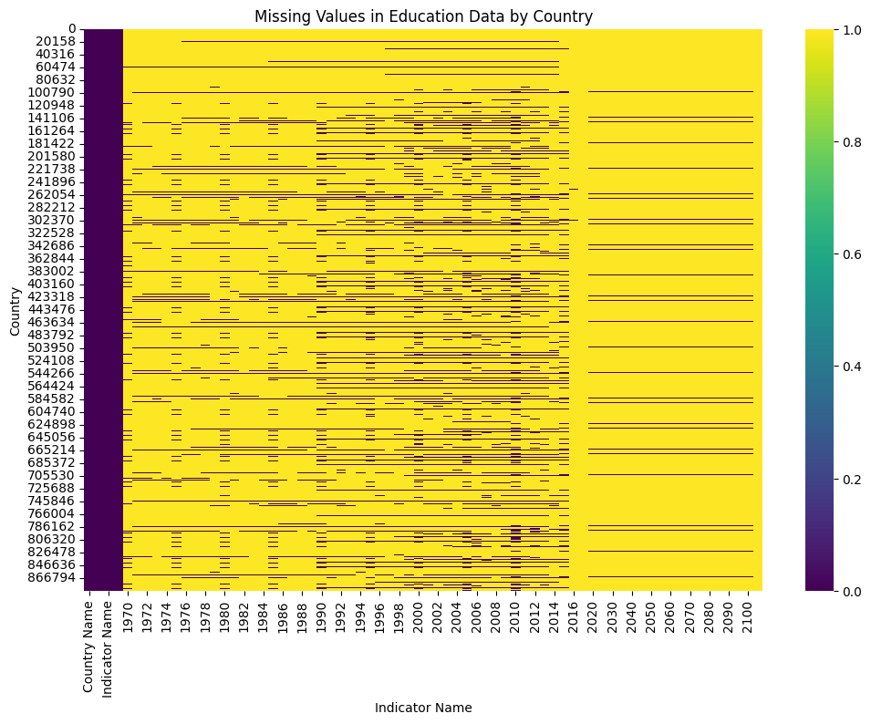

# libraries
import pandas as pd
from collections import Counter
import matplotlib.pyplot as plt
import seaborn as sns# read in data
education_data = pd.read_csv('../codeEdStatsData.csv') # Removed data/education
education_data.head()FileNotFoundError: [Errno 2] No such file or directory: '../EdStatsData.csv'# check shape
print("Dataset Shape:", education_data.shape)
# print column names
print("\nColumn Names:")
print(education_data.columns)Dataset Shape: (886930, 70)
Column Names:
Index(['Country Name', 'Country Code', 'Indicator Name', 'Indicator Code',
'1970', '1971', '1972', '1973', '1974', '1975', '1976', '1977', '1978',
'1979', '1980', '1981', '1982', '1983', '1984', '1985', '1986', '1987',
'1988', '1989', '1990', '1991', '1992', '1993', '1994', '1995', '1996',
'1997', '1998', '1999', '2000', '2001', '2002', '2003', '2004', '2005',
'2006', '2007', '2008', '2009', '2010', '2011', '2012', '2013', '2014',
'2015', '2016', '2017', '2020', '2025', '2030', '2035', '2040', '2045',
'2050', '2055', '2060', '2065', '2070', '2075', '2080', '2085', '2090',
'2095', '2100', 'Unnamed: 69'],
dtype='object')# check NA values
print("\nNA Values:")
print(education_data.isna().sum())
NA Values:
Country Name 0
Country Code 0
Indicator Name 0
Indicator Code 0
1970 814642
...
2085 835494
2090 835494
2095 835494
2100 835494
Unnamed: 69 886930
Length: 70, dtype: int64# print variable types of each column
print("\nVariable Types:")
print(education_data.dtypes)
Variable Types:
Country Name object
Country Code object
Indicator Name object
Indicator Code object
1970 float64
...
2085 float64
2090 float64
2095 float64
2100 float64
Unnamed: 69 float64
Length: 70, dtype: objectNotes on Analysis: * want to know which fields we don’t have data for in the metrics overall tracked * recommendation to scope to primary enrollment for both genders, then for women in both primary and secondary * perhaps tertiary education (??)
# show unique values
unique_values = education_data['Indicator Name'].unique()
print(unique_values)['Adjusted net enrolment rate, lower secondary, both sexes (%)'
'Adjusted net enrolment rate, lower secondary, female (%)'
'Adjusted net enrolment rate, lower secondary, gender parity index (GPI)'
... 'Youth literacy rate, population 15-24 years, female (%)'
'Youth literacy rate, population 15-24 years, gender parity index (GPI)'
'Youth literacy rate, population 15-24 years, male (%)']# Count the frequency of each unique value in the 'Indicator Name' column
indicator_name_counts = Counter(education_data['Indicator Name'])
# Print the count of unique values
print("Number of unique values:", len(indicator_name_counts))
# Print the frequency of each unique value
for indicator_name, count in indicator_name_counts.items():
print(f"{indicator_name}: {count}")Number of unique values: 3665
Adjusted net enrolment rate, lower secondary, both sexes (%): 242
Adjusted net enrolment rate, lower secondary, female (%): 242
Adjusted net enrolment rate, lower secondary, gender parity index (GPI): 242
Adjusted net enrolment rate, lower secondary, male (%): 242
Adjusted net enrolment rate, primary, both sexes (%): 242
Adjusted net enrolment rate, primary, female (%): 242
Adjusted net enrolment rate, primary, gender parity index (GPI): 242
Adjusted net enrolment rate, primary, male (%): 242
Adjusted net enrolment rate, upper secondary, both sexes (%): 242
Adjusted net enrolment rate, upper secondary, female (%): 242
Adjusted net enrolment rate, upper secondary, gender parity index (GPI): 242
Adjusted net enrolment rate, upper secondary, male (%): 242
Adjusted net intake rate to Grade 1 of primary education, both sexes (%): 242
Adjusted net intake rate to Grade 1 of primary education, female (%): 242
Adjusted net intake rate to Grade 1 of primary education, gender parity index (GPI): 242
Adjusted net intake rate to Grade 1 of primary education, male (%): 242
Adult illiterate population, 15+ years, % female: 242
Adult illiterate population, 15+ years, both sexes (number): 242
Adult illiterate population, 15+ years, female (number): 242
Adult illiterate population, 15+ years, male (number): 242
Adult literacy rate, population 15+ years, both sexes (%): 242
Adult literacy rate, population 15+ years, female (%): 242
Adult literacy rate, population 15+ years, gender parity index (GPI): 242
Adult literacy rate, population 15+ years, male (%): 242
Africa Dataset: Average number of grades per multigrade class in primary schools (number of grades): 242
Africa Dataset: Average number of pupils per mathematics textbook in Grade 1 of primary education (number): 242
Africa Dataset: Average number of pupils per mathematics textbook in Grade 2 of primary education (number): 242
Africa Dataset: Average number of pupils per mathematics textbook in Grade 3 of primary education (number): 242
Africa Dataset: Average number of pupils per mathematics textbook in Grade 4 of primary education (number): 242
Africa Dataset: Average number of pupils per mathematics textbook in Grade 5 of primary education (number): 242
Africa Dataset: Average number of pupils per mathematics textbook in Grade 6 of primary education (number): 242
Africa Dataset: Average number of pupils per mathematics textbook in Grade 7 of primary education (number): 242
Africa Dataset: Average number of pupils per mathematics textbook in primary education (number): 242
Africa Dataset: Average number of pupils per reading textbook in Grade 1 of primary education (number): 242
Africa Dataset: Average number of pupils per reading textbook in Grade 2 of primary education (number): 242
Africa Dataset: Average number of pupils per reading textbook in Grade 3 of primary education (number): 242
Africa Dataset: Average number of pupils per reading textbook in Grade 4 of primary education (number): 242
Africa Dataset: Average number of pupils per reading textbook in Grade 5 of primary education (number): 242
Africa Dataset: Average number of pupils per reading textbook in Grade 6 of primary education (number): 242
Africa Dataset: Average number of pupils per reading textbook in Grade 7 of primary education (number): 242
Africa Dataset: Average number of pupils per reading textbook in primary education (number): 242
Africa Dataset: Average size of classes in primary schools (number of pupils): 242
Africa Dataset: Average size of multigrade classes in primary schools (number of pupils): 242
Africa Dataset: Average size of single grade classes in Grade 1 of primary schools (number of pupils): 242
Africa Dataset: Average size of single grade classes in Grade 2 of primary schools (number of pupils): 242
Africa Dataset: Average size of single grade classes in Grade 3 of primary schools (number of pupils): 242
Africa Dataset: Average size of single grade classes in Grade 4 of primary schools (number of pupils): 242
Africa Dataset: Average size of single grade classes in Grade 5 of primary schools (number of pupils): 242
Africa Dataset: Average size of single grade classes in Grade 6 of primary schools (number of pupils): 242
Africa Dataset: Average size of single grade classes in Grade 7 of primary schools (number of pupils): 242
Africa Dataset: Average size of single grade classes in primary schools (number of pupils): 242
Africa Dataset: Graduates from accredited pre-service lower secondary teacher training programmes, both sexes (number): 242
Africa Dataset: Graduates from accredited pre-service lower secondary teacher training programmes, female (number): 242
Africa Dataset: Graduates from accredited pre-service primary or secondary teacher training programmes, both sexes (number): 242
Africa Dataset: Graduates from accredited pre-service primary or secondary teacher training programmes, female (number): 242
Africa Dataset: Graduates from accredited pre-service primary teacher training programmes, both sexes (number): 242
Africa Dataset: Graduates from accredited pre-service primary teacher training programmes, female (number): 242
Africa Dataset: Graduates from accredited pre-service teacher training programmes, level unspecified, both sexes (number): 242
Africa Dataset: Graduates from accredited pre-service teacher training programmes, level unspecified, female (number): 242
Africa Dataset: Graduates from accredited pre-service upper secondary teacher training programmes, both sexes (number): 242
Africa Dataset: Graduates from accredited pre-service upper secondary teacher training programmes, female (number): 242
Africa Dataset: Percentage of female newly recruited teachers in lower secondary education who are trained, female (%): 242
Africa Dataset: Percentage of female newly recruited teachers in primary education who are trained, female (%): 242
Africa Dataset: Percentage of female newly recruited teachers in upper secondary education who are trained, female (%): 242
Africa Dataset: Percentage of female teachers in lower secondary education who are newly recruited, female (%): 242
Africa Dataset: Percentage of female teachers in primary education who are newly recruited, female (%): 242
Africa Dataset: Percentage of female teachers in upper secondary education who are newly recruited, female (%): 242
Africa Dataset: Percentage of lower secondary schools with access to electricity (%): 242
Africa Dataset: Percentage of lower secondary schools with access to potable water (%): 242
Africa Dataset: Percentage of lower secondary schools with mixed-sex toilets (%): 242
Africa Dataset: Percentage of lower secondary schools with no information on electricity (%): 242
Africa Dataset: Percentage of lower secondary schools with no information on potable water (%): 242
Africa Dataset: Percentage of lower secondary schools with no information on toilets (%): 242
Africa Dataset: Percentage of lower secondary schools with single-sex toilets (%): 242
Africa Dataset: Percentage of lower secondary schools with toilets (%): 242
Africa Dataset: Percentage of lower secondary schools without access to electricity (%): 242
Africa Dataset: Percentage of lower secondary schools without access to potable water (%): 242
Africa Dataset: Percentage of lower secondary schools without toilets (%): 242
Africa Dataset: Percentage of male newly recruited teachers in lower secondary education who are trained, male (%): 242
Africa Dataset: Percentage of male newly recruited teachers in primary education who are trained, male (%): 242
Africa Dataset: Percentage of male newly recruited teachers in upper secondary education who are trained, male (%): 242
Africa Dataset: Percentage of male teachers in lower secondary education who are newly recruited, male (%): 242
Africa Dataset: Percentage of male teachers in primary education who are newly recruited, male (%): 242
Africa Dataset: Percentage of male teachers in upper secondary education who are newly recruited, male (%): 242
Africa Dataset: Percentage of newly recruited teachers in lower secondary education who are female (%): 242
Africa Dataset: Percentage of newly recruited teachers in lower secondary education who are trained, both sexes (%): 242
Africa Dataset: Percentage of newly recruited teachers in primary education who are female (%): 242
Africa Dataset: Percentage of newly recruited teachers in primary education who are trained, both sexes (%): 242
Africa Dataset: Percentage of newly recruited teachers in upper secondary education who are female (%): 242
Africa Dataset: Percentage of newly recruited teachers in upper secondary education who are trained, both sexes (%): 242
Africa Dataset: Percentage of primary pupils in multigrade classes (%): 242
Africa Dataset: Percentage of primary schools with access to electricity (%): 242
Africa Dataset: Percentage of primary schools with access to potable water (%): 242
Africa Dataset: Percentage of primary schools with mixed-sex toilets (%): 242
Africa Dataset: Percentage of primary schools with no information on electricity (%): 242
Africa Dataset: Percentage of primary schools with no information on potable water (%): 242
Africa Dataset: Percentage of primary schools with no information on toilets (%): 242
Africa Dataset: Percentage of primary schools with single-sex toilets (%): 242
Africa Dataset: Percentage of primary schools with toilets (%): 242
Africa Dataset: Percentage of primary schools without access to electricity (%): 242
Africa Dataset: Percentage of primary schools without access to potable water (%): 242
Africa Dataset: Percentage of primary schools without toilets (%): 242
Africa Dataset: Percentage of teachers in lower secondary education who are newly recruited, both sexes (%): 242
Africa Dataset: Percentage of teachers in primary education who are newly recruited, both sexes (%): 242
Africa Dataset: Percentage of teachers in upper secondary education who are newly recruited, both sexes (%): 242
Africa Dataset: Ratio of teacher training graduates to teachers in lower secondary education, both sexes: 242
Africa Dataset: Ratio of teacher training graduates to teachers in lower secondary education, female: 242
Africa Dataset: Ratio of teacher training graduates to teachers in lower secondary education, male: 242
Africa Dataset: Ratio of teacher training graduates to teachers in primary education, both sexes: 242
Africa Dataset: Ratio of teacher training graduates to teachers in primary education, female: 242
Africa Dataset: Ratio of teacher training graduates to teachers in primary education, male: 242
Africa Dataset: Ratio of teacher training graduates to teachers in upper secondary education, both sexes: 242
Africa Dataset: Ratio of teacher training graduates to teachers in upper secondary education, female: 242
Africa Dataset: Ratio of teacher training graduates to teachers in upper secondary education, male: 242
Africa Dataset: School census return rate from primary schools: 242
Africa Dataset: School census return rate from secondary schools: 242
Africa Dataset: Teacher attrition rate from public lower secondary education, both sexes (%): 242
Africa Dataset: Teacher attrition rate from public lower secondary education, female (%): 242
Africa Dataset: Teacher attrition rate from public lower secondary education, male (%): 242
Africa Dataset: Teacher attrition rate from public primary education, both sexes (%): 242
Africa Dataset: Teacher attrition rate from public primary education, female (%): 242
Africa Dataset: Teacher attrition rate from public primary education, male (%): 242
Africa Dataset: Teacher attrition rate from public upper secondary education, both sexes (%): 242
Africa Dataset: Teacher attrition rate from public upper secondary education, female (%): 242
Africa Dataset: Teacher attrition rate from public upper secondary education, male (%): 242
All staff compensation as % of total expenditure in lower secondary public institutions (%): 242
All staff compensation as % of total expenditure in post-secondary non-tertiary public institutions (%): 242
All staff compensation as % of total expenditure in pre-primary public institutions (%): 242
All staff compensation as % of total expenditure in primary public institutions (%): 242
All staff compensation as % of total expenditure in public institutions (%): 242
All staff compensation as % of total expenditure in secondary public institutions (%): 242
All staff compensation as % of total expenditure in tertiary public institutions (%): 242
All staff compensation as % of total expenditure in upper secondary public institutions (%): 242
Annual statutory teacher salaries in public institutions in USD. Lower Secondary. 10 years of experience: 242
Annual statutory teacher salaries in public institutions in USD. Lower Secondary. 15 years of experience: 242
Annual statutory teacher salaries in public institutions in USD. Lower Secondary. Starting salary: 242
Annual statutory teacher salaries in public institutions in USD. Lower Secondary. Top of scale: 242
Annual statutory teacher salaries in public institutions in USD. Pre-Primary. 10 years of experience: 242
Annual statutory teacher salaries in public institutions in USD. Pre-Primary. 15 years of experience: 242
Annual statutory teacher salaries in public institutions in USD. Pre-Primary. Starting salary: 242
Annual statutory teacher salaries in public institutions in USD. Pre-Primary. Top of scale: 242
Annual statutory teacher salaries in public institutions in USD. Primary. 10 years of experience: 242
Annual statutory teacher salaries in public institutions in USD. Primary. 15 years of experience: 242
Annual statutory teacher salaries in public institutions in USD. Primary. Starting salary: 242
Annual statutory teacher salaries in public institutions in USD. Primary. Top of scale: 242
Annual statutory teacher salaries in public institutions in USD. Upper Secondary. 10 years of experience: 242
Annual statutory teacher salaries in public institutions in USD. Upper Secondary. 15 years of experience: 242
Annual statutory teacher salaries in public institutions in USD. Upper Secondary. Starting salary: 242
Annual statutory teacher salaries in public institutions in USD. Upper Secondary. Top of scale: 242
Barro-Lee: Average years of primary schooling, age 15+, female: 242
Barro-Lee: Average years of primary schooling, age 15+, total: 242
Barro-Lee: Average years of primary schooling, age 15-19, female: 242
Barro-Lee: Average years of primary schooling, age 15-19, total: 242
Barro-Lee: Average years of primary schooling, age 20-24, female: 242
Barro-Lee: Average years of primary schooling, age 20-24, total: 242
Barro-Lee: Average years of primary schooling, age 25+, female: 242
Barro-Lee: Average years of primary schooling, age 25+, total: 242
Barro-Lee: Average years of primary schooling, age 25-29, female: 242
Barro-Lee: Average years of primary schooling, age 25-29, total: 242
Barro-Lee: Average years of primary schooling, age 30-34, female: 242
Barro-Lee: Average years of primary schooling, age 30-34, total: 242
Barro-Lee: Average years of primary schooling, age 35-39, female: 242
Barro-Lee: Average years of primary schooling, age 35-39, total: 242
Barro-Lee: Average years of primary schooling, age 40-44, female: 242
Barro-Lee: Average years of primary schooling, age 40-44, total: 242
Barro-Lee: Average years of primary schooling, age 45-49, female: 242
Barro-Lee: Average years of primary schooling, age 45-49, total: 242
Barro-Lee: Average years of primary schooling, age 50-54, female: 242
Barro-Lee: Average years of primary schooling, age 50-54, total: 242
Barro-Lee: Average years of primary schooling, age 55-59, female: 242
Barro-Lee: Average years of primary schooling, age 55-59, total: 242
Barro-Lee: Average years of primary schooling, age 60-64, female: 242
Barro-Lee: Average years of primary schooling, age 60-64, total: 242
Barro-Lee: Average years of primary schooling, age 65-69, female: 242
Barro-Lee: Average years of primary schooling, age 65-69, total: 242
Barro-Lee: Average years of primary schooling, age 70-74, female: 242
Barro-Lee: Average years of primary schooling, age 70-74, total: 242
Barro-Lee: Average years of primary schooling, age 75+, female: 242
Barro-Lee: Average years of primary schooling, age 75+, total: 242
Barro-Lee: Average years of secondary schooling, age 15+, female: 242
Barro-Lee: Average years of secondary schooling, age 15+, total: 242
Barro-Lee: Average years of secondary schooling, age 15-19, female: 242
Barro-Lee: Average years of secondary schooling, age 15-19, total: 242
Barro-Lee: Average years of secondary schooling, age 20-24, female: 242
Barro-Lee: Average years of secondary schooling, age 20-24, total: 242
Barro-Lee: Average years of secondary schooling, age 25+, female: 242
Barro-Lee: Average years of secondary schooling, age 25+, total: 242
Barro-Lee: Average years of secondary schooling, age 25-29, female: 242
Barro-Lee: Average years of secondary schooling, age 25-29, total: 242
Barro-Lee: Average years of secondary schooling, age 30-34, female: 242
Barro-Lee: Average years of secondary schooling, age 30-34, total: 242
Barro-Lee: Average years of secondary schooling, age 35-39, female: 242
Barro-Lee: Average years of secondary schooling, age 35-39, total: 242
Barro-Lee: Average years of secondary schooling, age 40-44, female: 242
Barro-Lee: Average years of secondary schooling, age 40-44, total: 242
Barro-Lee: Average years of secondary schooling, age 45-49, female: 242
Barro-Lee: Average years of secondary schooling, age 45-49, total: 242
Barro-Lee: Average years of secondary schooling, age 50-54, female: 242
Barro-Lee: Average years of secondary schooling, age 50-54, total: 242
Barro-Lee: Average years of secondary schooling, age 55-59, female: 242
Barro-Lee: Average years of secondary schooling, age 55-59, total: 242
Barro-Lee: Average years of secondary schooling, age 60-64, female: 242
Barro-Lee: Average years of secondary schooling, age 60-64, total: 242
Barro-Lee: Average years of secondary schooling, age 65-69, female: 242
Barro-Lee: Average years of secondary schooling, age 65-69, total: 242
Barro-Lee: Average years of secondary schooling, age 70-74, female: 242
Barro-Lee: Average years of secondary schooling, age 70-74, total: 242
Barro-Lee: Average years of secondary schooling, age 75+, female: 242
Barro-Lee: Average years of secondary schooling, age 75+, total: 242
Barro-Lee: Average years of tertiary schooling, age 15+, female: 242
Barro-Lee: Average years of tertiary schooling, age 15+, total: 242
Barro-Lee: Average years of tertiary schooling, age 15-19, female: 242
Barro-Lee: Average years of tertiary schooling, age 15-19, total: 242
Barro-Lee: Average years of tertiary schooling, age 20-24, female: 242
Barro-Lee: Average years of tertiary schooling, age 20-24, total: 242
Barro-Lee: Average years of tertiary schooling, age 25+, female: 242
Barro-Lee: Average years of tertiary schooling, age 25+, total: 242
Barro-Lee: Average years of tertiary schooling, age 25-29, female: 242
Barro-Lee: Average years of tertiary schooling, age 25-29, total: 242
Barro-Lee: Average years of tertiary schooling, age 30-34, female: 242
Barro-Lee: Average years of tertiary schooling, age 30-34, total: 242
Barro-Lee: Average years of tertiary schooling, age 35-39, female: 242
Barro-Lee: Average years of tertiary schooling, age 35-39, total: 242
Barro-Lee: Average years of tertiary schooling, age 40-44, female: 242
Barro-Lee: Average years of tertiary schooling, age 40-44, total: 242
Barro-Lee: Average years of tertiary schooling, age 45-49, female: 242
Barro-Lee: Average years of tertiary schooling, age 45-49, total: 242
Barro-Lee: Average years of tertiary schooling, age 50-54, female: 242
Barro-Lee: Average years of tertiary schooling, age 50-54, total: 242
Barro-Lee: Average years of tertiary schooling, age 55-59, female: 242
Barro-Lee: Average years of tertiary schooling, age 55-59, total: 242
Barro-Lee: Average years of tertiary schooling, age 60-64, female: 242
Barro-Lee: Average years of tertiary schooling, age 60-64, total: 242
Barro-Lee: Average years of tertiary schooling, age 65-69, female: 242
Barro-Lee: Average years of tertiary schooling, age 65-69, total: 242
Barro-Lee: Average years of tertiary schooling, age 70-74, female: 242
Barro-Lee: Average years of tertiary schooling, age 70-74, total: 242
Barro-Lee: Average years of tertiary schooling, age 75+, female: 242
Barro-Lee: Average years of tertiary schooling, age 75+, total: 242
Barro-Lee: Average years of total schooling, age 15+, female: 242
Barro-Lee: Average years of total schooling, age 15+, total: 242
Barro-Lee: Average years of total schooling, age 15-19, female: 242
Barro-Lee: Average years of total schooling, age 15-19, total: 242
Barro-Lee: Average years of total schooling, age 20-24, female: 242
Barro-Lee: Average years of total schooling, age 20-24, total: 242
Barro-Lee: Average years of total schooling, age 25+, female: 242
Barro-Lee: Average years of total schooling, age 25+, total: 242
Barro-Lee: Average years of total schooling, age 25-29, female: 242
Barro-Lee: Average years of total schooling, age 25-29, total: 242
Barro-Lee: Average years of total schooling, age 30-34, female: 242
Barro-Lee: Average years of total schooling, age 30-34, total: 242
Barro-Lee: Average years of total schooling, age 35-39, female: 242
Barro-Lee: Average years of total schooling, age 35-39, total: 242
Barro-Lee: Average years of total schooling, age 40-44, female: 242
Barro-Lee: Average years of total schooling, age 40-44, total: 242
Barro-Lee: Average years of total schooling, age 45-49, female: 242
Barro-Lee: Average years of total schooling, age 45-49, total: 242
Barro-Lee: Average years of total schooling, age 50-54, female: 242
Barro-Lee: Average years of total schooling, age 50-54, total: 242
Barro-Lee: Average years of total schooling, age 55-59, female: 242
Barro-Lee: Average years of total schooling, age 55-59, total: 242
Barro-Lee: Average years of total schooling, age 60-64, female: 242
Barro-Lee: Average years of total schooling, age 60-64, total: 242
Barro-Lee: Average years of total schooling, age 65-69, female: 242
Barro-Lee: Average years of total schooling, age 65-69, total: 242
Barro-Lee: Average years of total schooling, age 70-74, female: 242
Barro-Lee: Average years of total schooling, age 70-74, total: 242
Barro-Lee: Average years of total schooling, age 75+, female: 242
Barro-Lee: Average years of total schooling, age 75+, total: 242
Barro-Lee: Percentage of female population age 15+ with no education: 242
Barro-Lee: Percentage of female population age 15+ with primary schooling. Completed Primary: 242
Barro-Lee: Percentage of female population age 15+ with primary schooling. Total (Incomplete and Completed Primary): 242
Barro-Lee: Percentage of female population age 15+ with secondary schooling. Completed Secondary: 242
Barro-Lee: Percentage of female population age 15+ with secondary schooling. Total (Incomplete and Completed Secondary): 242
Barro-Lee: Percentage of female population age 15+ with tertiary schooling. Completed Tertiary: 242
Barro-Lee: Percentage of female population age 15+ with tertiary schooling. Total (Incomplete and Completed Tertiary): 242
Barro-Lee: Percentage of female population age 15-19 with no education: 242
Barro-Lee: Percentage of female population age 15-19 with primary schooling. Completed Primary: 242
Barro-Lee: Percentage of female population age 15-19 with primary schooling. Total (Incomplete and Completed Primary): 242
Barro-Lee: Percentage of female population age 15-19 with secondary schooling. Completed Secondary: 242
Barro-Lee: Percentage of female population age 15-19 with secondary schooling. Total (Incomplete and Completed Secondary): 242
Barro-Lee: Percentage of female population age 15-19 with tertiary schooling. Completed Tertiary: 242
Barro-Lee: Percentage of female population age 15-19 with tertiary schooling. Total (Incomplete and Completed Tertiary): 242
Barro-Lee: Percentage of female population age 20-24 with no education: 242
Barro-Lee: Percentage of female population age 20-24 with primary schooling. Completed Primary: 242
Barro-Lee: Percentage of female population age 20-24 with primary schooling. Total (Incomplete and Completed Primary): 242
Barro-Lee: Percentage of female population age 20-24 with secondary schooling. Completed Secondary: 242
Barro-Lee: Percentage of female population age 20-24 with secondary schooling. Total (Incomplete and Completed Secondary): 242
Barro-Lee: Percentage of female population age 20-24 with tertiary schooling. Completed Tertiary: 242
Barro-Lee: Percentage of female population age 20-24 with tertiary schooling. Total (Incomplete and Completed Tertiary): 242
Barro-Lee: Percentage of female population age 25+ with no education: 242
Barro-Lee: Percentage of female population age 25+ with primary schooling. Completed Primary: 242
Barro-Lee: Percentage of female population age 25+ with primary schooling. Total (Incomplete and Completed Primary): 242
Barro-Lee: Percentage of female population age 25+ with secondary schooling. Completed Secondary: 242
Barro-Lee: Percentage of female population age 25+ with secondary schooling. Total (Incomplete and Completed Secondary): 242
Barro-Lee: Percentage of female population age 25+ with tertiary schooling. Completed Tertiary: 242
Barro-Lee: Percentage of female population age 25+ with tertiary schooling. Total (Incomplete and Completed Tertiary): 242
Barro-Lee: Percentage of female population age 25-29 with no education: 242
Barro-Lee: Percentage of female population age 25-29 with primary schooling. Completed Primary: 242
Barro-Lee: Percentage of female population age 25-29 with primary schooling. Total (Incomplete and Completed Primary): 242
Barro-Lee: Percentage of female population age 25-29 with secondary schooling. Completed Secondary: 242
Barro-Lee: Percentage of female population age 25-29 with secondary schooling. Total (Incomplete and Completed Secondary): 242
Barro-Lee: Percentage of female population age 25-29 with tertiary schooling. Completed Tertiary: 242
Barro-Lee: Percentage of female population age 25-29 with tertiary schooling. Total (Incomplete and Completed Tertiary): 242
Barro-Lee: Percentage of female population age 30-34 with no education: 242
Barro-Lee: Percentage of female population age 30-34 with primary schooling. Completed Primary: 242
Barro-Lee: Percentage of female population age 30-34 with primary schooling. Total (Incomplete and Completed Primary): 242
Barro-Lee: Percentage of female population age 30-34 with secondary schooling. Completed Secondary: 242
Barro-Lee: Percentage of female population age 30-34 with secondary schooling. Total (Incomplete and Completed Secondary): 242
Barro-Lee: Percentage of female population age 30-34 with tertiary schooling. Completed Tertiary: 242
Barro-Lee: Percentage of female population age 30-34 with tertiary schooling. Total (Incomplete and Completed Tertiary): 242
Barro-Lee: Percentage of female population age 35-39 with no education: 242
Barro-Lee: Percentage of female population age 35-39 with primary schooling. Completed Primary: 242
Barro-Lee: Percentage of female population age 35-39 with primary schooling. Total (Incomplete and Completed Primary): 242
Barro-Lee: Percentage of female population age 35-39 with secondary schooling. Completed Secondary: 242
Barro-Lee: Percentage of female population age 35-39 with secondary schooling. Total (Incomplete and Completed Secondary): 242
Barro-Lee: Percentage of female population age 35-39 with tertiary schooling. Completed Tertiary: 242
Barro-Lee: Percentage of female population age 35-39 with tertiary schooling. Total (Incomplete and Completed Tertiary): 242
Barro-Lee: Percentage of female population age 40-44 with no education: 242
Barro-Lee: Percentage of female population age 40-44 with primary schooling. Completed Primary: 242
Barro-Lee: Percentage of female population age 40-44 with primary schooling. Total (Incomplete and Completed Primary): 242
Barro-Lee: Percentage of female population age 40-44 with secondary schooling. Completed Secondary: 242
Barro-Lee: Percentage of female population age 40-44 with secondary schooling. Total (Incomplete and Completed Secondary): 242
Barro-Lee: Percentage of female population age 40-44 with tertiary schooling. Completed Tertiary: 242
Barro-Lee: Percentage of female population age 40-44 with tertiary schooling. Total (Incomplete and Completed Tertiary): 242
Barro-Lee: Percentage of female population age 45-49 with no education: 242
Barro-Lee: Percentage of female population age 45-49 with primary schooling. Completed Primary: 242
Barro-Lee: Percentage of female population age 45-49 with primary schooling. Total (Incomplete and Completed Primary): 242
Barro-Lee: Percentage of female population age 45-49 with secondary schooling. Completed Secondary: 242
Barro-Lee: Percentage of female population age 45-49 with secondary schooling. Total (Incomplete and Completed Secondary): 242
Barro-Lee: Percentage of female population age 45-49 with tertiary schooling. Completed Tertiary: 242
Barro-Lee: Percentage of female population age 45-49 with tertiary schooling. Total (Incomplete and Completed Tertiary): 242
Barro-Lee: Percentage of female population age 50-54 with no education: 242
Barro-Lee: Percentage of female population age 50-54 with primary schooling. Completed Primary: 242
Barro-Lee: Percentage of female population age 50-54 with primary schooling. Total (Incomplete and Completed Primary): 242
Barro-Lee: Percentage of female population age 50-54 with secondary schooling. Completed Secondary: 242
Barro-Lee: Percentage of female population age 50-54 with secondary schooling. Total (Incomplete and Completed Secondary): 242
Barro-Lee: Percentage of female population age 50-54 with tertiary schooling. Completed Tertiary: 242
Barro-Lee: Percentage of female population age 50-54 with tertiary schooling. Total (Incomplete and Completed Tertiary): 242
Barro-Lee: Percentage of female population age 55-59 with no education: 242
Barro-Lee: Percentage of female population age 55-59 with primary schooling. Completed Primary: 242
Barro-Lee: Percentage of female population age 55-59 with primary schooling. Total (Incomplete and Completed Primary): 242
Barro-Lee: Percentage of female population age 55-59 with secondary schooling. Completed Secondary: 242
Barro-Lee: Percentage of female population age 55-59 with secondary schooling. Total (Incomplete and Completed Secondary): 242
Barro-Lee: Percentage of female population age 55-59 with tertiary schooling. Completed Tertiary: 242
Barro-Lee: Percentage of female population age 55-59 with tertiary schooling. Total (Incomplete and Completed Tertiary): 242
Barro-Lee: Percentage of female population age 60-64 with no education: 242
Barro-Lee: Percentage of female population age 60-64 with primary schooling. Completed Primary: 242
Barro-Lee: Percentage of female population age 60-64 with primary schooling. Total (Incomplete and Completed Primary): 242
Barro-Lee: Percentage of female population age 60-64 with secondary schooling. Completed Secondary: 242
Barro-Lee: Percentage of female population age 60-64 with secondary schooling. Total (Incomplete and Completed Secondary): 242
Barro-Lee: Percentage of female population age 60-64 with tertiary schooling. Completed Tertiary: 242
Barro-Lee: Percentage of female population age 60-64 with tertiary schooling. Total (Incomplete and Completed Tertiary): 242
Barro-Lee: Percentage of female population age 65-69 with no education: 242
Barro-Lee: Percentage of female population age 65-69 with primary schooling. Completed Primary: 242
Barro-Lee: Percentage of female population age 65-69 with primary schooling. Total (Incomplete and Completed Primary): 242
Barro-Lee: Percentage of female population age 65-69 with secondary schooling. Completed Secondary: 242
Barro-Lee: Percentage of female population age 65-69 with secondary schooling. Total (Incomplete and Completed Secondary): 242
Barro-Lee: Percentage of female population age 65-69 with tertiary schooling. Completed Tertiary: 242
Barro-Lee: Percentage of female population age 65-69 with tertiary schooling. Total (Incomplete and Completed Tertiary): 242
Barro-Lee: Percentage of female population age 70-74 with no education: 242
Barro-Lee: Percentage of female population age 70-74 with primary schooling. Completed Primary: 242
Barro-Lee: Percentage of female population age 70-74 with primary schooling. Total (Incomplete and Completed Primary): 242
Barro-Lee: Percentage of female population age 70-74 with secondary schooling. Completed Secondary: 242
Barro-Lee: Percentage of female population age 70-74 with secondary schooling. Total (Incomplete and Completed Secondary): 242
Barro-Lee: Percentage of female population age 70-74 with tertiary schooling. Completed Tertiary: 242
Barro-Lee: Percentage of female population age 70-74 with tertiary schooling. Total (Incomplete and Completed Tertiary): 242
Barro-Lee: Percentage of female population age 75+ with no education: 242
Barro-Lee: Percentage of female population age 75+ with primary schooling. Completed Primary: 242
Barro-Lee: Percentage of female population age 75+ with primary schooling. Total (Incomplete and Completed Primary): 242
Barro-Lee: Percentage of female population age 75+ with secondary schooling. Completed Secondary: 242
Barro-Lee: Percentage of female population age 75+ with secondary schooling. Total (Incomplete and Completed Secondary): 242
Barro-Lee: Percentage of female population age 75+ with tertiary schooling. Completed Tertiary: 242
Barro-Lee: Percentage of female population age 75+ with tertiary schooling. Total (Incomplete and Completed Tertiary): 242
Barro-Lee: Percentage of population age 15+ with no education: 242
Barro-Lee: Percentage of population age 15+ with primary schooling. Completed Primary: 242
Barro-Lee: Percentage of population age 15+ with primary schooling. Total (Incomplete and Completed Primary): 242
Barro-Lee: Percentage of population age 15+ with secondary schooling. Completed Secondary: 242
Barro-Lee: Percentage of population age 15+ with secondary schooling. Total (Incomplete and Completed Secondary): 242
Barro-Lee: Percentage of population age 15+ with tertiary schooling. Completed Tertiary: 242
Barro-Lee: Percentage of population age 15+ with tertiary schooling. Total (Incomplete and Completed Tertiary): 242
Barro-Lee: Percentage of population age 15-19 with no education: 242
Barro-Lee: Percentage of population age 15-19 with primary schooling. Completed Primary: 242
Barro-Lee: Percentage of population age 15-19 with primary schooling. Total (Incomplete and Completed Primary): 242
Barro-Lee: Percentage of population age 15-19 with secondary schooling. Completed Secondary: 242
Barro-Lee: Percentage of population age 15-19 with secondary schooling. Total (Incomplete and Completed Secondary): 242
Barro-Lee: Percentage of population age 15-19 with tertiary schooling. Completed Tertiary: 242
Barro-Lee: Percentage of population age 15-19 with tertiary schooling. Total (Incomplete and Completed Tertiary): 242
Barro-Lee: Percentage of population age 20-24 with no education: 242
Barro-Lee: Percentage of population age 20-24 with primary schooling. Completed Primary: 242
Barro-Lee: Percentage of population age 20-24 with primary schooling. Total (Incomplete and Completed Primary): 242
Barro-Lee: Percentage of population age 20-24 with secondary schooling. Completed Secondary: 242
Barro-Lee: Percentage of population age 20-24 with secondary schooling. Total (Incomplete and Completed Secondary): 242
Barro-Lee: Percentage of population age 20-24 with tertiary schooling. Completed Tertiary: 242
Barro-Lee: Percentage of population age 20-24 with tertiary schooling. Total (Incomplete and Completed Tertiary): 242
Barro-Lee: Percentage of population age 25+ with no education: 242
Barro-Lee: Percentage of population age 25+ with primary schooling. Completed Primary: 242
Barro-Lee: Percentage of population age 25+ with primary schooling. Total (Incomplete and Completed Primary): 242
Barro-Lee: Percentage of population age 25+ with secondary schooling. Completed Secondary: 242
Barro-Lee: Percentage of population age 25+ with secondary schooling. Total (Incomplete and Completed Secondary): 242
Barro-Lee: Percentage of population age 25+ with tertiary schooling. Completed Tertiary: 242
Barro-Lee: Percentage of population age 25+ with tertiary schooling. Total (Incomplete and Completed Tertiary): 242
Barro-Lee: Percentage of population age 25-29 with no education: 242
Barro-Lee: Percentage of population age 25-29 with primary schooling. Completed Primary: 242
Barro-Lee: Percentage of population age 25-29 with primary schooling. Total (Incomplete and Completed Primary): 242
Barro-Lee: Percentage of population age 25-29 with secondary schooling. Completed Secondary: 242
Barro-Lee: Percentage of population age 25-29 with secondary schooling. Total (Incomplete and Completed Secondary): 242
Barro-Lee: Percentage of population age 25-29 with tertiary schooling. Completed Tertiary: 242
Barro-Lee: Percentage of population age 25-29 with tertiary schooling. Total (Incomplete and Completed Tertiary): 242
Barro-Lee: Percentage of population age 30-34 with no education: 242
Barro-Lee: Percentage of population age 30-34 with primary schooling. Completed Primary: 242
Barro-Lee: Percentage of population age 30-34 with primary schooling. Total (Incomplete and Completed Primary): 242
Barro-Lee: Percentage of population age 30-34 with secondary schooling. Completed Secondary: 242
Barro-Lee: Percentage of population age 30-34 with secondary schooling. Total (Incomplete and Completed Secondary): 242
Barro-Lee: Percentage of population age 30-34 with tertiary schooling. Completed Tertiary: 242
Barro-Lee: Percentage of population age 30-34 with tertiary schooling. Total (Incomplete and Completed Tertiary): 242
Barro-Lee: Percentage of population age 35-39 with no education: 242
Barro-Lee: Percentage of population age 35-39 with primary schooling. Completed Primary: 242
Barro-Lee: Percentage of population age 35-39 with primary schooling. Total (Incomplete and Completed Primary): 242
Barro-Lee: Percentage of population age 35-39 with secondary schooling. Completed Secondary: 242
Barro-Lee: Percentage of population age 35-39 with secondary schooling. Total (Incomplete and Completed Secondary): 242
Barro-Lee: Percentage of population age 35-39 with tertiary schooling. Completed Tertiary: 242
Barro-Lee: Percentage of population age 35-39 with tertiary schooling. Total (Incomplete and Completed Tertiary): 242
Barro-Lee: Percentage of population age 40-44 with no education: 242
Barro-Lee: Percentage of population age 40-44 with primary schooling. Completed Primary: 242
Barro-Lee: Percentage of population age 40-44 with primary schooling. Total (Incomplete and Completed Primary): 242
Barro-Lee: Percentage of population age 40-44 with secondary schooling. Completed Secondary: 242
Barro-Lee: Percentage of population age 40-44 with secondary schooling. Total (Incomplete and Completed Secondary): 242
Barro-Lee: Percentage of population age 40-44 with tertiary schooling. Completed Tertiary: 242
Barro-Lee: Percentage of population age 40-44 with tertiary schooling. Total (Incomplete and Completed Tertiary): 242
Barro-Lee: Percentage of population age 45-49 with no education: 242
Barro-Lee: Percentage of population age 45-49 with primary schooling. Completed Primary: 242
Barro-Lee: Percentage of population age 45-49 with primary schooling. Total (Incomplete and Completed Primary): 242
Barro-Lee: Percentage of population age 45-49 with secondary schooling. Completed Secondary: 242
Barro-Lee: Percentage of population age 45-49 with secondary schooling. Total (Incomplete and Completed Secondary): 242
Barro-Lee: Percentage of population age 45-49 with tertiary schooling. Completed Tertiary: 242
Barro-Lee: Percentage of population age 45-49 with tertiary schooling. Total (Incomplete and Completed Tertiary): 242
Barro-Lee: Percentage of population age 50-54 with no education: 242
Barro-Lee: Percentage of population age 50-54 with primary schooling. Completed Primary: 242
Barro-Lee: Percentage of population age 50-54 with primary schooling. Total (Incomplete and Completed Primary): 242
Barro-Lee: Percentage of population age 50-54 with secondary schooling. Completed Secondary: 242
Barro-Lee: Percentage of population age 50-54 with secondary schooling. Total (Incomplete and Completed Secondary): 242
Barro-Lee: Percentage of population age 50-54 with tertiary schooling. Completed Tertiary: 242
Barro-Lee: Percentage of population age 50-54 with tertiary schooling. Total (Incomplete and Completed Tertiary): 242
Barro-Lee: Percentage of population age 55-59 with no education: 242
Barro-Lee: Percentage of population age 55-59 with primary schooling. Completed Primary: 242
Barro-Lee: Percentage of population age 55-59 with primary schooling. Total (Incomplete and Completed Primary): 242
Barro-Lee: Percentage of population age 55-59 with secondary schooling. Completed Secondary: 242
Barro-Lee: Percentage of population age 55-59 with secondary schooling. Total (Incomplete and Completed Secondary): 242
Barro-Lee: Percentage of population age 55-59 with tertiary schooling. Completed Tertiary: 242
Barro-Lee: Percentage of population age 55-59 with tertiary schooling. Total (Incomplete and Completed Tertiary): 242
Barro-Lee: Percentage of population age 60-64 with no education: 242
Barro-Lee: Percentage of population age 60-64 with primary schooling. Completed Primary: 242
Barro-Lee: Percentage of population age 60-64 with primary schooling. Total (Incomplete and Completed Primary): 242
Barro-Lee: Percentage of population age 60-64 with secondary schooling. Completed Secondary: 242
Barro-Lee: Percentage of population age 60-64 with secondary schooling. Total (Incomplete and Completed Secondary): 242
Barro-Lee: Percentage of population age 60-64 with tertiary schooling. Completed Tertiary: 242
Barro-Lee: Percentage of population age 60-64 with tertiary schooling. Total (Incomplete and Completed Tertiary): 242
Barro-Lee: Percentage of population age 65-69 with no education: 242
Barro-Lee: Percentage of population age 65-69 with primary schooling. Completed Primary: 242
Barro-Lee: Percentage of population age 65-69 with primary schooling. Total (Incomplete and Completed Primary): 242
Barro-Lee: Percentage of population age 65-69 with secondary schooling. Completed Secondary: 242
Barro-Lee: Percentage of population age 65-69 with secondary schooling. Total (Incomplete and Completed Secondary): 242
Barro-Lee: Percentage of population age 65-69 with tertiary schooling. Completed Tertiary: 242
Barro-Lee: Percentage of population age 65-69 with tertiary schooling. Total (Incomplete and Completed Tertiary): 242
Barro-Lee: Percentage of population age 70-74 with no education: 242
Barro-Lee: Percentage of population age 70-74 with primary schooling. Completed Primary: 242
Barro-Lee: Percentage of population age 70-74 with primary schooling. Total (Incomplete and Completed Primary): 242
Barro-Lee: Percentage of population age 70-74 with secondary schooling. Completed Secondary: 242
Barro-Lee: Percentage of population age 70-74 with secondary schooling. Total (Incomplete and Completed Secondary): 242
Barro-Lee: Percentage of population age 70-74 with tertiary schooling. Completed Tertiary: 242
Barro-Lee: Percentage of population age 70-74 with tertiary schooling. Total (Incomplete and Completed Tertiary): 242
Barro-Lee: Percentage of population age 75+ with no education: 242
Barro-Lee: Percentage of population age 75+ with primary schooling. Completed Primary: 242
Barro-Lee: Percentage of population age 75+ with primary schooling. Total (Incomplete and Completed Primary): 242
Barro-Lee: Percentage of population age 75+ with secondary schooling. Completed Secondary: 242
Barro-Lee: Percentage of population age 75+ with secondary schooling. Total (Incomplete and Completed Secondary): 242
Barro-Lee: Percentage of population age 75+ with tertiary schooling. Completed Tertiary: 242
Barro-Lee: Percentage of population age 75+ with tertiary schooling. Total (Incomplete and Completed Tertiary): 242
Barro-Lee: Population in thousands, age 15+, female: 242
Barro-Lee: Population in thousands, age 15+, total: 242
Barro-Lee: Population in thousands, age 15-19, female: 242
Barro-Lee: Population in thousands, age 15-19, total: 242
Barro-Lee: Population in thousands, age 20-24, female: 242
Barro-Lee: Population in thousands, age 20-24, total: 242
Barro-Lee: Population in thousands, age 25+, female: 242
Barro-Lee: Population in thousands, age 25+, total: 242
Barro-Lee: Population in thousands, age 25-29, female: 242
Barro-Lee: Population in thousands, age 25-29, total: 242
Barro-Lee: Population in thousands, age 30-34, female: 242
Barro-Lee: Population in thousands, age 30-34, total: 242
Barro-Lee: Population in thousands, age 35-39, female: 242
Barro-Lee: Population in thousands, age 35-39, total: 242
Barro-Lee: Population in thousands, age 40-44, female: 242
Barro-Lee: Population in thousands, age 40-44, total: 242
Barro-Lee: Population in thousands, age 45-49, female: 242
Barro-Lee: Population in thousands, age 45-49, total: 242
Barro-Lee: Population in thousands, age 50-54, female: 242
Barro-Lee: Population in thousands, age 50-54, total: 242
Barro-Lee: Population in thousands, age 55-59, female: 242
Barro-Lee: Population in thousands, age 55-59, total: 242
Barro-Lee: Population in thousands, age 60-64, female: 242
Barro-Lee: Population in thousands, age 60-64, total: 242
Barro-Lee: Population in thousands, age 65-69, female: 242
Barro-Lee: Population in thousands, age 65-69, total: 242
Barro-Lee: Population in thousands, age 70-74, female: 242
Barro-Lee: Population in thousands, age 70-74, total: 242
Barro-Lee: Population in thousands, age 75+, female: 242
Barro-Lee: Population in thousands, age 75+, total: 242
Capital expenditure as % of total expenditure in lower secondary public institutions (%): 242
Capital expenditure as % of total expenditure in post-secondary non-tertiary public institutions (%): 242
Capital expenditure as % of total expenditure in pre-primary public institutions (%): 242
Capital expenditure as % of total expenditure in primary public institutions (%): 242
Capital expenditure as % of total expenditure in public institutions (%): 242
Capital expenditure as % of total expenditure in secondary public institutions (%): 242
Capital expenditure as % of total expenditure in tertiary public institutions (%): 242
Capital expenditure as % of total expenditure in upper-secondary public institutions (%): 242
Cumulative drop-out rate to the last grade of lower secondary general education, both sexes (%): 242
Cumulative drop-out rate to the last grade of lower secondary general education, female (%): 242
Cumulative drop-out rate to the last grade of lower secondary general education, male (%): 242
Cumulative drop-out rate to the last grade of primary education, both sexes (%): 242
Cumulative drop-out rate to the last grade of primary education, female (%): 242
Cumulative drop-out rate to the last grade of primary education, male (%): 242
Current expenditure as % of total expenditure in lower secondary public institutions (%): 242
Current expenditure as % of total expenditure in post-secondary non-tertiary public institutions (%): 242
Current expenditure as % of total expenditure in pre-primary public institutions (%): 242
Current expenditure as % of total expenditure in primary public institutions (%): 242
Current expenditure as % of total expenditure in public institutions (%): 242
Current expenditure as % of total expenditure in secondary public institutions (%): 242
Current expenditure as % of total expenditure in tertiary public institutions (%): 242
Current expenditure as % of total expenditure in upper-secondary public institutions (%): 242
Current expenditure other than staff compensation as % of total expenditure in lower secondary public institutions (%): 242
Current expenditure other than staff compensation as % of total expenditure in post-secondary non-tertiary public institutions (%): 242
Current expenditure other than staff compensation as % of total expenditure in pre-primary public institutions (%): 242
Current expenditure other than staff compensation as % of total expenditure in primary public institutions (%): 242
Current expenditure other than staff compensation as % of total expenditure in public institutions (%): 242
Current expenditure other than staff compensation as % of total expenditure in secondary public institutions (%): 242
Current expenditure other than staff compensation as % of total expenditure in tertiary public institutions (%): 242
Current expenditure other than staff compensation as % of total expenditure in upper secondary public institutions (%): 242
DHS: Average years of schooling by age group. Age 15-19: 242
DHS: Average years of schooling by age group. Age 15-19. Female: 242
DHS: Average years of schooling by age group. Age 15-19. Male: 242
DHS: Average years of schooling by age group. Age 15-19. Quintile 1: 242
DHS: Average years of schooling by age group. Age 15-19. Quintile 2: 242
DHS: Average years of schooling by age group. Age 15-19. Quintile 3: 242
DHS: Average years of schooling by age group. Age 15-19. Quintile 4: 242
DHS: Average years of schooling by age group. Age 15-19. Quintile 5: 242
DHS: Average years of schooling by age group. Age 15-19. Rural: 242
DHS: Average years of schooling by age group. Age 15-19. Urban: 242
DHS: Gini coefficient of average years of schooling. Age 15+: 242
DHS: Gini coefficient of average years of schooling. Age 15+. Female: 242
DHS: Gini coefficient of average years of schooling. Age 15+. Male: 242
DHS: Gini coefficient of average years of schooling. Age 15+. Quintile 1: 242
DHS: Gini coefficient of average years of schooling. Age 15+. Quintile 2: 242
DHS: Gini coefficient of average years of schooling. Age 15+. Quintile 3: 242
DHS: Gini coefficient of average years of schooling. Age 15+. Quintile 4: 242
DHS: Gini coefficient of average years of schooling. Age 15+. Quintile 5: 242
DHS: Gini coefficient of average years of schooling. Age 15+. Rural: 242
DHS: Gini coefficient of average years of schooling. Age 15+. Urban: 242
DHS: Gross attendance rate. Post Secondary: 242
DHS: Gross attendance rate. Post Secondary. Female: 242
DHS: Gross attendance rate. Post Secondary. Male: 242
DHS: Gross attendance rate. Post Secondary. Quintile 1: 242
DHS: Gross attendance rate. Post Secondary. Quintile 2: 242
DHS: Gross attendance rate. Post Secondary. Quintile 3: 242
DHS: Gross attendance rate. Post Secondary. Quintile 4: 242
DHS: Gross attendance rate. Post Secondary. Quintile 5: 242
DHS: Gross attendance rate. Post Secondary. Rural: 242
DHS: Gross attendance rate. Post Secondary. Urban: 242
DHS: Net attendance rate. Primary: 242
DHS: Net attendance rate. Primary. Female: 242
DHS: Net attendance rate. Primary. Male: 242
DHS: Net attendance rate. Primary. Quintile 1: 242
DHS: Net attendance rate. Primary. Quintile 2: 242
DHS: Net attendance rate. Primary. Quintile 3: 242
DHS: Net attendance rate. Primary. Quintile 4: 242
DHS: Net attendance rate. Primary. Quintile 5: 242
DHS: Net attendance rate. Primary. Rural: 242
DHS: Net attendance rate. Primary. Urban: 242
DHS: Net attendance rate. Secondary: 242
DHS: Net attendance rate. Secondary. Female: 242
DHS: Net attendance rate. Secondary. Male: 242
DHS: Net attendance rate. Secondary. Quintile 1: 242
DHS: Net attendance rate. Secondary. Quintile 2: 242
DHS: Net attendance rate. Secondary. Quintile 3: 242
DHS: Net attendance rate. Secondary. Quintile 4: 242
DHS: Net attendance rate. Secondary. Quintile 5: 242
DHS: Net attendance rate. Secondary. Rural: 242
DHS: Net attendance rate. Secondary. Urban: 242
DHS: Net intake rate for the first grade of primary education: 242
DHS: Net intake rate for the first grade of primary education. Female: 242
DHS: Net intake rate for the first grade of primary education. Male: 242
DHS: Net intake rate for the first grade of primary education. Quintile 1: 242
DHS: Net intake rate for the first grade of primary education. Quintile 2: 242
DHS: Net intake rate for the first grade of primary education. Quintile 3: 242
DHS: Net intake rate for the first grade of primary education. Quintile 4: 242
DHS: Net intake rate for the first grade of primary education. Quintile 5: 242
DHS: Net intake rate for the first grade of primary education. Rural: 242
DHS: Net intake rate for the first grade of primary education. Urban: 242
DHS: Primary completion rate: 242
DHS: Primary completion rate. Female: 242
DHS: Primary completion rate. Male: 242
DHS: Primary completion rate. Quintile 1: 242
DHS: Primary completion rate. Quintile 2: 242
DHS: Primary completion rate. Quintile 3: 242
DHS: Primary completion rate. Quintile 4: 242
DHS: Primary completion rate. Quintile 5: 242
DHS: Primary completion rate. Rural: 242
DHS: Primary completion rate. Urban: 242
DHS: Proportion of out-of-school. Primary: 242
DHS: Proportion of out-of-school. Primary. Female: 242
DHS: Proportion of out-of-school. Primary. Male: 242
DHS: Proportion of out-of-school. Primary. Quintile 1: 242
DHS: Proportion of out-of-school. Primary. Quintile 2: 242
DHS: Proportion of out-of-school. Primary. Quintile 3: 242
DHS: Proportion of out-of-school. Primary. Quintile 4: 242
DHS: Proportion of out-of-school. Primary. Quintile 5: 242
DHS: Proportion of out-of-school. Primary. Rural: 242
DHS: Proportion of out-of-school. Primary. Urban: 242
DHS: Secondary completion rate: 242
DHS: Secondary completion rate. Female: 242
DHS: Secondary completion rate. Male: 242
DHS: Secondary completion rate. Quintile 1: 242
DHS: Secondary completion rate. Quintile 2: 242
DHS: Secondary completion rate. Quintile 3: 242
DHS: Secondary completion rate. Quintile 4: 242
DHS: Secondary completion rate. Quintile 5: 242
DHS: Secondary completion rate. Rural: 242
DHS: Secondary completion rate. Urban: 242
DHS: Transition rate. Primary to Secondary: 242
DHS: Transition rate. Primary to Secondary. Female: 242
DHS: Transition rate. Primary to Secondary. Male: 242
DHS: Transition rate. Primary to Secondary. Quintile 1: 242
DHS: Transition rate. Primary to Secondary. Quintile 2: 242
DHS: Transition rate. Primary to Secondary. Quintile 3: 242
DHS: Transition rate. Primary to Secondary. Quintile 4: 242
DHS: Transition rate. Primary to Secondary. Quintile 5: 242
DHS: Transition rate. Primary to Secondary. Rural: 242
DHS: Transition rate. Primary to Secondary. Urban: 242
DHS: Typology of out-of-school children. Primary. Dropped out: 242
DHS: Typology of out-of-school children. Primary. Dropped out. Female: 242
DHS: Typology of out-of-school children. Primary. Dropped out. Male: 242
DHS: Typology of out-of-school children. Primary. Dropped out. Quintile 1: 242
DHS: Typology of out-of-school children. Primary. Dropped out. Quintile 2: 242
DHS: Typology of out-of-school children. Primary. Dropped out. Quintile 3: 242
DHS: Typology of out-of-school children. Primary. Dropped out. Quintile 4: 242
DHS: Typology of out-of-school children. Primary. Dropped out. Quintile 5: 242
DHS: Typology of out-of-school children. Primary. Dropped out. Rural: 242
DHS: Typology of out-of-school children. Primary. Dropped out. Urban: 242
DHS: Typology of out-of-school children. Primary. Late entry: 242
DHS: Typology of out-of-school children. Primary. Late entry. Female: 242
DHS: Typology of out-of-school children. Primary. Late entry. Male: 242
DHS: Typology of out-of-school children. Primary. Late entry. Quintile 1: 242
DHS: Typology of out-of-school children. Primary. Late entry. Quintile 2: 242
DHS: Typology of out-of-school children. Primary. Late entry. Quintile 3: 242
DHS: Typology of out-of-school children. Primary. Late entry. Quintile 4: 242
DHS: Typology of out-of-school children. Primary. Late entry. Quintile 5: 242
DHS: Typology of out-of-school children. Primary. Late entry. Rural: 242
DHS: Typology of out-of-school children. Primary. Late entry. Urban: 242
DHS: Typology of out-of-school children. Primary. Never in school: 242
DHS: Typology of out-of-school children. Primary. Never in school. Female: 242
DHS: Typology of out-of-school children. Primary. Never in school. Male: 242
DHS: Typology of out-of-school children. Primary. Never in school. Quintile 1: 242
DHS: Typology of out-of-school children. Primary. Never in school. Quintile 2: 242
DHS: Typology of out-of-school children. Primary. Never in school. Quintile 3: 242
DHS: Typology of out-of-school children. Primary. Never in school. Quintile 4: 242
DHS: Typology of out-of-school children. Primary. Never in school. Quintile 5: 242
DHS: Typology of out-of-school children. Primary. Never in school. Rural: 242
DHS: Typology of out-of-school children. Primary. Never in school. Urban: 242
Drop-out rate from Grade 1 of lower secondary general education, both sexes (%): 242
Drop-out rate from Grade 1 of lower secondary general education, female (%): 242
Drop-out rate from Grade 1 of lower secondary general education, male (%): 242
Drop-out rate from Grade 1 of primary education, both sexes (%): 242
Drop-out rate from Grade 1 of primary education, female (%): 242
Drop-out rate from Grade 1 of primary education, male (%): 242
Drop-out rate from Grade 2 of lower secondary general education, both sexes (%): 242
Drop-out rate from Grade 2 of lower secondary general education, female (%): 242
Drop-out rate from Grade 2 of lower secondary general education, male (%): 242
Drop-out rate from Grade 2 of primary education, both sexes (%): 242
Drop-out rate from Grade 2 of primary education, female (%): 242
Drop-out rate from Grade 2 of primary education, male (%): 242
Drop-out rate from Grade 3 of lower secondary general education, both sexes (%): 242
Drop-out rate from Grade 3 of lower secondary general education, female (%): 242
Drop-out rate from Grade 3 of lower secondary general education, male (%): 242
Drop-out rate from Grade 3 of primary education, both sexes (%): 242
Drop-out rate from Grade 3 of primary education, female (%): 242
Drop-out rate from Grade 3 of primary education, male (%): 242
Drop-out rate from Grade 4 of lower secondary general education, both sexes (%): 242
Drop-out rate from Grade 4 of lower secondary general education, female (%): 242
Drop-out rate from Grade 4 of lower secondary general education, male (%): 242
Drop-out rate from Grade 4 of primary education, both sexes (%): 242
Drop-out rate from Grade 4 of primary education, female (%): 242
Drop-out rate from Grade 4 of primary education, male (%): 242
Drop-out rate from Grade 5 of lower secondary general education, both sexes (%): 242
Drop-out rate from Grade 5 of lower secondary general education, female (%): 242
Drop-out rate from Grade 5 of lower secondary general education, male (%): 242
Drop-out rate from Grade 5 of primary education, both sexes (%): 242
Drop-out rate from Grade 5 of primary education, female (%): 242
Drop-out rate from Grade 5 of primary education, male (%): 242
Drop-out rate from Grade 6 of primary education, both sexes (%): 242
Drop-out rate from Grade 6 of primary education, female (%): 242
Drop-out rate from Grade 6 of primary education, male (%): 242
Duration of compulsory education (years): 242
Early school leavers from primary education, both sexes (number): 242
Early school leavers from primary education, female (number): 242
Early school leavers from primary education, male (number): 242
Effective transition rate from primary to lower secondary general education, both sexes (%): 242
Effective transition rate from primary to lower secondary general education, female (%): 242
Effective transition rate from primary to lower secondary general education, gender parity index (GPI): 242
Effective transition rate from primary to lower secondary general education, male (%): 242
EGRA: Correct Isolated Words Read Per Minute (Mean). Afan Oromo. 2nd Grade: 242
EGRA: Correct Isolated Words Read Per Minute (Mean). Afan Oromo. 3rd Grade: 242
EGRA: Correct Isolated Words Read Per Minute (Mean). Amharic. 2nd Grade: 242
EGRA: Correct Isolated Words Read Per Minute (Mean). Amharic. 3rd Grade: 242
EGRA: Correct Isolated Words Read Per Minute (Mean). Arabic. 2nd Grade: 242
EGRA: Correct Isolated Words Read Per Minute (Mean). Bamanankan. 2nd Grade: 242
EGRA: Correct Isolated Words Read Per Minute (Mean). Bomu. 2nd Grade: 242
EGRA: Correct Isolated Words Read Per Minute (Mean). Chichewa. 2nd Grade: 242
EGRA: Correct Isolated Words Read Per Minute (Mean). Chichewa. 4th Grade: 242
EGRA: Correct Isolated Words Read Per Minute (Mean). English. 2nd Grade: 242
EGRA: Correct Isolated Words Read Per Minute (Mean). English. 3rd Grade: 242
EGRA: Correct Isolated Words Read Per Minute (Mean). English. 4th Grade: 242
EGRA: Correct Isolated Words Read Per Minute (Mean). English. 6th Grade: 242
EGRA: Correct Isolated Words Read Per Minute (Mean). Filipino. 3rd Grade: 242
EGRA: Correct Isolated Words Read Per Minute (Mean). Fulfulde. 2nd Grade: 242
EGRA: Correct Isolated Words Read Per Minute (Mean). Hararigna. 2nd Grade: 242
EGRA: Correct Isolated Words Read Per Minute (Mean). Hararigna. 3rd Grade: 242
EGRA: Correct Isolated Words Read Per Minute (Mean). Kinyarwanda. 4th Grade: 242
EGRA: Correct Isolated Words Read Per Minute (Mean). Kinyarwanda. 6th Grade: 242
EGRA: Correct Isolated Words Read Per Minute (Mean). Kiswahili. 2nd Grade: 242
EGRA: Correct Isolated Words Read Per Minute (Mean). Sidaamu Afoo. 2nd Grade: 242
EGRA: Correct Isolated Words Read Per Minute (Mean). Sidaamu Afoo. 3rd Grade: 242
EGRA: Correct Isolated Words Read Per Minute (Mean). Somaligna. 2nd Grade: 242
EGRA: Correct Isolated Words Read Per Minute (Mean). Somaligna. 3rd Grade: 242
EGRA: Correct Isolated Words Read Per Minute (Mean). Songhoi. 2nd Grade: 242
EGRA: Correct Isolated Words Read Per Minute (Mean). Spanish. 2nd Grade: 242
EGRA: Correct Isolated Words Read Per Minute (Mean). Spanish. 3rd Grade: 242
EGRA: Correct Isolated Words Read Per Minute (Mean). Spanish. 4th Grade: 242
EGRA: Correct Isolated Words Read Per Minute (Mean). Tigrinya. 2nd Grade: 242
EGRA: Correct Isolated Words Read Per Minute (Mean). Tigrinya. 3rd Grade: 242
EGRA: Correct Letter Names Read Per Minute (Mean). Afan Oromo. 2nd Grade: 242
EGRA: Correct Letter Names Read Per Minute (Mean). Afan Oromo. 3rd Grade: 242
EGRA: Correct Letter Names Read Per Minute (Mean). Amharic. 2nd Grade: 242
EGRA: Correct Letter Names Read Per Minute (Mean). Amharic. 3rd Grade: 242
EGRA: Correct Letter Names Read Per Minute (Mean). Bamanankan. 2nd Grade: 242
EGRA: Correct Letter Names Read Per Minute (Mean). Bomu. 2nd Grade: 242
EGRA: Correct Letter Names Read Per Minute (Mean). Chichewa. 2nd Grade: 242
EGRA: Correct Letter Names Read Per Minute (Mean). Chichewa. 4th Grade: 242
EGRA: Correct Letter Names Read Per Minute (Mean). English. 2nd Grade: 242
EGRA: Correct Letter Names Read Per Minute (Mean). English. 3rd Grade: 242
EGRA: Correct Letter Names Read Per Minute (Mean). English. 4th Grade: 242
EGRA: Correct Letter Names Read Per Minute (Mean). French. 3rd Grade: 242
EGRA: Correct Letter Names Read Per Minute (Mean). Fulfulde. 2nd Grade: 242
EGRA: Correct Letter Names Read Per Minute (Mean). Hararigna. 2nd Grade: 242
EGRA: Correct Letter Names Read Per Minute (Mean). Hararigna. 3rd Grade: 242
EGRA: Correct Letter Names Read Per Minute (Mean). Sidaamu Afoo. 2nd Grade: 242
EGRA: Correct Letter Names Read Per Minute (Mean). Sidaamu Afoo. 3rd Grade: 242
EGRA: Correct Letter Names Read Per Minute (Mean). Somaligna. 2nd Grade: 242
EGRA: Correct Letter Names Read Per Minute (Mean). Somaligna. 3rd Grade: 242
EGRA: Correct Letter Names Read Per Minute (Mean). Songhoi. 2nd Grade: 242
EGRA: Correct Letter Names Read Per Minute (Mean). Spanish. 2nd Grade: 242
EGRA: Correct Letter Names Read Per Minute (Mean). Spanish. 3rd Grade: 242
EGRA: Correct Letter Names Read Per Minute (Mean). Spanish. 4th Grade: 242
EGRA: Correct Letter Names Read Per Minute (Mean). Tigrinya. 2nd Grade: 242
EGRA: Correct Letter Names Read Per Minute (Mean). Tigrinya. 3rd Grade: 242
EGRA: Correct Letter Sounds Read Per Minute (Mean). Akuapem. 2nd Grade: 242
EGRA: Correct Letter Sounds Read Per Minute (Mean). Arabic. 2nd Grade: 242
EGRA: Correct Letter Sounds Read Per Minute (Mean). Arabic. 3rd Grade: 242
EGRA: Correct Letter Sounds Read Per Minute (Mean). Asante Twi. 2nd Grade: 242
EGRA: Correct Letter Sounds Read Per Minute (Mean). Chitonga. 2nd Grade: 242
EGRA: Correct Letter Sounds Read Per Minute (Mean). Cinyanja. 2nd Grade: 242
EGRA: Correct Letter Sounds Read Per Minute (Mean). Dagaare. 2nd Grade: 242
EGRA: Correct Letter Sounds Read Per Minute (Mean). Dagbani. 2nd Grade: 242
EGRA: Correct Letter Sounds Read Per Minute (Mean). Dangme. 2nd Grade: 242
EGRA: Correct Letter Sounds Read Per Minute (Mean). English. 2nd Grade: 242
EGRA: Correct Letter Sounds Read Per Minute (Mean). English. 3rd Grade: 242
EGRA: Correct Letter Sounds Read Per Minute (Mean). English. 4th Grade: 242
EGRA: Correct Letter Sounds Read Per Minute (Mean). English. 6th Grade: 242
EGRA: Correct Letter Sounds Read Per Minute (Mean). Ewe. 2nd Grade: 242
EGRA: Correct Letter Sounds Read Per Minute (Mean). Fante. 2nd Grade: 242
EGRA: Correct Letter Sounds Read Per Minute (Mean). Filipino. 3rd Grade: 242
EGRA: Correct Letter Sounds Read Per Minute (Mean). Ga. 2nd Grade: 242
EGRA: Correct Letter Sounds Read Per Minute (Mean). Gonja. 2nd Grade: 242
EGRA: Correct Letter Sounds Read Per Minute (Mean). Icibemba. 2nd Grade: 242
EGRA: Correct Letter Sounds Read Per Minute (Mean). Indonesian. 2nd Grade: 242
EGRA: Correct Letter Sounds Read Per Minute (Mean). Kasem. 2nd Grade: 242
EGRA: Correct Letter Sounds Read Per Minute (Mean). Kiikaonde. 2nd Grade: 242
EGRA: Correct Letter Sounds Read Per Minute (Mean). Kinyarwanda. 4th Grade: 242
EGRA: Correct Letter Sounds Read Per Minute (Mean). Kinyarwanda. 6th Grade: 242
EGRA: Correct Letter Sounds Read Per Minute (Mean). Lunda. 2nd Grade: 242
EGRA: Correct Letter Sounds Read Per Minute (Mean). Luvale. 2nd Grade: 242
EGRA: Correct Letter Sounds Read Per Minute (Mean). Nzema. 2nd Grade: 242
EGRA: Correct Letter Sounds Read Per Minute (Mean). Silozi. 2nd Grade: 242
EGRA: Correct Non-Words Read Per Minute (Mean). Afan Oromo. 2nd Grade: 242
EGRA: Correct Non-Words Read Per Minute (Mean). Afan Oromo. 3rd Grade: 242
EGRA: Correct Non-Words Read Per Minute (Mean). Akuapem. 2nd Grade: 242
EGRA: Correct Non-Words Read Per Minute (Mean). Amharic. 2nd Grade: 242
EGRA: Correct Non-Words Read Per Minute (Mean). Amharic. 3rd Grade: 242
EGRA: Correct Non-Words Read Per Minute (Mean). Arabic. 2nd Grade: 242
EGRA: Correct Non-Words Read Per Minute (Mean). Arabic. 3rd Grade: 242
EGRA: Correct Non-Words Read Per Minute (Mean). Asante Twi. 2nd Grade: 242
EGRA: Correct Non-Words Read Per Minute (Mean). Bamanankan. 2nd Grade: 242
EGRA: Correct Non-Words Read Per Minute (Mean). Bomu. 2nd Grade: 242
EGRA: Correct Non-Words Read Per Minute (Mean). Chichewa. 2nd Grade: 242
EGRA: Correct Non-Words Read Per Minute (Mean). Chichewa. 4th Grade: 242
EGRA: Correct Non-Words Read Per Minute (Mean). Chitonga. 2nd Grade: 242
EGRA: Correct Non-Words Read Per Minute (Mean). Cinyanja. 2nd Grade: 242
EGRA: Correct Non-Words Read Per Minute (Mean). Dagaare. 2nd Grade: 242
EGRA: Correct Non-Words Read Per Minute (Mean). Dagbani. 2nd Grade: 242
EGRA: Correct Non-Words Read Per Minute (Mean). Dangme. 2nd Grade: 242
EGRA: Correct Non-Words Read Per Minute (Mean). English. 2nd Grade: 242
EGRA: Correct Non-Words Read Per Minute (Mean). English. 3rd Grade: 242
EGRA: Correct Non-Words Read Per Minute (Mean). English. 4th Grade: 242
EGRA: Correct Non-Words Read Per Minute (Mean). English. 6th Grade: 242
EGRA: Correct Non-Words Read Per Minute (Mean). Ewe. 2nd Grade: 242
EGRA: Correct Non-Words Read Per Minute (Mean). Fante. 2nd Grade: 242
EGRA: Correct Non-Words Read Per Minute (Mean). Filipino. 3rd Grade: 242
EGRA: Correct Non-Words Read Per Minute (Mean). French. 3rd Grade: 242
EGRA: Correct Non-Words Read Per Minute (Mean). Fulfulde. 2nd Grade: 242
EGRA: Correct Non-Words Read Per Minute (Mean). Ga. 2nd Grade: 242
EGRA: Correct Non-Words Read Per Minute (Mean). Gonja. 2nd Grade: 242
EGRA: Correct Non-Words Read Per Minute (Mean). Hararigna. 2nd Grade: 242
EGRA: Correct Non-Words Read Per Minute (Mean). Hararigna. 3rd Grade: 242
EGRA: Correct Non-Words Read Per Minute (Mean). Icibemba. 2nd Grade: 242
EGRA: Correct Non-Words Read Per Minute (Mean). Indonesian. 2nd Grade: 242
EGRA: Correct Non-Words Read Per Minute (Mean). Kasem. 2nd Grade: 242
EGRA: Correct Non-Words Read Per Minute (Mean). Kiikaonde. 2nd Grade: 242
EGRA: Correct Non-Words Read Per Minute (Mean). Kinyarwanda. 4th Grade: 242
EGRA: Correct Non-Words Read Per Minute (Mean). Kinyarwanda. 6th Grade: 242
EGRA: Correct Non-Words Read Per Minute (Mean). Kiswahili. 2nd Grade: 242
EGRA: Correct Non-Words Read Per Minute (Mean). Lunda. 2nd Grade: 242
EGRA: Correct Non-Words Read Per Minute (Mean). Luvale. 2nd Grade: 242
EGRA: Correct Non-Words Read Per Minute (Mean). Nzema. 2nd Grade: 242
EGRA: Correct Non-Words Read Per Minute (Mean). Sidaamu Afoo. 2nd Grade: 242
EGRA: Correct Non-Words Read Per Minute (Mean). Sidaamu Afoo. 3rd Grade: 242
EGRA: Correct Non-Words Read Per Minute (Mean). Silozi. 2nd Grade: 242
EGRA: Correct Non-Words Read Per Minute (Mean). Somaligna. 2nd Grade: 242
EGRA: Correct Non-Words Read Per Minute (Mean). Somaligna. 3rd Grade: 242
EGRA: Correct Non-Words Read Per Minute (Mean). Songhoi. 2nd Grade: 242
EGRA: Correct Non-Words Read Per Minute (Mean). Spanish. 2nd Grade: 242
EGRA: Correct Non-Words Read Per Minute (Mean). Spanish. 3rd Grade: 242
EGRA: Correct Non-Words Read Per Minute (Mean). Spanish. 4th Grade: 242
EGRA: Correct Non-Words Read Per Minute (Mean). Tigrinya. 2nd Grade: 242
EGRA: Correct Non-Words Read Per Minute (Mean). Tigrinya. 3rd Grade: 242
EGRA: Identification of the Initial Sound of a Spoken Word - Share of students with a zero score (%). Bamanankan. 2nd Grade: 242
EGRA: Identification of the Initial Sound of a Spoken Word - Share of students with a zero score (%). Bomu. 2nd Grade: 242
EGRA: Identification of the Initial Sound of a Spoken Word - Share of students with a zero score (%). Chichewa. 2nd Grade: 242
EGRA: Identification of the Initial Sound of a Spoken Word - Share of students with a zero score (%). Chichewa. 4th Grade: 242
EGRA: Identification of the Initial Sound of a Spoken Word - Share of students with a zero score (%). English. 2nd Grade: 242
EGRA: Identification of the Initial Sound of a Spoken Word - Share of students with a zero score (%). English. 3rd Grade: 242
EGRA: Identification of the Initial Sound of a Spoken Word - Share of students with a zero score (%). English. 4th Grade: 242
EGRA: Identification of the Initial Sound of a Spoken Word - Share of students with a zero score (%). English. 6th Grade: 242
EGRA: Identification of the Initial Sound of a Spoken Word - Share of students with a zero score (%). Fulfulde. 2nd Grade: 242
EGRA: Identification of the Initial Sound of a Spoken Word - Share of students with a zero score (%). Kinyarwanda. 4th Grade: 242
EGRA: Identification of the Initial Sound of a Spoken Word - Share of students with a zero score (%). Kinyarwanda. 6th Grade: 242
EGRA: Identification of the Initial Sound of a Spoken Word - Share of students with a zero score (%). Songhoi. 2nd Grade: 242
EGRA: Identification of the Initial Sound of a Spoken Word - Share of students with a zero score (%). Spanish. 2nd Grade: 242
EGRA: Identification of the Initial Sound of a Spoken Word - Share of students with a zero score (%). Spanish. 3rd Grade: 242
EGRA: Identification of the Initial Sound of a Spoken Word - Share of students with a zero score (%). Spanish. 4th Grade: 242
EGRA: Listening Comprehension - Share of students with a zero score (%). Afan Oromo. 2nd Grade: 242
EGRA: Listening Comprehension - Share of students with a zero score (%). Afan Oromo. 3rd Grade: 242
EGRA: Listening Comprehension - Share of students with a zero score (%). Akuapem. 2nd Grade: 242
EGRA: Listening Comprehension - Share of students with a zero score (%). Amharic. 2nd Grade: 242
EGRA: Listening Comprehension - Share of students with a zero score (%). Amharic. 3rd Grade: 242
EGRA: Listening Comprehension - Share of students with a zero score (%). Arabic. 2nd Grade: 242
EGRA: Listening Comprehension - Share of students with a zero score (%). Arabic. 3rd Grade: 242
EGRA: Listening Comprehension - Share of students with a zero score (%). Asante Twi. 2nd Grade: 242
EGRA: Listening Comprehension - Share of students with a zero score (%). Bamanankan. 2nd Grade: 242
EGRA: Listening Comprehension - Share of students with a zero score (%). Bomu. 2nd Grade: 242
EGRA: Listening Comprehension - Share of students with a zero score (%). Chichewa. 2nd Grade: 242
EGRA: Listening Comprehension - Share of students with a zero score (%). Chichewa. 4th Grade: 242
EGRA: Listening Comprehension - Share of students with a zero score (%). Chitonga. 2nd Grade: 242
EGRA: Listening Comprehension - Share of students with a zero score (%). Cinyanja. 2nd Grade: 242
EGRA: Listening Comprehension - Share of students with a zero score (%). Dagaare. 2nd Grade: 242
EGRA: Listening Comprehension - Share of students with a zero score (%). Dagbani. 2nd Grade: 242
EGRA: Listening Comprehension - Share of students with a zero score (%). Dangme. 2nd Grade: 242
EGRA: Listening Comprehension - Share of students with a zero score (%). English. 2nd Grade: 242
EGRA: Listening Comprehension - Share of students with a zero score (%). English. 3rd Grade: 242
EGRA: Listening Comprehension - Share of students with a zero score (%). English. 4th Grade: 242
EGRA: Listening Comprehension - Share of students with a zero score (%). English. 6th Grade: 242
EGRA: Listening Comprehension - Share of students with a zero score (%). Ewe. 2nd Grade: 242
EGRA: Listening Comprehension - Share of students with a zero score (%). Fante. 2nd Grade: 242
EGRA: Listening Comprehension - Share of students with a zero score (%). Filipino. 3rd Grade: 242
EGRA: Listening Comprehension - Share of students with a zero score (%). Fulfulde. 2nd Grade: 242
EGRA: Listening Comprehension - Share of students with a zero score (%). Ga. 2nd Grade: 242
EGRA: Listening Comprehension - Share of students with a zero score (%). Gonja. 2nd Grade: 242
EGRA: Listening Comprehension - Share of students with a zero score (%). Hararigna. 2nd Grade: 242
EGRA: Listening Comprehension - Share of students with a zero score (%). Hararigna. 3rd Grade: 242
EGRA: Listening Comprehension - Share of students with a zero score (%). Icibemba. 2nd Grade: 242
EGRA: Listening Comprehension - Share of students with a zero score (%). Indonesian. 2nd Grade: 242
EGRA: Listening Comprehension - Share of students with a zero score (%). Kasem. 2nd Grade: 242
EGRA: Listening Comprehension - Share of students with a zero score (%). Kiikaonde. 2nd Grade: 242
EGRA: Listening Comprehension - Share of students with a zero score (%). Kinyarwanda. 4th Grade: 242
EGRA: Listening Comprehension - Share of students with a zero score (%). Kinyarwanda. 6th Grade: 242
EGRA: Listening Comprehension - Share of students with a zero score (%). Kiswahili. 2nd Grade: 242
EGRA: Listening Comprehension - Share of students with a zero score (%). Lunda. 2nd Grade: 242
EGRA: Listening Comprehension - Share of students with a zero score (%). Luvale. 2nd Grade: 242
EGRA: Listening Comprehension - Share of students with a zero score (%). Nzema. 2nd Grade: 242
EGRA: Listening Comprehension - Share of students with a zero score (%). Sidaamu Afoo. 2nd Grade: 242
EGRA: Listening Comprehension - Share of students with a zero score (%). Sidaamu Afoo. 3rd Grade: 242
EGRA: Listening Comprehension - Share of students with a zero score (%). Silozi. 2nd Grade: 242
EGRA: Listening Comprehension - Share of students with a zero score (%). Somaligna. 2nd Grade: 242
EGRA: Listening Comprehension - Share of students with a zero score (%). Somaligna. 3rd Grade: 242
EGRA: Listening Comprehension - Share of students with a zero score (%). Songhoi. 2nd Grade: 242
EGRA: Listening Comprehension - Share of students with a zero score (%). Spanish. 2nd Grade: 242
EGRA: Listening Comprehension - Share of students with a zero score (%). Spanish. 3rd Grade: 242
EGRA: Listening Comprehension - Share of students with a zero score (%). Spanish. 4th Grade: 242
EGRA: Listening Comprehension - Share of students with a zero score (%). Tigrinya. 2nd Grade: 242
EGRA: Listening Comprehension - Share of students with a zero score (%). Tigrinya. 3rd Grade: 242
EGRA: Oral Reading Fluency - Correct Words Read Per Minute (Mean). Afan Oromo. 2nd Grade: 242
EGRA: Oral Reading Fluency - Correct Words Read Per Minute (Mean). Afan Oromo. 3rd Grade: 242
EGRA: Oral Reading Fluency - Correct Words Read Per Minute (Mean). Akuapem. 2nd Grade: 242
EGRA: Oral Reading Fluency - Correct Words Read Per Minute (Mean). Amharic. 2nd Grade: 242
EGRA: Oral Reading Fluency - Correct Words Read Per Minute (Mean). Amharic. 3rd Grade: 242
EGRA: Oral Reading Fluency - Correct Words Read Per Minute (Mean). Arabic. 2nd Grade: 242
EGRA: Oral Reading Fluency - Correct Words Read Per Minute (Mean). Arabic. 3rd Grade: 242
EGRA: Oral Reading Fluency - Correct Words Read Per Minute (Mean). Asante Twi. 2nd Grade: 242
EGRA: Oral Reading Fluency - Correct Words Read Per Minute (Mean). Bamanankan. 2nd Grade: 242
EGRA: Oral Reading Fluency - Correct Words Read Per Minute (Mean). Bomu. 2nd Grade: 242
EGRA: Oral Reading Fluency - Correct Words Read Per Minute (Mean). Chichewa. 2nd Grade: 242
EGRA: Oral Reading Fluency - Correct Words Read Per Minute (Mean). Chichewa. 4th Grade: 242
EGRA: Oral Reading Fluency - Correct Words Read Per Minute (Mean). Chitonga. 2nd Grade: 242
EGRA: Oral Reading Fluency - Correct Words Read Per Minute (Mean). Cinyanja. 2nd Grade: 242
EGRA: Oral Reading Fluency - Correct Words Read Per Minute (Mean). Dagaare. 2nd Grade: 242
EGRA: Oral Reading Fluency - Correct Words Read Per Minute (Mean). Dagbani. 2nd Grade: 242
EGRA: Oral Reading Fluency - Correct Words Read Per Minute (Mean). Dangme. 2nd Grade: 242
EGRA: Oral Reading Fluency - Correct Words Read Per Minute (Mean). English. 2nd Grade: 242
EGRA: Oral Reading Fluency - Correct Words Read Per Minute (Mean). English. 3rd Grade: 242
EGRA: Oral Reading Fluency - Correct Words Read Per Minute (Mean). English. 4th Grade: 242
EGRA: Oral Reading Fluency - Correct Words Read Per Minute (Mean). English. 6th Grade: 242
EGRA: Oral Reading Fluency - Correct Words Read Per Minute (Mean). Ewe. 2nd Grade: 242
EGRA: Oral Reading Fluency - Correct Words Read Per Minute (Mean). Fante. 2nd Grade: 242
EGRA: Oral Reading Fluency - Correct Words Read Per Minute (Mean). Filipino. 3rd Grade: 242
EGRA: Oral Reading Fluency - Correct Words Read Per Minute (Mean). French. 3rd Grade: 242
EGRA: Oral Reading Fluency - Correct Words Read Per Minute (Mean). Fulfulde. 2nd Grade: 242
EGRA: Oral Reading Fluency - Correct Words Read Per Minute (Mean). Ga. 2nd Grade: 242
EGRA: Oral Reading Fluency - Correct Words Read Per Minute (Mean). Gonja. 2nd Grade: 242
EGRA: Oral Reading Fluency - Correct Words Read Per Minute (Mean). Hararigna. 2nd Grade: 242
EGRA: Oral Reading Fluency - Correct Words Read Per Minute (Mean). Hararigna. 3rd Grade: 242
EGRA: Oral Reading Fluency - Correct Words Read Per Minute (Mean). Icibemba. 2nd Grade: 242
EGRA: Oral Reading Fluency - Correct Words Read Per Minute (Mean). Indonesian. 2nd Grade: 242
EGRA: Oral Reading Fluency - Correct Words Read Per Minute (Mean). Kasem. 2nd Grade: 242
EGRA: Oral Reading Fluency - Correct Words Read Per Minute (Mean). Kiikaonde. 2nd Grade: 242
EGRA: Oral Reading Fluency - Correct Words Read Per Minute (Mean). Kinyarwanda. 4th Grade: 242
EGRA: Oral Reading Fluency - Correct Words Read Per Minute (Mean). Kinyarwanda. 6th Grade: 242
EGRA: Oral Reading Fluency - Correct Words Read Per Minute (Mean). Kiswahili. 2nd Grade: 242
EGRA: Oral Reading Fluency - Correct Words Read Per Minute (Mean). Lunda. 2nd Grade: 242
EGRA: Oral Reading Fluency - Correct Words Read Per Minute (Mean). Luvale. 2nd Grade: 242
EGRA: Oral Reading Fluency - Correct Words Read Per Minute (Mean). Nzema. 2nd Grade: 242
EGRA: Oral Reading Fluency - Correct Words Read Per Minute (Mean). Sidaamu Afoo. 2nd Grade: 242
EGRA: Oral Reading Fluency - Correct Words Read Per Minute (Mean). Sidaamu Afoo. 3rd Grade: 242
EGRA: Oral Reading Fluency - Correct Words Read Per Minute (Mean). Silozi. 2nd Grade: 242
EGRA: Oral Reading Fluency - Correct Words Read Per Minute (Mean). Somaligna. 2nd Grade: 242
EGRA: Oral Reading Fluency - Correct Words Read Per Minute (Mean). Somaligna. 3rd Grade: 242
EGRA: Oral Reading Fluency - Correct Words Read Per Minute (Mean). Songhoi. 2nd Grade: 242
EGRA: Oral Reading Fluency - Correct Words Read Per Minute (Mean). Spanish. 2nd Grade: 242
EGRA: Oral Reading Fluency - Correct Words Read Per Minute (Mean). Spanish. 3rd Grade: 242
EGRA: Oral Reading Fluency - Correct Words Read Per Minute (Mean). Spanish. 4th Grade: 242
EGRA: Oral Reading Fluency - Correct Words Read Per Minute (Mean). Tigrinya. 2nd Grade: 242
EGRA: Oral Reading Fluency - Correct Words Read Per Minute (Mean). Tigrinya. 3rd Grade: 242
EGRA: Oral Reading Fluency - Share of students with a zero score (%). Afan Oromo. 2nd Grade: 242
EGRA: Oral Reading Fluency - Share of students with a zero score (%). Afan Oromo. 3rd Grade: 242
EGRA: Oral Reading Fluency - Share of students with a zero score (%). Akuapem. 2nd Grade: 242
EGRA: Oral Reading Fluency - Share of students with a zero score (%). Amharic. 2nd Grade: 242
EGRA: Oral Reading Fluency - Share of students with a zero score (%). Amharic. 3rd Grade: 242
EGRA: Oral Reading Fluency - Share of students with a zero score (%). Arabic. 2nd Grade: 242
EGRA: Oral Reading Fluency - Share of students with a zero score (%). Arabic. 3rd Grade: 242
EGRA: Oral Reading Fluency - Share of students with a zero score (%). Asante Twi. 2nd Grade: 242
EGRA: Oral Reading Fluency - Share of students with a zero score (%). Bamanankan. 2nd Grade: 242
EGRA: Oral Reading Fluency - Share of students with a zero score (%). Bomu. 2nd Grade: 242
EGRA: Oral Reading Fluency - Share of students with a zero score (%). Chichewa. 2nd Grade: 242
EGRA: Oral Reading Fluency - Share of students with a zero score (%). Chichewa. 4th Grade: 242
EGRA: Oral Reading Fluency - Share of students with a zero score (%). Chitonga. 2nd Grade: 242
EGRA: Oral Reading Fluency - Share of students with a zero score (%). Cinyanja. 2nd Grade: 242
EGRA: Oral Reading Fluency - Share of students with a zero score (%). Dagaare. 2nd Grade: 242
EGRA: Oral Reading Fluency - Share of students with a zero score (%). Dagbani. 2nd Grade: 242
EGRA: Oral Reading Fluency - Share of students with a zero score (%). Dangme. 2nd Grade: 242
EGRA: Oral Reading Fluency - Share of students with a zero score (%). English. 2nd Grade: 242
EGRA: Oral Reading Fluency - Share of students with a zero score (%). English. 3rd Grade: 242
EGRA: Oral Reading Fluency - Share of students with a zero score (%). English. 4th Grade: 242
EGRA: Oral Reading Fluency - Share of students with a zero score (%). English. 6th Grade: 242
EGRA: Oral Reading Fluency - Share of students with a zero score (%). Ewe. 2nd Grade: 242
EGRA: Oral Reading Fluency - Share of students with a zero score (%). Fante. 2nd Grade: 242
EGRA: Oral Reading Fluency - Share of students with a zero score (%). Filipino. 3rd Grade: 242
EGRA: Oral Reading Fluency - Share of students with a zero score (%). French. 3rd Grade: 242
EGRA: Oral Reading Fluency - Share of students with a zero score (%). Fulfulde. 2nd Grade: 242
EGRA: Oral Reading Fluency - Share of students with a zero score (%). Ga. 2nd Grade: 242
EGRA: Oral Reading Fluency - Share of students with a zero score (%). Gonja. 2nd Grade: 242
EGRA: Oral Reading Fluency - Share of students with a zero score (%). Hararigna. 2nd Grade: 242
EGRA: Oral Reading Fluency - Share of students with a zero score (%). Hararigna. 3rd Grade: 242
EGRA: Oral Reading Fluency - Share of students with a zero score (%). Icibemba. 2nd Grade: 242
EGRA: Oral Reading Fluency - Share of students with a zero score (%). Indonesian. 2nd Grade: 242
EGRA: Oral Reading Fluency - Share of students with a zero score (%). Kasem. 2nd Grade: 242
EGRA: Oral Reading Fluency - Share of students with a zero score (%). Kiikaonde. 2nd Grade: 242
EGRA: Oral Reading Fluency - Share of students with a zero score (%). Kinyarwanda. 4th Grade: 242
EGRA: Oral Reading Fluency - Share of students with a zero score (%). Kinyarwanda. 6th Grade: 242
EGRA: Oral Reading Fluency - Share of students with a zero score (%). Kiswahili. 2nd Grade: 242
EGRA: Oral Reading Fluency - Share of students with a zero score (%). Lunda. 2nd Grade: 242
EGRA: Oral Reading Fluency - Share of students with a zero score (%). Luvale. 2nd Grade: 242
EGRA: Oral Reading Fluency - Share of students with a zero score (%). Nzema. 2nd Grade: 242
EGRA: Oral Reading Fluency - Share of students with a zero score (%). Sidaamu Afoo. 2nd Grade: 242
EGRA: Oral Reading Fluency - Share of students with a zero score (%). Sidaamu Afoo. 3rd Grade: 242
EGRA: Oral Reading Fluency - Share of students with a zero score (%). Silozi. 2nd Grade: 242
EGRA: Oral Reading Fluency - Share of students with a zero score (%). Somaligna. 2nd Grade: 242
EGRA: Oral Reading Fluency - Share of students with a zero score (%). Somaligna. 3rd Grade: 242
EGRA: Oral Reading Fluency - Share of students with a zero score (%). Songhoi. 2nd Grade: 242
EGRA: Oral Reading Fluency - Share of students with a zero score (%). Spanish. 2nd Grade: 242
EGRA: Oral Reading Fluency - Share of students with a zero score (%). Spanish. 3rd Grade: 242
EGRA: Oral Reading Fluency - Share of students with a zero score (%). Spanish. 4th Grade: 242
EGRA: Oral Reading Fluency - Share of students with a zero score (%). Tigrinya. 2nd Grade: 242
EGRA: Oral Reading Fluency - Share of students with a zero score (%). Tigrinya. 3rd Grade: 242
EGRA: Reading Comprehension - Share of students scoring at least 80 percent (%). Afan Oromo. 2nd Grade: 242
EGRA: Reading Comprehension - Share of students scoring at least 80 percent (%). Afan Oromo. 3rd Grade: 242
EGRA: Reading Comprehension - Share of students scoring at least 80 percent (%). Akuapem. 2nd Grade: 242
EGRA: Reading Comprehension - Share of students scoring at least 80 percent (%). Amharic. 2nd Grade: 242
EGRA: Reading Comprehension - Share of students scoring at least 80 percent (%). Amharic. 3rd Grade: 242
EGRA: Reading Comprehension - Share of students scoring at least 80 percent (%). Arabic. 2nd Grade: 242
EGRA: Reading Comprehension - Share of students scoring at least 80 percent (%). Arabic. 3rd Grade: 242
EGRA: Reading Comprehension - Share of students scoring at least 80 percent (%). Asante Twi. 2nd Grade: 242
EGRA: Reading Comprehension - Share of students scoring at least 80 percent (%). Bamanankan. 2nd Grade: 242
EGRA: Reading Comprehension - Share of students scoring at least 80 percent (%). Bomu. 2nd Grade: 242
EGRA: Reading Comprehension - Share of students scoring at least 80 percent (%). Chichewa. 2nd Grade: 242
EGRA: Reading Comprehension - Share of students scoring at least 80 percent (%). Chichewa. 4th Grade: 242
EGRA: Reading Comprehension - Share of students scoring at least 80 percent (%). Chitonga. 2nd Grade: 242
EGRA: Reading Comprehension - Share of students scoring at least 80 percent (%). Cinyanja. 2nd Grade: 242
EGRA: Reading Comprehension - Share of students scoring at least 80 percent (%). Dagaare. 2nd Grade: 242
EGRA: Reading Comprehension - Share of students scoring at least 80 percent (%). Dagbani. 2nd Grade: 242
EGRA: Reading Comprehension - Share of students scoring at least 80 percent (%). Dangme. 2nd Grade: 242
EGRA: Reading Comprehension - Share of students scoring at least 80 percent (%). English. 2nd Grade: 242
EGRA: Reading Comprehension - Share of students scoring at least 80 percent (%). English. 3rd Grade: 242
EGRA: Reading Comprehension - Share of students scoring at least 80 percent (%). English. 4th Grade: 242
EGRA: Reading Comprehension - Share of students scoring at least 80 percent (%). English. 6th Grade: 242
EGRA: Reading Comprehension - Share of students scoring at least 80 percent (%). Ewe. 2nd Grade: 242
EGRA: Reading Comprehension - Share of students scoring at least 80 percent (%). Fante. 2nd Grade: 242
EGRA: Reading Comprehension - Share of students scoring at least 80 percent (%). Filipino. 3rd Grade: 242
EGRA: Reading Comprehension - Share of students scoring at least 80 percent (%). French. 3rd Grade: 242
EGRA: Reading Comprehension - Share of students scoring at least 80 percent (%). Fulfulde. 2nd Grade: 242
EGRA: Reading Comprehension - Share of students scoring at least 80 percent (%). Ga. 2nd Grade: 242
EGRA: Reading Comprehension - Share of students scoring at least 80 percent (%). Gonja. 2nd Grade: 242
EGRA: Reading Comprehension - Share of students scoring at least 80 percent (%). Hararigna. 2nd Grade: 242
EGRA: Reading Comprehension - Share of students scoring at least 80 percent (%). Hararigna. 3rd Grade: 242
EGRA: Reading Comprehension - Share of students scoring at least 80 percent (%). Icibemba. 2nd Grade: 242
EGRA: Reading Comprehension - Share of students scoring at least 80 percent (%). Indonesian. 2nd Grade: 242
EGRA: Reading Comprehension - Share of students scoring at least 80 percent (%). Kasem. 2nd Grade: 242
EGRA: Reading Comprehension - Share of students scoring at least 80 percent (%). Kiikaonde. 2nd Grade: 242
EGRA: Reading Comprehension - Share of students scoring at least 80 percent (%). Kinyarwanda. 4th Grade: 242
EGRA: Reading Comprehension - Share of students scoring at least 80 percent (%). Kinyarwanda. 6th Grade: 242
EGRA: Reading Comprehension - Share of students scoring at least 80 percent (%). Kiswahili. 2nd Grade: 242
EGRA: Reading Comprehension - Share of students scoring at least 80 percent (%). Lunda. 2nd Grade: 242
EGRA: Reading Comprehension - Share of students scoring at least 80 percent (%). Luvale. 2nd Grade: 242
EGRA: Reading Comprehension - Share of students scoring at least 80 percent (%). Nzema. 2nd Grade: 242
EGRA: Reading Comprehension - Share of students scoring at least 80 percent (%). Sidaamu Afoo. 2nd Grade: 242
EGRA: Reading Comprehension - Share of students scoring at least 80 percent (%). Sidaamu Afoo. 3rd Grade: 242
EGRA: Reading Comprehension - Share of students scoring at least 80 percent (%). Silozi. 2nd Grade: 242
EGRA: Reading Comprehension - Share of students scoring at least 80 percent (%). Somaligna. 2nd Grade: 242
EGRA: Reading Comprehension - Share of students scoring at least 80 percent (%). Somaligna. 3rd Grade: 242
EGRA: Reading Comprehension - Share of students scoring at least 80 percent (%). Songhoi. 2nd Grade: 242
EGRA: Reading Comprehension - Share of students scoring at least 80 percent (%). Spanish. 2nd Grade: 242
EGRA: Reading Comprehension - Share of students scoring at least 80 percent (%). Spanish. 3rd Grade: 242
EGRA: Reading Comprehension - Share of students scoring at least 80 percent (%). Spanish. 4th Grade: 242
EGRA: Reading Comprehension - Share of students scoring at least 80 percent (%). Tigrinya. 2nd Grade: 242
EGRA: Reading Comprehension - Share of students scoring at least 80 percent (%). Tigrinya. 3rd Grade: 242
EGRA: Reading Comprehension - Share of students with a zero score (%). Afan Oromo. 2nd Grade: 242
EGRA: Reading Comprehension - Share of students with a zero score (%). Afan Oromo. 3rd Grade: 242
EGRA: Reading Comprehension - Share of students with a zero score (%). Akuapem. 2nd Grade: 242
EGRA: Reading Comprehension - Share of students with a zero score (%). Amharic. 2nd Grade: 242
EGRA: Reading Comprehension - Share of students with a zero score (%). Amharic. 3rd Grade: 242
EGRA: Reading Comprehension - Share of students with a zero score (%). Arabic. 2nd Grade: 242
EGRA: Reading Comprehension - Share of students with a zero score (%). Arabic. 3rd Grade: 242
EGRA: Reading Comprehension - Share of students with a zero score (%). Asante Twi. 2nd Grade: 242
EGRA: Reading Comprehension - Share of students with a zero score (%). Bamanankan. 2nd Grade: 242
EGRA: Reading Comprehension - Share of students with a zero score (%). Bomu. 2nd Grade: 242
EGRA: Reading Comprehension - Share of students with a zero score (%). Chichewa. 2nd Grade: 242
EGRA: Reading Comprehension - Share of students with a zero score (%). Chichewa. 4th Grade: 242
EGRA: Reading Comprehension - Share of students with a zero score (%). Chitonga. 2nd Grade: 242
EGRA: Reading Comprehension - Share of students with a zero score (%). Cinyanja. 2nd Grade: 242
EGRA: Reading Comprehension - Share of students with a zero score (%). Dagaare. 2nd Grade: 242
EGRA: Reading Comprehension - Share of students with a zero score (%). Dagbani. 2nd Grade: 242
EGRA: Reading Comprehension - Share of students with a zero score (%). Dangme. 2nd Grade: 242
EGRA: Reading Comprehension - Share of students with a zero score (%). English. 2nd Grade: 242
EGRA: Reading Comprehension - Share of students with a zero score (%). English. 3rd Grade: 242
EGRA: Reading Comprehension - Share of students with a zero score (%). English. 4th Grade: 242
EGRA: Reading Comprehension - Share of students with a zero score (%). English. 6th Grade: 242
EGRA: Reading Comprehension - Share of students with a zero score (%). Ewe. 2nd Grade: 242
EGRA: Reading Comprehension - Share of students with a zero score (%). Fante. 2nd Grade: 242
EGRA: Reading Comprehension - Share of students with a zero score (%). Filipino. 3rd Grade: 242
EGRA: Reading Comprehension - Share of students with a zero score (%). French. 3rd Grade: 242
EGRA: Reading Comprehension - Share of students with a zero score (%). Fulfulde. 2nd Grade: 242
EGRA: Reading Comprehension - Share of students with a zero score (%). Ga. 2nd Grade: 242
EGRA: Reading Comprehension - Share of students with a zero score (%). Gonja. 2nd Grade: 242
EGRA: Reading Comprehension - Share of students with a zero score (%). Hararigna. 2nd Grade: 242
EGRA: Reading Comprehension - Share of students with a zero score (%). Hararigna. 3rd Grade: 242
EGRA: Reading Comprehension - Share of students with a zero score (%). Icibemba. 2nd Grade: 242
EGRA: Reading Comprehension - Share of students with a zero score (%). Indonesian. 2nd Grade: 242
EGRA: Reading Comprehension - Share of students with a zero score (%). Kasem. 2nd Grade: 242
EGRA: Reading Comprehension - Share of students with a zero score (%). Kiikaonde. 2nd Grade: 242
EGRA: Reading Comprehension - Share of students with a zero score (%). Kinyarwanda. 4th Grade: 242
EGRA: Reading Comprehension - Share of students with a zero score (%). Kinyarwanda. 6th Grade: 242
EGRA: Reading Comprehension - Share of students with a zero score (%). Kiswahili. 2nd Grade: 242
EGRA: Reading Comprehension - Share of students with a zero score (%). Lunda. 2nd Grade: 242
EGRA: Reading Comprehension - Share of students with a zero score (%). Luvale. 2nd Grade: 242
EGRA: Reading Comprehension - Share of students with a zero score (%). Nzema. 2nd Grade: 242
EGRA: Reading Comprehension - Share of students with a zero score (%). Sidaamu Afoo. 2nd Grade: 242
EGRA: Reading Comprehension - Share of students with a zero score (%). Sidaamu Afoo. 3rd Grade: 242
EGRA: Reading Comprehension - Share of students with a zero score (%). Silozi. 2nd Grade: 242
EGRA: Reading Comprehension - Share of students with a zero score (%). Somaligna. 2nd Grade: 242
EGRA: Reading Comprehension - Share of students with a zero score (%). Somaligna. 3rd Grade: 242
EGRA: Reading Comprehension - Share of students with a zero score (%). Songhoi. 2nd Grade: 242
EGRA: Reading Comprehension - Share of students with a zero score (%). Spanish. 2nd Grade: 242
EGRA: Reading Comprehension - Share of students with a zero score (%). Spanish. 3rd Grade: 242
EGRA: Reading Comprehension - Share of students with a zero score (%). Spanish. 4th Grade: 242
EGRA: Reading Comprehension - Share of students with a zero score (%). Tigrinya. 2nd Grade: 242
EGRA: Reading Comprehension - Share of students with a zero score (%). Tigrinya. 3rd Grade: 242
Elderly illiterate population, 65+ years, % female: 242
Elderly illiterate population, 65+ years, both sexes (number): 242
Elderly illiterate population, 65+ years, female (number): 242
Elderly illiterate population, 65+ years, male (number): 242
Elderly literacy rate, population 65+ years, both sexes (%): 242
Elderly literacy rate, population 65+ years, female (%): 242
Elderly literacy rate, population 65+ years, gender parity index (GPI): 242
Elderly literacy rate, population 65+ years, male (%): 242
Enrolment in early childhood education, both sexes (number): 242
Enrolment in early childhood education, female (number): 242
Enrolment in early childhood education, private institutions, both sexes (number): 242
Enrolment in early childhood education, private institutions, female (number): 242
Enrolment in early childhood education, public institutions, both sexes (number): 242
Enrolment in early childhood education, public institutions, female (number): 242
Enrolment in early childhood educational development programmes, both sexes (number): 242
Enrolment in early childhood educational development programmes, female (number): 242
Enrolment in early childhood educational development programmes, private institutions, both sexes (number): 242
Enrolment in early childhood educational development programmes, private institutions, female (number): 242
Enrolment in early childhood educational development programmes, public institutions, both sexes (number): 242
Enrolment in early childhood educational development programmes, public institutions, female (number): 242
Enrolment in Grade 1 of lower secondary general education, both sexes (number): 242
Enrolment in Grade 1 of lower secondary general education, female (number): 242
Enrolment in Grade 1 of primary education, both sexes (number): 242
Enrolment in Grade 1 of primary education, female (number): 242
Enrolment in Grade 2 of lower secondary general education, both sexes (number): 242
Enrolment in Grade 2 of lower secondary general education, female (number): 242
Enrolment in Grade 2 of primary education, both sexes (number): 242
Enrolment in Grade 2 of primary education, female (number): 242
Enrolment in Grade 3 of lower secondary general education, both sexes (number): 242
Enrolment in Grade 3 of lower secondary general education, female (number): 242
Enrolment in Grade 3 of primary education, both sexes (number): 242
Enrolment in Grade 3 of primary education, female (number): 242
Enrolment in Grade 4 of lower secondary general education, both sexes (number): 242
Enrolment in Grade 4 of lower secondary general education, female (number): 242
Enrolment in Grade 4 of primary education, both sexes (number): 242
Enrolment in Grade 4 of primary education, female (number): 242
Enrolment in Grade 5 of lower secondary general education, both sexes (number): 242
Enrolment in Grade 5 of lower secondary general education, female (number): 242
Enrolment in Grade 5 of primary education, both sexes (number): 242
Enrolment in Grade 5 of primary education, female (number): 242
Enrolment in Grade 6 of lower secondary general education, both sexes (number): 242
Enrolment in Grade 6 of lower secondary general education, female (number): 242
Enrolment in Grade 6 of primary education, both sexes (number): 242
Enrolment in Grade 6 of primary education, female (number): 242
Enrolment in Grade 7 of primary education, both sexes (number): 242
Enrolment in Grade 7 of primary education, female (number): 242
Enrolment in lower secondary education, both sexes (number): 242
Enrolment in lower secondary education, female (number): 242
Enrolment in lower secondary education, private institutions, both sexes (number): 242
Enrolment in lower secondary education, private institutions, female (number): 242
Enrolment in lower secondary education, public institutions, both sexes (number): 242
Enrolment in lower secondary education, public institutions, female (number): 242
Enrolment in lower secondary general education, Grade unspecified, both sexes (number): 242
Enrolment in lower secondary general education, Grade unspecified, female (number): 242
Enrolment in lower secondary general, both sexes (number): 242
Enrolment in lower secondary general, female (number): 242
Enrolment in lower secondary vocational, both sexes (number): 242
Enrolment in lower secondary vocational, female (number): 242
Enrolment in post-secondary non-tertiary education, both sexes (number): 242
Enrolment in post-secondary non-tertiary education, female (number): 242
Enrolment in post-secondary non-tertiary education, private institutions, both sexes (number): 242
Enrolment in post-secondary non-tertiary education, private institutions, female (number): 242
Enrolment in post-secondary non-tertiary education, public institutions, both sexes (number): 242
Enrolment in post-secondary non-tertiary education, public institutions, female (number): 242
Enrolment in pre-primary education, both sexes (number): 242
Enrolment in pre-primary education, female (number): 242
Enrolment in pre-primary education, private institutions, both sexes (number): 242
Enrolment in pre-primary education, private institutions, female (number): 242
Enrolment in pre-primary education, public institutions, both sexes (number): 242
Enrolment in pre-primary education, public institutions, female (number): 242
Enrolment in primary education, both sexes (number): 242
Enrolment in primary education, female (number): 242
Enrolment in primary education, Grade unspecified, both sexes (number): 242
Enrolment in primary education, Grade unspecified, female (number): 242
Enrolment in primary education, private institutions, both sexes (number): 242
Enrolment in primary education, private institutions, female (number): 242
Enrolment in primary education, public institutions, both sexes (number): 242
Enrolment in primary education, public institutions, female (number): 242
Enrolment in secondary education, both sexes (number): 242
Enrolment in secondary education, female (number): 242
Enrolment in secondary education, private institutions, both sexes (number): 242
Enrolment in secondary education, private institutions, female (number): 242
Enrolment in secondary education, public institutions, both sexes (number): 242
Enrolment in secondary education, public institutions, female (number): 242
Enrolment in secondary general, both sexes (number): 242
Enrolment in secondary general, female (number): 242
Enrolment in secondary vocational, both sexes (number): 242
Enrolment in secondary vocational, female (number): 242
Enrolment in tertiary education per 100,000 inhabitants, both sexes: 242
Enrolment in tertiary education per 100,000 inhabitants, female: 242
Enrolment in tertiary education per 100,000 inhabitants, male: 242
Enrolment in tertiary education, all programmes, both sexes (number): 242
Enrolment in tertiary education, all programmes, female (number): 242
Enrolment in tertiary education, ISCED 5 programmes, both sexes (number): 242
Enrolment in tertiary education, ISCED 5 programmes, female (number): 242
Enrolment in tertiary education, ISCED 6 programmes, both sexes (number): 242
Enrolment in tertiary education, ISCED 6 programmes, female (number): 242
Enrolment in tertiary education, ISCED 7 programmes, both sexes (number): 242
Enrolment in tertiary education, ISCED 7 programmes, female (number): 242
Enrolment in tertiary education, ISCED 8 programmes, both sexes (number): 242
Enrolment in tertiary education, ISCED 8 programmes, female (number): 242
Enrolment in upper secondary education, both sexes (number): 242
Enrolment in upper secondary education, female (number): 242
Enrolment in upper secondary education, private institutions, both sexes (number): 242
Enrolment in upper secondary education, private institutions, female (number): 242
Enrolment in upper secondary education, public institutions, both sexes (number): 242
Enrolment in upper secondary education, public institutions, female (number): 242
Enrolment in upper secondary general, both sexes (number): 242
Enrolment in upper secondary general, female (number): 242
Enrolment in upper secondary vocational, both sexes (number): 242
Enrolment in upper secondary vocational, female (number): 242
Expenditure on education as % of total government expenditure (%): 242
Expenditure on education not allocated by level as % of government expenditure on education (%): 242
Expenditure on lower secondary as % of government expenditure on education (%): 242
Expenditure on lower secondary as % of total government expenditure (%): 242
Expenditure on post-secondary non-tertiary as % of government expenditure on education (%): 242
Expenditure on post-secondary non-tertiary as % of total government expenditure (%): 242
Expenditure on pre-primary as % of government expenditure on education (%): 242
Expenditure on pre-primary as % of total government expenditure (%): 242
Expenditure on primary as % of government expenditure on education (%): 242
Expenditure on primary as % of total government expenditure (%): 242
Expenditure on secondary and post-secondary non-tertiary vocational as % of government expenditure on education (%): 242
Expenditure on secondary and post-secondary non-tertiary vocational education as % of total government expenditure (%): 242
Expenditure on secondary as % of government expenditure on education (%): 242
Expenditure on secondary as % of total government expenditure (%): 242
Expenditure on tertiary as % of government expenditure on education (%): 242
Expenditure on tertiary as % of total government expenditure (%): 242
Expenditure on upper secondary as % of government expenditure on education (%): 242
Expenditure on upper secondary as % of total government expenditure (%): 242
GDP at market prices (constant 2005 US$): 242
GDP at market prices (current US$): 242
GDP per capita (constant 2005 US$): 242
GDP per capita (current US$): 242
GDP per capita, PPP (constant 2011 international $): 242
GDP per capita, PPP (current international $): 242
GDP, PPP (constant 2011 international $): 242
GDP, PPP (current international $): 242
GNI (current US$): 242
GNI per capita, Atlas method (current US$): 242
GNI per capita, PPP (current international $): 242
GNI, PPP (current international $): 242
Government expenditure in educational institutions as % of GDP (%): 242
Government expenditure in post-secondary non-tertiary institutions as % of GDP (%): 242
Government expenditure in pre-primary institutions as % of GDP (%): 242
Government expenditure in primary institutions as % of GDP (%): 242
Government expenditure in secondary institutions education as % of GDP (%): 242
Government expenditure in tertiary institutions as % of GDP (%): 242
Government expenditure on education as % of GDP (%): 242
Government expenditure on post-secondary non-tertiary education as % of GDP (%): 242
Government expenditure on pre-primary education as % of GDP (%): 242
Government expenditure on primary education as % of GDP (%): 242
Government expenditure on secondary and post-secondary non-tertiary vocational education as % of GDP (%): 242
Government expenditure on secondary education as % of GDP (%): 242
Government expenditure on tertiary education as % of GDP (%): 242
Government expenditure per lower secondary student (constant PPP$): 242
Government expenditure per lower secondary student (constant US$): 242
Government expenditure per lower secondary student (PPP$): 242
Government expenditure per lower secondary student (US$): 242
Government expenditure per lower secondary student as % of GDP per capita (%): 242
Government expenditure per post-secondary non-tertiary student (constant PPP$): 242
Government expenditure per post-secondary non-tertiary student (constant US$): 242
Government expenditure per post-secondary non-tertiary student (PPP$): 242
Government expenditure per post-secondary non-tertiary student (US$): 242
Government expenditure per post-secondary non-tertiary student as % of GDP per capita (%): 242
Government expenditure per primary student (constant PPP$): 242
Government expenditure per primary student (constant US$): 242
Government expenditure per primary student (PPP$): 242
Government expenditure per primary student (US$): 242
Government expenditure per primary student as % of GDP per capita (%): 242
Government expenditure per secondary student (constant PPP$): 242
Government expenditure per secondary student (constant US$): 242
Government expenditure per secondary student (PPP$): 242
Government expenditure per secondary student (US$): 242
Government expenditure per secondary student as % of GDP per capita (%): 242
Government expenditure per tertiary student (constant PPP$): 242
Government expenditure per tertiary student (constant US$): 242
Government expenditure per tertiary student (PPP$): 242
Government expenditure per tertiary student (US$): 242
Government expenditure per tertiary student as % of GDP per capita (%): 242
Government expenditure per upper secondary student (constant PPP$): 242
Government expenditure per upper secondary student (constant US$): 242
Government expenditure per upper secondary student (PPP$): 242
Government expenditure per upper secondary student (US$): 242
Government expenditure per upper secondary student as % of GDP per capita (%): 242
Graduates from ISCED 5 programmes in tertiary education, both sexes (number): 242
Graduates from ISCED 5 programmes in tertiary education, female (number): 242
Graduates from ISCED 6 programmes in tertiary education, both sexes (number): 242
Graduates from ISCED 6 programmes in tertiary education, female (number): 242
Graduates from ISCED 7 programmes in tertiary education, both sexes (number): 242
Graduates from ISCED 7 programmes in tertiary education, female (number): 242
Graduates from ISCED 8 programmes in tertiary education, both sexes (number): 242
Graduates from ISCED 8 programmes in tertiary education, female (number): 242
Graduates from tertiary education, both sexes (number): 242
Graduates from tertiary education, female (number): 242
Gross enrolment ratio, lower secondary, both sexes (%): 242
Gross enrolment ratio, lower secondary, female (%): 242
Gross enrolment ratio, lower secondary, gender parity index (GPI): 242
Gross enrolment ratio, lower secondary, male (%): 242
Gross enrolment ratio, post-secondary non-tertiary, both sexes (%): 242
Gross enrolment ratio, post-secondary non-tertiary, female (%): 242
Gross enrolment ratio, post-secondary non-tertiary, gender parity index (GPI): 242
Gross enrolment ratio, post-secondary non-tertiary, male (%): 242
Gross enrolment ratio, pre-primary, both sexes (%): 242
Gross enrolment ratio, pre-primary, female (%): 242
Gross enrolment ratio, pre-primary, gender parity index (GPI): 242
Gross enrolment ratio, pre-primary, male (%): 242
Gross enrolment ratio, primary and lower secondary, both sexes (%): 242
Gross enrolment ratio, primary and lower secondary, female (%): 242
Gross enrolment ratio, primary and lower secondary, gender parity index (GPI): 242
Gross enrolment ratio, primary and lower secondary, male (%): 242
Gross enrolment ratio, primary and secondary, both sexes (%): 242
Gross enrolment ratio, primary and secondary, female (%): 242
Gross enrolment ratio, primary and secondary, gender parity index (GPI): 242
Gross enrolment ratio, primary and secondary, male (%): 242
Gross enrolment ratio, primary to tertiary, both sexes (%): 242
Gross enrolment ratio, primary to tertiary, female (%): 242
Gross enrolment ratio, primary to tertiary, gender parity index (GPI): 242
Gross enrolment ratio, primary to tertiary, male (%): 242
Gross enrolment ratio, primary, both sexes (%): 242
Gross enrolment ratio, primary, female (%): 242
Gross enrolment ratio, primary, gender parity index (GPI): 242
Gross enrolment ratio, primary, male (%): 242
Gross enrolment ratio, secondary, both sexes (%): 242
Gross enrolment ratio, secondary, female (%): 242
Gross enrolment ratio, secondary, gender parity index (GPI): 242
Gross enrolment ratio, secondary, male (%): 242
Gross enrolment ratio, tertiary, both sexes (%): 242
Gross enrolment ratio, tertiary, female (%): 242
Gross enrolment ratio, tertiary, gender parity index (GPI): 242
Gross enrolment ratio, tertiary, male (%): 242
Gross enrolment ratio, upper secondary, both sexes (%): 242
Gross enrolment ratio, upper secondary, female (%): 242
Gross enrolment ratio, upper secondary, gender parity index (GPI): 242
Gross enrolment ratio, upper secondary, male (%): 242
Gross graduation ratio from first degree programmes (ISCED 6 and 7) in tertiary education, both sexes (%): 242
Gross graduation ratio from first degree programmes (ISCED 6 and 7) in tertiary education, female (%): 242
Gross graduation ratio from first degree programmes (ISCED 6 and 7) in tertiary education, gender parity index (GPI): 242
Gross graduation ratio from first degree programmes (ISCED 6 and 7) in tertiary education, male (%): 242
Gross graduation ratio from lower secondary education, both sexes (%): 242
Gross graduation ratio from lower secondary education, female (%): 242
Gross graduation ratio from lower secondary education, gender parity index (GPI): 242
Gross graduation ratio from lower secondary education, male (%): 242
Gross graduation ratio from primary education, both sexes (%): 242
Gross graduation ratio from primary education, female (%): 242
Gross graduation ratio from primary education, gender parity index (GPI): 242
Gross graduation ratio from primary education, male (%): 242
Gross intake ratio to Grade 1 of lower secondary general education, both sexes (%): 242
Gross intake ratio to Grade 1 of lower secondary general education, female (%): 242
Gross intake ratio to Grade 1 of lower secondary general education, gender parity index (GPI): 242
Gross intake ratio to Grade 1 of lower secondary general education, male (%): 242
Gross intake ratio to Grade 1 of primary education, both sexes (%): 242
Gross intake ratio to Grade 1 of primary education, female (%): 242
Gross intake ratio to Grade 1 of primary education, gender parity index (GPI): 242
Gross intake ratio to Grade 1 of primary education, male (%): 242
Gross outbound enrolment ratio, all regions, both sexes (%): 242
Illiterate population, 25-64 years, % female: 242
Illiterate population, 25-64 years, both sexes (number): 242
Illiterate population, 25-64 years, female (number): 242
Illiterate population, 25-64 years, male (number): 242
Inbound mobility rate, both sexes (%): 242
Inbound mobility rate, female (%): 242
Inbound mobility rate, male (%): 242
Internet users (per 100 people): 242
Labor force with advanced education (% of total): 242
Labor force with advanced education, female (% of female labor force): 242
Labor force with advanced education, male (% of male labor force): 242
Labor force with basic education (% of total): 242
Labor force with basic education, female (% of female labor force): 242
Labor force with basic education, male (% of male labor force): 242
Labor force with intermediate education (% of total): 242
Labor force with intermediate education, female (% of female labor force): 242
Labor force with intermediate education, male (% of male labor force): 242
Labor force, female (% of total labor force): 242
Labor force, total: 242
Literacy rate, population 25-64 years, both sexes (%): 242
Literacy rate, population 25-64 years, female (%): 242
Literacy rate, population 25-64 years, gender parity index (GPI): 242
Literacy rate, population 25-64 years, male (%): 242
LLECE: 3rd grade students by mathematics proficiency level (%). Below Level 1: 242
LLECE: 3rd grade students by mathematics proficiency level (%). Level 1: 242
LLECE: 3rd grade students by mathematics proficiency level (%). Level 2: 242
LLECE: 3rd grade students by mathematics proficiency level (%). Level 3: 242
LLECE: 3rd grade students by mathematics proficiency level (%). Level 4: 242
LLECE: 3rd grade students by reading proficiency level (%). Below Level 1: 242
LLECE: 3rd grade students by reading proficiency level (%). Level 1: 242
LLECE: 3rd grade students by reading proficiency level (%). Level 2: 242
LLECE: 3rd grade students by reading proficiency level (%). Level 3: 242
LLECE: 3rd grade students by reading proficiency level (%). Level 4: 242
LLECE: 6th grade students by mathematics proficiency level (%). Below Level 1: 242
LLECE: 6th grade students by mathematics proficiency level (%). Level 1: 242
LLECE: 6th grade students by mathematics proficiency level (%). Level 2: 242
LLECE: 6th grade students by mathematics proficiency level (%). Level 3: 242
LLECE: 6th grade students by mathematics proficiency level (%). Level 4: 242
LLECE: 6th grade students by reading proficiency level (%). Below Level 1: 242
LLECE: 6th grade students by reading proficiency level (%). Level 1: 242
LLECE: 6th grade students by reading proficiency level (%). Level 2: 242
LLECE: 6th grade students by reading proficiency level (%). Level 3: 242
LLECE: 6th grade students by reading proficiency level (%). Level 4: 242
LLECE: 6th grade students by science proficiency level (%). Below Level 1: 242
LLECE: 6th grade students by science proficiency level (%). Level 1: 242
LLECE: 6th grade students by science proficiency level (%). Level 2: 242
LLECE: 6th grade students by science proficiency level (%). Level 3: 242
LLECE: 6th grade students by science proficiency level (%). Level 4: 242
LLECE: Distribution of 3rd Grade Mathematics Scores: 10th Percentile Score: 242
LLECE: Distribution of 3rd Grade Mathematics Scores: 25th Percentile Score: 242
LLECE: Distribution of 3rd Grade Mathematics Scores: 50th Percentile Score: 242
LLECE: Distribution of 3rd Grade Mathematics Scores: 75th Percentile Score: 242
LLECE: Distribution of 3rd Grade Mathematics Scores: 90th Percentile Score: 242
LLECE: Distribution of 3rd Grade Reading Scores: 10th Percentile Score: 242
LLECE: Distribution of 3rd Grade Reading Scores: 25th Percentile Score: 242
LLECE: Distribution of 3rd Grade Reading Scores: 50th Percentile Score: 242
LLECE: Distribution of 3rd Grade Reading Scores: 75th Percentile Score: 242
LLECE: Distribution of 3rd Grade Reading Scores: 90th Percentile Score: 242
LLECE: Distribution of 4th Grade Mathematics Scores: 10th Percentile Score: 242
LLECE: Distribution of 4th Grade Mathematics Scores: 25th Percentile Score: 242
LLECE: Distribution of 4th Grade Mathematics Scores: 50th Percentile Score: 242
LLECE: Distribution of 4th Grade Mathematics Scores: 75th Percentile Score: 242
LLECE: Distribution of 4th Grade Mathematics Scores: 90th Percentile Score: 242
LLECE: Distribution of 4th Grade Reading Scores: 10th Percentile Score: 242
LLECE: Distribution of 4th Grade Reading Scores: 25th Percentile Score: 242
LLECE: Distribution of 4th Grade Reading Scores: 50th Percentile Score: 242
LLECE: Distribution of 4th Grade Reading Scores: 75th Percentile Score: 242
LLECE: Distribution of 4th Grade Reading Scores: 90th Percentile Score: 242
LLECE: Distribution of 6th Grade Mathematics Scores: 10th Percentile Score: 242
LLECE: Distribution of 6th Grade Mathematics Scores: 25th Percentile Score: 242
LLECE: Distribution of 6th Grade Mathematics Scores: 50th Percentile Score: 242
LLECE: Distribution of 6th Grade Mathematics Scores: 75th Percentile Score: 242
LLECE: Distribution of 6th Grade Mathematics Scores: 90th Percentile Score: 242
LLECE: Distribution of 6th Grade Reading Scores: 10th Percentile Score: 242
LLECE: Distribution of 6th Grade Reading Scores: 25th Percentile Score: 242
LLECE: Distribution of 6th Grade Reading Scores: 50th Percentile Score: 242
LLECE: Distribution of 6th Grade Reading Scores: 75th Percentile Score: 242
LLECE: Distribution of 6th Grade Reading Scores: 90th Percentile Score: 242
LLECE: Distribution of 6th Grade Science Scores: 10th Percentile Score: 242
LLECE: Distribution of 6th Grade Science Scores: 25th Percentile Score: 242
LLECE: Distribution of 6th Grade Science Scores: 50th Percentile Score: 242
LLECE: Distribution of 6th Grade Science Scores: 75th Percentile Score: 242
LLECE: Distribution of 6th Grade Science Scores: 90th Percentile Score: 242
LLECE: Female 3rd grade students by mathematics proficiency level (%). Below Level 1: 242
LLECE: Female 3rd grade students by mathematics proficiency level (%). Level 1: 242
LLECE: Female 3rd grade students by mathematics proficiency level (%). Level 2: 242
LLECE: Female 3rd grade students by mathematics proficiency level (%). Level 3: 242
LLECE: Female 3rd grade students by mathematics proficiency level (%). Level 4: 242
LLECE: Female 3rd grade students by reading proficiency level (%). Below Level 1: 242
LLECE: Female 3rd grade students by reading proficiency level (%). Level 1: 242
LLECE: Female 3rd grade students by reading proficiency level (%). Level 2: 242
LLECE: Female 3rd grade students by reading proficiency level (%). Level 3: 242
LLECE: Female 3rd grade students by reading proficiency level (%). Level 4: 242
LLECE: Female 6th grade students by mathematics proficiency level (%). Below Level 1: 242
LLECE: Female 6th grade students by mathematics proficiency level (%). Level 1: 242
LLECE: Female 6th grade students by mathematics proficiency level (%). Level 2: 242
LLECE: Female 6th grade students by mathematics proficiency level (%). Level 3: 242
LLECE: Female 6th grade students by mathematics proficiency level (%). Level 4: 242
LLECE: Female 6th grade students by reading proficiency level (%). Below Level 1: 242
LLECE: Female 6th grade students by reading proficiency level (%). Level 1: 242
LLECE: Female 6th grade students by reading proficiency level (%). Level 2: 242
LLECE: Female 6th grade students by reading proficiency level (%). Level 3: 242
LLECE: Female 6th grade students by reading proficiency level (%). Level 4: 242
LLECE: Female 6th grade students by science proficiency level (%). Below Level 1: 242
LLECE: Female 6th grade students by science proficiency level (%). Level 1: 242
LLECE: Female 6th grade students by science proficiency level (%). Level 2: 242
LLECE: Female 6th grade students by science proficiency level (%). Level 3: 242
LLECE: Female 6th grade students by science proficiency level (%). Level 4: 242
LLECE: Male 3rd grade students by mathematics proficiency level (%). Below Level 1: 242
LLECE: Male 3rd grade students by mathematics proficiency level (%). Level 1: 242
LLECE: Male 3rd grade students by mathematics proficiency level (%). Level 2: 242
LLECE: Male 3rd grade students by mathematics proficiency level (%). Level 3: 242
LLECE: Male 3rd grade students by mathematics proficiency level (%). Level 4: 242
LLECE: Male 3rd grade students by reading proficiency level (%). Below Level 1: 242
LLECE: Male 3rd grade students by reading proficiency level (%). Level 1: 242
LLECE: Male 3rd grade students by reading proficiency level (%). Level 2: 242
LLECE: Male 3rd grade students by reading proficiency level (%). Level 3: 242
LLECE: Male 3rd grade students by reading proficiency level (%). Level 4: 242
LLECE: Male 6th grade students by mathematics proficiency level (%). Below Level 1: 242
LLECE: Male 6th grade students by mathematics proficiency level (%). Level 1: 242
LLECE: Male 6th grade students by mathematics proficiency level (%). Level 2: 242
LLECE: Male 6th grade students by mathematics proficiency level (%). Level 3: 242
LLECE: Male 6th grade students by mathematics proficiency level (%). Level 4: 242
LLECE: Male 6th grade students by reading proficiency level (%). Below Level 1: 242
LLECE: Male 6th grade students by reading proficiency level (%). Level 1: 242
LLECE: Male 6th grade students by reading proficiency level (%). Level 2: 242
LLECE: Male 6th grade students by reading proficiency level (%). Level 3: 242
LLECE: Male 6th grade students by reading proficiency level (%). Level 4: 242
LLECE: Male 6th grade students by science proficiency level (%). Below Level 1: 242
LLECE: Male 6th grade students by science proficiency level (%). Level 1: 242
LLECE: Male 6th grade students by science proficiency level (%). Level 2: 242
LLECE: Male 6th grade students by science proficiency level (%). Level 3: 242
LLECE: Male 6th grade students by science proficiency level (%). Level 4: 242
LLECE: Mean performance on the mathematics scale for 3rd grade students, female: 242
LLECE: Mean performance on the mathematics scale for 3rd grade students, male: 242
LLECE: Mean performance on the mathematics scale for 3rd grade students, total: 242
LLECE: Mean performance on the mathematics scale for 4th grade students, total: 242
LLECE: Mean performance on the mathematics scale for 6th grade students, female: 242
LLECE: Mean performance on the mathematics scale for 6th grade students, male: 242
LLECE: Mean performance on the mathematics scale for 6th grade students, total: 242
LLECE: Mean performance on the reading scale for 3rd grade students, female: 242
LLECE: Mean performance on the reading scale for 3rd grade students, male: 242
LLECE: Mean performance on the reading scale for 3rd grade students, total: 242
LLECE: Mean performance on the reading scale for 4th grade students, total: 242
LLECE: Mean performance on the reading scale for 6th grade students, female: 242
LLECE: Mean performance on the reading scale for 6th grade students, male: 242
LLECE: Mean performance on the reading scale for 6th grade students, total: 242
LLECE: Mean performance on the science scale for 6th grade students, female: 242
LLECE: Mean performance on the science scale for 6th grade students, male: 242
LLECE: Mean performance on the science scale for 6th grade students, total: 242
Lower secondary completion rate, both sexes (%): 242
Lower secondary completion rate, female (%): 242
Lower secondary completion rate, gender parity index (GPI): 242
Lower secondary completion rate, male (%): 242
MICS: Average years of schooling by age group. Age 15-19: 242
MICS: Average years of schooling by age group. Age 15-19. Female: 242
MICS: Average years of schooling by age group. Age 15-19. Male: 242
MICS: Average years of schooling by age group. Age 15-19. Quintile 1: 242
MICS: Average years of schooling by age group. Age 15-19. Quintile 2: 242
MICS: Average years of schooling by age group. Age 15-19. Quintile 3: 242
MICS: Average years of schooling by age group. Age 15-19. Quintile 4: 242
MICS: Average years of schooling by age group. Age 15-19. Quintile 5: 242
MICS: Average years of schooling by age group. Age 15-19. Rural: 242
MICS: Average years of schooling by age group. Age 15-19. Urban: 242
MICS: Gini coefficient of average years of schooling. Age 15+: 242
MICS: Gini coefficient of average years of schooling. Age 15+. Female: 242
MICS: Gini coefficient of average years of schooling. Age 15+. Male: 242
MICS: Gini coefficient of average years of schooling. Age 15+. Quintile 1: 242
MICS: Gini coefficient of average years of schooling. Age 15+. Quintile 2: 242
MICS: Gini coefficient of average years of schooling. Age 15+. Quintile 3: 242
MICS: Gini coefficient of average years of schooling. Age 15+. Quintile 4: 242
MICS: Gini coefficient of average years of schooling. Age 15+. Quintile 5: 242
MICS: Gini coefficient of average years of schooling. Age 15+. Rural: 242
MICS: Gini coefficient of average years of schooling. Age 15+. Urban: 242
MICS: Gross attendance rate. Post Secondary: 242
MICS: Gross attendance rate. Post Secondary. Female: 242
MICS: Gross attendance rate. Post Secondary. Male: 242
MICS: Gross attendance rate. Post Secondary. Quintile 1: 242
MICS: Gross attendance rate. Post Secondary. Quintile 2: 242
MICS: Gross attendance rate. Post Secondary. Quintile 3: 242
MICS: Gross attendance rate. Post Secondary. Quintile 4: 242
MICS: Gross attendance rate. Post Secondary. Quintile 5: 242
MICS: Gross attendance rate. Post Secondary. Rural: 242
MICS: Gross attendance rate. Post Secondary. Urban: 242
MICS: Net attendance rate. Primary: 242
MICS: Net attendance rate. Primary. Female: 242
MICS: Net attendance rate. Primary. Male: 242
MICS: Net attendance rate. Primary. Quintile 1: 242
MICS: Net attendance rate. Primary. Quintile 2: 242
MICS: Net attendance rate. Primary. Quintile 3: 242
MICS: Net attendance rate. Primary. Quintile 4: 242
MICS: Net attendance rate. Primary. Quintile 5: 242
MICS: Net attendance rate. Primary. Rural: 242
MICS: Net attendance rate. Primary. Urban: 242
MICS: Net attendance rate. Secondary: 242
MICS: Net attendance rate. Secondary. Female: 242
MICS: Net attendance rate. Secondary. Male: 242
MICS: Net attendance rate. Secondary. Quintile 1: 242
MICS: Net attendance rate. Secondary. Quintile 2: 242
MICS: Net attendance rate. Secondary. Quintile 3: 242
MICS: Net attendance rate. Secondary. Quintile 4: 242
MICS: Net attendance rate. Secondary. Quintile 5: 242
MICS: Net attendance rate. Secondary. Rural: 242
MICS: Net attendance rate. Secondary. Urban: 242
MICS: Primary completion rate: 242
MICS: Primary completion rate. Female: 242
MICS: Primary completion rate. Male: 242
MICS: Primary completion rate. Quintile 1: 242
MICS: Primary completion rate. Quintile 2: 242
MICS: Primary completion rate. Quintile 3: 242
MICS: Primary completion rate. Quintile 4: 242
MICS: Primary completion rate. Quintile 5: 242
MICS: Primary completion rate. Rural: 242
MICS: Primary completion rate. Urban: 242
MICS: Proportion of out-of-school. Primary: 242
MICS: Proportion of out-of-school. Primary. Female: 242
MICS: Proportion of out-of-school. Primary. Male: 242
MICS: Proportion of out-of-school. Primary. Quintile 1: 242
MICS: Proportion of out-of-school. Primary. Quintile 2: 242
MICS: Proportion of out-of-school. Primary. Quintile 3: 242
MICS: Proportion of out-of-school. Primary. Quintile 4: 242
MICS: Proportion of out-of-school. Primary. Quintile 5: 242
MICS: Proportion of out-of-school. Primary. Rural: 242
MICS: Proportion of out-of-school. Primary. Urban: 242
MICS: Secondary completion rate: 242
MICS: Secondary completion rate. Female: 242
MICS: Secondary completion rate. Male: 242
MICS: Secondary completion rate. Quintile 1: 242
MICS: Secondary completion rate. Quintile 2: 242
MICS: Secondary completion rate. Quintile 3: 242
MICS: Secondary completion rate. Quintile 4: 242
MICS: Secondary completion rate. Quintile 5: 242
MICS: Secondary completion rate. Rural: 242
MICS: Secondary completion rate. Urban: 242
MICS: Transition rate. Primary to Secondary: 242
MICS: Transition rate. Primary to Secondary. Female: 242
MICS: Transition rate. Primary to Secondary. Male: 242
MICS: Transition rate. Primary to Secondary. Quintile 1: 242
MICS: Transition rate. Primary to Secondary. Quintile 2: 242
MICS: Transition rate. Primary to Secondary. Quintile 3: 242
MICS: Transition rate. Primary to Secondary. Quintile 4: 242
MICS: Transition rate. Primary to Secondary. Quintile 5: 242
MICS: Transition rate. Primary to Secondary. Rural: 242
MICS: Transition rate. Primary to Secondary. Urban: 242
MICS: Typology of out-of-school children. Primary. Dropped out: 242
MICS: Typology of out-of-school children. Primary. Dropped out. Female: 242
MICS: Typology of out-of-school children. Primary. Dropped out. Male: 242
MICS: Typology of out-of-school children. Primary. Dropped out. Quintile 1: 242
MICS: Typology of out-of-school children. Primary. Dropped out. Quintile 2: 242
MICS: Typology of out-of-school children. Primary. Dropped out. Quintile 3: 242
MICS: Typology of out-of-school children. Primary. Dropped out. Quintile 4: 242
MICS: Typology of out-of-school children. Primary. Dropped out. Quintile 5: 242
MICS: Typology of out-of-school children. Primary. Dropped out. Rural: 242
MICS: Typology of out-of-school children. Primary. Dropped out. Urban: 242
MICS: Typology of out-of-school children. Primary. Late entry: 242
MICS: Typology of out-of-school children. Primary. Late entry. Female: 242
MICS: Typology of out-of-school children. Primary. Late entry. Male: 242
MICS: Typology of out-of-school children. Primary. Late entry. Quintile 1: 242
MICS: Typology of out-of-school children. Primary. Late entry. Quintile 2: 242
MICS: Typology of out-of-school children. Primary. Late entry. Quintile 3: 242
MICS: Typology of out-of-school children. Primary. Late entry. Quintile 4: 242
MICS: Typology of out-of-school children. Primary. Late entry. Quintile 5: 242
MICS: Typology of out-of-school children. Primary. Late entry. Rural: 242
MICS: Typology of out-of-school children. Primary. Late entry. Urban: 242
MICS: Typology of out-of-school children. Primary. Never in school: 242
MICS: Typology of out-of-school children. Primary. Never in school. Female: 242
MICS: Typology of out-of-school children. Primary. Never in school. Male: 242
MICS: Typology of out-of-school children. Primary. Never in school. Quintile 1: 242
MICS: Typology of out-of-school children. Primary. Never in school. Quintile 2: 242
MICS: Typology of out-of-school children. Primary. Never in school. Quintile 3: 242
MICS: Typology of out-of-school children. Primary. Never in school. Quintile 4: 242
MICS: Typology of out-of-school children. Primary. Never in school. Quintile 5: 242
MICS: Typology of out-of-school children. Primary. Never in school. Rural: 242
MICS: Typology of out-of-school children. Primary. Never in school. Urban: 242
Mortality rate, under-5 (per 1,000): 242
Net enrolment rate, lower secondary, both sexes (%): 242
Net enrolment rate, lower secondary, female (%): 242
Net enrolment rate, lower secondary, male (%): 242
Net enrolment rate, pre-primary, both sexes (%): 242
Net enrolment rate, pre-primary, female (%): 242
Net enrolment rate, pre-primary, gender parity index (GPI): 242
Net enrolment rate, pre-primary, male (%): 242
Net enrolment rate, primary, both sexes (%): 242
Net enrolment rate, primary, female (%): 242
Net enrolment rate, primary, gender parity index (GPI): 242
Net enrolment rate, primary, male (%): 242
Net enrolment rate, secondary, both sexes (%): 242
Net enrolment rate, secondary, female (%): 242
Net enrolment rate, secondary, gender parity index (GPI): 242
Net enrolment rate, secondary, male (%): 242
Net enrolment rate, upper secondary, both sexes (%): 242
Net enrolment rate, upper secondary, female (%): 242
Net enrolment rate, upper secondary, male (%): 242
Net flow of internationally mobile students (inbound - outbound), both sexes (number): 242
Net flow ratio of internationally mobile students (inbound - outbound), both sexes (%): 242
Net intake rate to Grade 1 of primary education by over-age entrants (+1 year), both sexes (%): 242
Net intake rate to Grade 1 of primary education by over-age entrants (+1 year), female (%): 242
Net intake rate to Grade 1 of primary education by over-age entrants (+1 year), gender parity index (GPI): 242
Net intake rate to Grade 1 of primary education by over-age entrants (+1 year), male (%): 242
Net intake rate to Grade 1 of primary education by under-age entrants (-1 year), both sexes (%): 242
Net intake rate to Grade 1 of primary education by under-age entrants (-1 year), female (%): 242
Net intake rate to Grade 1 of primary education by under-age entrants (-1 year), gender parity index (GPI): 242
Net intake rate to Grade 1 of primary education by under-age entrants (-1 year), male (%): 242
Net intake rate to Grade 1 of primary education, both sexes (%): 242
Net intake rate to Grade 1 of primary education, female (%): 242
Net intake rate to Grade 1 of primary education, gender parity index (GPI): 242
Net intake rate to Grade 1 of primary education, male (%): 242
New entrants to Grade 1 of primary education with early childhood education experience , both sexes (number): 242
New entrants to Grade 1 of primary education with early childhood education experience, female (number): 242
New entrants to Grade 1 of primary education, both sexes (number): 242
New entrants to Grade 1 of primary education, female (number): 242
New entrants to Grade 1 of primary education, percentage female (%): 242
Official entrance age to compulsory education (years): 242
Official entrance age to lower secondary education (years): 242
Official entrance age to post-secondary non-tertiary education (years): 242
Official entrance age to pre-primary education (years): 242
Official entrance age to primary education (years): 242
Official entrance age to upper secondary education (years): 242
Outbound mobility ratio, all regions, both sexes (%): 242
Out-of-school adolescents of lower secondary school age, both sexes (number): 242
Out-of-school adolescents of lower secondary school age, female (number): 242
Out-of-school adolescents of lower secondary school age, male (number): 242
Out-of-school adolescents of lower secondary school age, percentage female (%): 242
Out-of-school children of primary school age in pre-primary education, both sexes (number): 242
Out-of-school children of primary school age in pre-primary education, female (number): 242
Out-of-school children of primary school age in pre-primary education, male (number): 242
Out-of-school children of primary school age, both sexes (number): 242
Out-of-school children of primary school age, female (number): 242
Out-of-school children of primary school age, male (number): 242
Out-of-school children of primary school age, percentage female (%): 242
Out-of-school youth of upper secondary school age, both sexes (number): 242
Out-of-school youth of upper secondary school age, female (number): 242
Out-of-school youth of upper secondary school age, male (number): 242
Out-of-school youth of upper secondary school age, percentage female (%): 242
Over-age enrolment ratio in primary education, both sexes (%): 242
Over-age enrolment ratio in primary education, female (%): 242
Over-age enrolment ratio in primary education, male (%): 242
PASEC: 2nd grade students by language proficiency level (%). Below Level 1: 242
PASEC: 2nd grade students by language proficiency level (%). Level 1: 242
PASEC: 2nd grade students by language proficiency level (%). Level 2: 242
PASEC: 2nd grade students by language proficiency level (%). Level 3: 242
PASEC: 2nd grade students by language proficiency level (%). Level 4: 242
PASEC: 2nd grade students by mathematics proficiency level (%). Below Level 1: 242
PASEC: 2nd grade students by mathematics proficiency level (%). Level 1: 242
PASEC: 2nd grade students by mathematics proficiency level (%). Level 2: 242
PASEC: 2nd grade students by mathematics proficiency level (%). Level 3: 242
PASEC: 5th grade students above the Knowledge Base Rate on the French language scale (above 40% of answers correct) (%), female: 242
PASEC: 5th grade students above the Knowledge Base Rate on the French language scale (above 40% of answers correct) (%), male: 242
PASEC: 5th grade students above the Knowledge Base Rate on the French language scale (above 40% of answers correct) (%), total: 242
PASEC: 5th grade students above the Knowledge Base Rate on the mathematics scale (above 40% of answers correct) (%), female: 242
PASEC: 5th grade students above the Knowledge Base Rate on the mathematics scale (above 40% of answers correct) (%), male: 242
PASEC: 5th grade students above the Knowledge Base Rate on the mathematics scale (above 40% of answers correct) (%), total: 242
PASEC: 5th grade students at the lowest level of proficiency on the French language scale (less than 25% of answers correct) (%), female: 242
PASEC: 5th grade students at the lowest level of proficiency on the French language scale (less than 25% of answers correct) (%), male: 242
PASEC: 5th grade students at the lowest level of proficiency on the French language scale (less than 25% of answers correct) (%), total: 242
PASEC: 5th grade students at the lowest level of proficiency on the mathematics scale (less than 25% of answers correct) (%), female: 242
PASEC: 5th grade students at the lowest level of proficiency on the mathematics scale (less than 25% of answers correct) (%), male: 242
PASEC: 5th grade students at the lowest level of proficiency on the mathematics scale (less than 25% of answers correct) (%), total: 242
PASEC: 6th grade students by mathematics proficiency level (%). Below Level 1: 242
PASEC: 6th grade students by mathematics proficiency level (%). Level 1: 242
PASEC: 6th grade students by mathematics proficiency level (%). Level 2: 242
PASEC: 6th grade students by mathematics proficiency level (%). Level 3: 242
PASEC: 6th grade students by reading proficiency level (%). Below Level 1: 242
PASEC: 6th grade students by reading proficiency level (%). Level 1: 242
PASEC: 6th grade students by reading proficiency level (%). Level 2: 242
PASEC: 6th grade students by reading proficiency level (%). Level 3: 242
PASEC: 6th grade students by reading proficiency level (%). Level 4: 242
PASEC: Average performance gap between 2nd grade students in multigrade and standard classes. Language: 242
PASEC: Average performance gap between 2nd grade students in multigrade and standard classes. Mathematics: 242
PASEC: Average performance gap between 2nd grade students in private and public education. Language: 242
PASEC: Average performance gap between 2nd grade students in private and public education. Mathematics: 242
PASEC: Average performance gap between 2nd grade students in rural and urban areas. Language: 242
PASEC: Average performance gap between 2nd grade students in rural and urban areas. Mathematics: 242
PASEC: Average performance gap between 2nd grade students who attended/did not attend pre-primary education. Language: 242
PASEC: Average performance gap between 2nd grade students who attended/did not attend pre-primary education. Mathematics: 242
PASEC: Average performance gap between 6th grade students in multigrade and standard classes. Mathematics: 242
PASEC: Average performance gap between 6th grade students in multigrade and standard classes. Reading: 242
PASEC: Average performance gap between 6th grade students in private and public education. Mathematics: 242
PASEC: Average performance gap between 6th grade students in private and public education. Reading: 242
PASEC: Average performance gap between 6th grade students in rural and urban areas. Mathematics: 242
PASEC: Average performance gap between 6th grade students in rural and urban areas. Reading: 242
PASEC: Average performance gap between 6th grade students who attended/did not attend pre-primary education. Mathematics: 242
PASEC: Average performance gap between 6th grade students who attended/did not attend pre-primary education. Reading: 242
PASEC: Distribution of 2nd grade language scores: 10th Percentile Score: 242
PASEC: Distribution of 2nd grade language scores: 1st Percentile Score: 242
PASEC: Distribution of 2nd grade language scores: 25th Percentile Score: 242
PASEC: Distribution of 2nd grade language scores: 50th Percentile Score: 242
PASEC: Distribution of 2nd grade language scores: 5th Percentile Score: 242
PASEC: Distribution of 2nd grade language scores: 75th Percentile Score: 242
PASEC: Distribution of 2nd grade language scores: 90th Percentile Score: 242
PASEC: Distribution of 2nd grade language scores: 95th Percentile Score: 242
PASEC: Distribution of 2nd grade language scores: 99th Percentile Score: 242
PASEC: Distribution of 2nd grade mathematics scores: 10th Percentile Score: 242
PASEC: Distribution of 2nd grade mathematics scores: 1st Percentile Score: 242
PASEC: Distribution of 2nd grade mathematics scores: 25th Percentile Score: 242
PASEC: Distribution of 2nd grade mathematics scores: 50th Percentile Score: 242
PASEC: Distribution of 2nd grade mathematics scores: 5th Percentile Score: 242
PASEC: Distribution of 2nd grade mathematics scores: 75th Percentile Score: 242
PASEC: Distribution of 2nd grade mathematics scores: 90th Percentile Score: 242
PASEC: Distribution of 2nd grade mathematics scores: 95th Percentile Score: 242
PASEC: Distribution of 2nd grade mathematics scores: 99th Percentile Score: 242
PASEC: Distribution of 2nd grade students by average number of letters read accurately in one minute. 0 to 5 Letters: 242
PASEC: Distribution of 2nd grade students by average number of letters read accurately in one minute. 11 to 20 Letters: 242
PASEC: Distribution of 2nd grade students by average number of letters read accurately in one minute. 20+ Letters: 242
PASEC: Distribution of 2nd grade students by average number of letters read accurately in one minute. 6 to 10 Letters: 242
PASEC: Distribution of 2nd grade students by average number of words read accurately in one minute. 0 Words: 242
PASEC: Distribution of 2nd grade students by average number of words read accurately in one minute. 1 to 5 Words: 242
PASEC: Distribution of 2nd grade students by average number of words read accurately in one minute. 11 to 20 Words: 242
PASEC: Distribution of 2nd grade students by average number of words read accurately in one minute. 20+ Words: 242
PASEC: Distribution of 2nd grade students by average number of words read accurately in one minute. 6 to 10 Words: 242
PASEC: Distribution of 2nd grade students by last number reached when counting out loud. 0 to 60: 242
PASEC: Distribution of 2nd grade students by last number reached when counting out loud. 61 to 80: 242
PASEC: Distribution of 2nd grade students by last number reached when counting out loud. 80+: 242
PASEC: Distribution of 5th Grade French Scores: 10th Percentile Score: 242
PASEC: Distribution of 5th Grade French Scores: 25th Percentile Score: 242
PASEC: Distribution of 5th Grade French Scores: 50th Percentile Score: 242
PASEC: Distribution of 5th Grade French Scores: 5th Percentile Score: 242
PASEC: Distribution of 5th Grade French Scores: 75th Percentile Score: 242
PASEC: Distribution of 5th Grade French Scores: 90th Percentile Score: 242
PASEC: Distribution of 5th Grade French Scores: 95th Percentile Score: 242
PASEC: Distribution of 5th Grade Mathematics Scores: 10th Percentile Score: 242
PASEC: Distribution of 5th Grade Mathematics Scores: 25th Percentile Score: 242
PASEC: Distribution of 5th Grade Mathematics Scores: 50th Percentile Score: 242
PASEC: Distribution of 5th Grade Mathematics Scores: 5th Percentile Score: 242
PASEC: Distribution of 5th Grade Mathematics Scores: 75th Percentile Score: 242
PASEC: Distribution of 5th Grade Mathematics Scores: 90th Percentile Score: 242
PASEC: Distribution of 5th Grade Mathematics Scores: 95th Percentile Score: 242
PASEC: Distribution of 6th grade mathematics scores: 10th Percentile Score: 242
PASEC: Distribution of 6th grade mathematics scores: 1st Percentile Score: 242
PASEC: Distribution of 6th grade mathematics scores: 25th Percentile Score: 242
PASEC: Distribution of 6th grade mathematics scores: 50th Percentile Score: 242
PASEC: Distribution of 6th grade mathematics scores: 5th Percentile Score: 242
PASEC: Distribution of 6th grade mathematics scores: 75th Percentile Score: 242
PASEC: Distribution of 6th grade mathematics scores: 90th Percentile Score: 242
PASEC: Distribution of 6th grade mathematics scores: 95th Percentile Score: 242
PASEC: Distribution of 6th grade mathematics scores: 99th Percentile Score: 242
PASEC: Distribution of 6th grade reading scores: 10th Percentile Score: 242
PASEC: Distribution of 6th grade reading scores: 1st Percentile Score: 242
PASEC: Distribution of 6th grade reading scores: 25th Percentile Score: 242
PASEC: Distribution of 6th grade reading scores: 50th Percentile Score: 242
PASEC: Distribution of 6th grade reading scores: 5th Percentile Score: 242
PASEC: Distribution of 6th grade reading scores: 75th Percentile Score: 242
PASEC: Distribution of 6th grade reading scores: 90th Percentile Score: 242
PASEC: Distribution of 6th grade reading scores: 95th Percentile Score: 242
PASEC: Distribution of 6th grade reading scores: 99th Percentile Score: 242
PASEC: Mean performance on the French language scale (100 points) for 5th grade students, female: 242
PASEC: Mean performance on the French language scale (100 points) for 5th grade students, male: 242
PASEC: Mean performance on the French language scale (100 points) for 5th grade students, total: 242
PASEC: Mean performance on the language scale for 2nd grade students who attended pre-primary education: 242
PASEC: Mean performance on the language scale for 2nd grade students who did not attend pre-primary education: 242
PASEC: Mean performance on the language scale for 2nd grade students. Female: 242
PASEC: Mean performance on the language scale for 2nd grade students. Male: 242
PASEC: Mean performance on the language scale for 2nd grade students. Total: 242
PASEC: Mean performance on the mathematics scale (100 points) for 5th grade students, female: 242
PASEC: Mean performance on the mathematics scale (100 points) for 5th grade students, male: 242
PASEC: Mean performance on the mathematics scale (100 points) for 5th grade students, total: 242
PASEC: Mean performance on the mathematics scale for 2nd grade students who attended pre-primary education: 242
PASEC: Mean performance on the mathematics scale for 2nd grade students who did not attend pre-primary education: 242
PASEC: Mean performance on the mathematics scale for 2nd grade students. Female: 242
PASEC: Mean performance on the mathematics scale for 2nd grade students. Male: 242
PASEC: Mean performance on the mathematics scale for 2nd grade students. Total: 242
PASEC: Mean performance on the mathematics scale for 6th grade students who attended pre-primary education: 242
PASEC: Mean performance on the mathematics scale for 6th grade students who did not attend pre-primary education: 242
PASEC: Mean performance on the mathematics scale for 6th grade students. Female: 242
PASEC: Mean performance on the mathematics scale for 6th grade students. Male: 242
PASEC: Mean performance on the mathematics scale for 6th grade students. Total: 242
PASEC: Mean performance on the reading scale for 6th grade students who attended pre-primary education: 242
PASEC: Mean performance on the reading scale for 6th grade students who did not attend pre-primary education: 242
PASEC: Mean performance on the reading scale for 6th grade students. Female: 242
PASEC: Mean performance on the reading scale for 6th grade students. Male: 242
PASEC: Mean performance on the reading scale for 6th grade students. Total: 242
PASEC: Percentage of 2nd grade students correcting answering the addition problem: 14+23: 242
PASEC: Percentage of 2nd grade students correcting answering the addition problem: 39+26: 242
PASEC: Percentage of 2nd grade students correcting answering the addition problem: 8+5: 242
PASEC: Percentage of 2nd grade students correcting answering the subtraction problem: 13-7: 242
PASEC: Percentage of 2nd grade students correcting answering the subtraction problem: 34-11: 242
PASEC: Percentage of 2nd grade students correcting answering the subtraction problem: 50-18: 242
Percentage of all inbound internationally mobile students in tertiary education in the host country who are female, (%): 242
Percentage of all students in tertiary education enrolled in ISCED 5, both sexes (%): 242
Percentage of all students in tertiary education enrolled in ISCED 6, both sexes (%): 242
Percentage of all students in tertiary education enrolled in ISCED 7, both sexes (%): 242
Percentage of all students in tertiary education enrolled in ISCED 8, both sexes (%): 242
Percentage of enrolment in early childhood education programmes in private institutions (%): 242
Percentage of enrolment in early childhood educational development programmes in private institutions (%): 242
Percentage of enrolment in lower secondary education in private institutions (%): 242
Percentage of enrolment in post-secondary non-tertiary education in private institutions (%): 242
Percentage of enrolment in pre-primary education in private institutions (%): 242
Percentage of enrolment in primary education in private institutions (%): 242
Percentage of enrolment in secondary education in private institutions (%): 242
Percentage of enrolment in tertiary education in private institutions (%): 242
Percentage of enrolment in upper secondary education in private institutions (%): 242
Percentage of female graduates from tertiary education graduating from Agriculture programmes, female (%): 242
Percentage of female graduates from tertiary education graduating from Education programmes, female (%): 242
Percentage of female graduates from tertiary education graduating from Engineering, Manufacturing and Construction programmes, female (%): 242
Percentage of female graduates from tertiary education graduating from Health and Welfare programmes, female (%): 242
Percentage of female graduates from tertiary education graduating from Humanities and Arts programmes, female (%): 242
Percentage of female graduates from tertiary education graduating from programmes in unspecified fields, female (%): 242
Percentage of female graduates from tertiary education graduating from Science programmes, female (%): 242
Percentage of female graduates from tertiary education graduating from Services programmes, female (%): 242
Percentage of female graduates from tertiary education graduating from Social Sciences, Business and Law programmes, female (%): 242
Percentage of female students enrolled in primary education who are over-age, female (%): 242
Percentage of female students enrolled in primary education who are under-age, female (%): 242
Percentage of female students in lower secondary education enrolled in general programmes, female (%): 242
Percentage of female students in lower secondary education enrolled in vocational programmes, female (%): 242
Percentage of female students in post-secondary non-tertiary education enrolled in general programmes, female (%): 242
Percentage of female students in post-secondary non-tertiary education enrolled in vocational programmes, female (%): 242
Percentage of female students in secondary education enrolled in general programmes, female (%): 242
Percentage of female students in secondary education enrolled in vocational programmes, female (%): 242
Percentage of female students in tertiary education enrolled in Agriculture programmes, female (%): 242
Percentage of female students in tertiary education enrolled in Education programmes, female (%): 242
Percentage of female students in tertiary education enrolled in Engineering, Manufacturing and Construction programmes, female (%): 242
Percentage of female students in tertiary education enrolled in Health and Welfare programmes, female (%): 242
Percentage of female students in tertiary education enrolled in Humanities and Arts programmes, female (%): 242
Percentage of female students in tertiary education enrolled in ISCED 5: 242
Percentage of female students in tertiary education enrolled in ISCED 6: 242
Percentage of female students in tertiary education enrolled in ISCED 7: 242
Percentage of female students in tertiary education enrolled in ISCED 8: 242
Percentage of female students in tertiary education enrolled in programmes in unspecified fields, female (%): 242
Percentage of female students in tertiary education enrolled in Science programmes, female (%): 242
Percentage of female students in tertiary education enrolled in Services programmes, female (%): 242
Percentage of female students in tertiary education enrolled in Social Sciences, Business and Law programmes, female (%): 242
Percentage of female students in upper secondary education enrolled in general programmes, female (%): 242
Percentage of female students in upper secondary education enrolled in vocational programmes, female (%): 242
Percentage of female teachers in lower secondary education who are trained, female (%): 242
Percentage of female teachers in post-secondary non-tertiary education who are trained, female (%): 242
Percentage of female teachers in pre-primary education who are trained, female (%): 242
Percentage of female teachers in primary education who are trained, female (%): 242
Percentage of female teachers in secondary education who are trained, female (%): 242
Percentage of female teachers in upper secondary education who are trained, female (%): 242
Percentage of graduates from Agriculture programmes in tertiary education who are female (%): 242
Percentage of graduates from Education programmes in tertiary education who are female (%): 242
Percentage of graduates from Engineering, Manufacturing and Construction programmes in tertiary education who are female (%): 242
Percentage of graduates from Health and Welfare programmes in tertiary education who are female (%): 242
Percentage of graduates from Humanities and Arts programmes in tertiary education who are female (%): 242
Percentage of graduates from non-science and non-technology fields in tertiary education who are female (%): 242
Percentage of graduates from programmes in unspecified fields in tertiary education who are female (%): 242
Percentage of graduates from Science and Technology programmes in tertiary education who are female (%): 242
Percentage of graduates from Science programmes in tertiary education who are female (%): 242
Percentage of graduates from Services programmes in tertiary education who are female (%): 242
Percentage of graduates from Social Sciences, Business and Law programmes in tertiary education who are female (%): 242
Percentage of graduates from tertiary education graduating from Agriculture programmes, both sexes (%): 242
Percentage of graduates from tertiary education graduating from Education programmes, both sexes (%): 242
Percentage of graduates from tertiary education graduating from Engineering, Manufacturing and Construction programmes, both sexes (%): 242
Percentage of graduates from tertiary education graduating from Health and Welfare programmes, both sexes (%): 242
Percentage of graduates from tertiary education graduating from Humanities and Arts programmes, both sexes (%): 242
Percentage of graduates from tertiary education graduating from programmes in unspecified fields, both sexes (%): 242
Percentage of graduates from tertiary education graduating from Science programmes, both sexes (%): 242
Percentage of graduates from tertiary education graduating from Services programmes, both sexes (%): 242
Percentage of graduates from tertiary education graduating from Social Sciences, Business and Law programmes, both sexes (%): 242
Percentage of graduates from tertiary education who are female (%): 242
Percentage of graduates from tertiary ISCED 5 programmes who are female (%): 242
Percentage of graduates from tertiary ISCED 6 programmes who are female (%): 242
Percentage of graduates from tertiary ISCED 7 programmes who are female (%): 242
Percentage of graduates from tertiary ISCED 8 programmes who are female (%): 242
Percentage of male graduates from tertiary education graduating from Agriculture programmes, male (%): 242
Percentage of male graduates from tertiary education graduating from Education programmes, male (%): 242
Percentage of male graduates from tertiary education graduating from Engineering, Manufacturing and Construction programmes, male (%): 242
Percentage of male graduates from tertiary education graduating from Health and Welfare programmes, male (%): 242
Percentage of male graduates from tertiary education graduating from Humanities and Arts programmes, male (%): 242
Percentage of male graduates from tertiary education graduating from programmes in unspecified fields, male (%): 242
Percentage of male graduates from tertiary education graduating from Science programmes, male (%): 242
Percentage of male graduates from tertiary education graduating from Services programmes, male (%): 242
Percentage of male graduates from tertiary education graduating from Social Sciences, Business and Law programmes, male (%): 242
Percentage of male students enrolled in primary education who are over-age, male (%): 242
Percentage of male students enrolled in primary education who are under-age, male (%): 242
Percentage of male students in lower secondary education enrolled in general programmes, male (%): 242
Percentage of male students in lower secondary education enrolled in vocational programmes, male (%): 242
Percentage of male students in post-secondary non-tertiary education enrolled in general programmes, male (%): 242
Percentage of male students in post-secondary non-tertiary education enrolled in vocational programmes, male (%): 242
Percentage of male students in secondary education enrolled in general programmes, male (%): 242
Percentage of male students in secondary education enrolled in vocational programmes, male (%): 242
Percentage of male students in tertiary education enrolled in Agriculture programmes, male (%): 242
Percentage of male students in tertiary education enrolled in Education programmes, male (%): 242
Percentage of male students in tertiary education enrolled in Engineering, Manufacturing and Construction programmes, male (%): 242
Percentage of male students in tertiary education enrolled in Health and Welfare programmes, male (%): 242
Percentage of male students in tertiary education enrolled in Humanities and Arts programmes, male (%): 242
Percentage of male students in tertiary education enrolled in ISCED 5: 242
Percentage of male students in tertiary education enrolled in ISCED 6: 242
Percentage of male students in tertiary education enrolled in ISCED 7: 242
Percentage of male students in tertiary education enrolled in ISCED 8: 242
Percentage of male students in tertiary education enrolled in programmes in unspecified fields, male (%): 242
Percentage of male students in tertiary education enrolled in Science programmes, male (%): 242
Percentage of male students in tertiary education enrolled in Services programmes, male (%): 242
Percentage of male students in tertiary education enrolled in Social Sciences, Business and Law programmes, male (%): 242
Percentage of male students in upper secondary education enrolled in general programmes, male (%): 242
Percentage of male students in upper secondary education enrolled in vocational programmes, male (%): 242
Percentage of male teachers in lower secondary education who are trained, male (%): 242
Percentage of male teachers in post-secondary non-tertiary education who are trained, male (%): 242
Percentage of male teachers in pre-primary education who are trained, male (%): 242
Percentage of male teachers in primary education who are trained, male (%): 242
Percentage of male teachers in secondary education who are trained, male (%): 242
Percentage of male teachers in upper secondary education who are trained, male (%): 242
Percentage of new entrants to Grade 1 of primary education with early childhood educational experience, both sexes (%): 242
Percentage of new entrants to Grade 1 of primary education with early childhood educational experience, female (%): 242
Percentage of new entrants to Grade 1 of primary education with early childhood educational experience, gender parity index (GPI): 242
Percentage of new entrants to Grade 1 of primary education with early childhood educational experience, male (%): 242
Percentage of repeaters in Grade 1 of lower secondary general education, both sexes (%): 242
Percentage of repeaters in Grade 1 of lower secondary general education, female (%): 242
Percentage of repeaters in Grade 1 of lower secondary general education, male (%): 242
Percentage of repeaters in Grade 1 of primary education, both sexes (%): 242
Percentage of repeaters in Grade 1 of primary education, female (%): 242
Percentage of repeaters in Grade 1 of primary education, male (%): 242
Percentage of repeaters in Grade 2 of lower secondary general education, both sexes (%): 242
Percentage of repeaters in Grade 2 of lower secondary general education, female (%): 242
Percentage of repeaters in Grade 2 of lower secondary general education, male (%): 242
Percentage of repeaters in Grade 2 of primary education, both sexes (%): 242
Percentage of repeaters in Grade 2 of primary education, female (%): 242
Percentage of repeaters in Grade 2 of primary education, male (%): 242
Percentage of repeaters in Grade 3 of lower secondary general education, both sexes (%): 242
Percentage of repeaters in Grade 3 of lower secondary general education, female (%): 242
Percentage of repeaters in Grade 3 of lower secondary general education, male (%): 242
Percentage of repeaters in Grade 3 of primary education, both sexes (%): 242
Percentage of repeaters in Grade 3 of primary education, female (%): 242
Percentage of repeaters in Grade 3 of primary education, male (%): 242
Percentage of repeaters in Grade 4 of lower secondary general education, both sexes (%): 242
Percentage of repeaters in Grade 4 of lower secondary general education, female (%): 242
Percentage of repeaters in Grade 4 of lower secondary general education, male (%): 242
Percentage of repeaters in Grade 4 of primary education, both sexes (%): 242
Percentage of repeaters in Grade 4 of primary education, female (%): 242
Percentage of repeaters in Grade 4 of primary education, male (%): 242
Percentage of repeaters in Grade 5 of lower secondary general education, both sexes (%): 242
Percentage of repeaters in Grade 5 of lower secondary general education, female (%): 242
Percentage of repeaters in Grade 5 of lower secondary general education, male (%): 242
Percentage of repeaters in Grade 5 of primary education, both sexes (%): 242
Percentage of repeaters in Grade 5 of primary education, female (%): 242
Percentage of repeaters in Grade 5 of primary education, male (%): 242
Percentage of repeaters in Grade 6 of lower secondary general education, both sexes (%): 242
Percentage of repeaters in Grade 6 of lower secondary general education, female (%): 242
Percentage of repeaters in Grade 6 of lower secondary general education, male (%): 242
Percentage of repeaters in Grade 6 of primary education, both sexes (%): 242
Percentage of repeaters in Grade 6 of primary education, female (%): 242
Percentage of repeaters in Grade 6 of primary education, male (%): 242
Percentage of repeaters in Grade 7 of primary education, both sexes (%): 242
Percentage of repeaters in Grade 7 of primary education, female (%): 242
Percentage of repeaters in Grade 7 of primary education, male (%): 242
Percentage of repeaters in lower secondary education, all grades, gender parity index (GPI): 242
Percentage of repeaters in lower secondary general education, all grades, both sexes (%): 242
Percentage of repeaters in lower secondary general education, all grades, female (%): 242
Percentage of repeaters in lower secondary general education, all grades, male (%): 242
Percentage of repeaters in primary education, all grades, both sexes (%): 242
Percentage of repeaters in primary education, all grades, female (%): 242
Percentage of repeaters in primary education, all grades, gender parity index (GPI): 242
Percentage of repeaters in primary education, all grades, male (%): 242
Percentage of students enrolled in Agriculture programmes in tertiary education who are female (%): 242
Percentage of students enrolled in Education programmes in tertiary education who are female (%): 242
Percentage of students enrolled in Engineering, Manufacturing and Construction programmes in tertiary education who are female (%): 242
Percentage of students enrolled in Health and Welfare programmes in tertiary education who are female (%): 242
Percentage of students enrolled in Humanities and Arts programmes in tertiary education who are female (%): 242
Percentage of students enrolled in primary education who are over-age, both sexes (%): 242
Percentage of students enrolled in primary education who are under-age, both sexes (%): 242
Percentage of students enrolled in programmes in unspecified fields in tertiary education who are female (%): 242
Percentage of students enrolled in Science programmes in tertiary education who are female (%): 242
Percentage of students enrolled in Services programmes in tertiary education who are female (%): 242
Percentage of students enrolled in Social Sciences, Business and Law programmes in tertiary education who are female (%): 242
Percentage of students in early childhood education who are female (%): 242
Percentage of students in early childhood educational development programmes who are female (%): 242
Percentage of students in lower secondary education enrolled in general programmes, both sexes (%): 242
Percentage of students in lower secondary education enrolled in vocational programmes, both sexes (%): 242
Percentage of students in lower secondary education who are female (%): 242
Percentage of students in lower secondary general education who are female (%): 242
Percentage of students in lower secondary vocational education who are female (%): 242
Percentage of students in post-secondary non-tertiary education enrolled in general programmes, both sexes (%): 242
Percentage of students in post-secondary non-tertiary education enrolled in vocational programmes, both sexes (%): 242
Percentage of students in post-secondary non-tertiary education who are female (%): 242
Percentage of students in post-secondary non-tertiary general education who are female (%): 242
Percentage of students in post-secondary non-tertiary vocational education who are female (%): 242
Percentage of students in pre-primary education who are female (%): 242
Percentage of students in primary education who are female (%): 242
Percentage of students in secondary education enrolled in general programmes, both sexes (%): 242
Percentage of students in secondary education enrolled in vocational programmes, both sexes (%): 242
Percentage of students in secondary education who are female (%): 242
Percentage of students in secondary general education who are female (%): 242
Percentage of students in secondary vocational education who are female (%): 242
Percentage of students in tertiary education enrolled in Agriculture programmes, both sexes (%): 242
Percentage of students in tertiary education enrolled in Education programmes, both sexes (%): 242
Percentage of students in tertiary education enrolled in Engineering, Manufacturing and Construction programmes, both sexes (%): 242
Percentage of students in tertiary education enrolled in Health and Welfare programmes, both sexes (%): 242
Percentage of students in tertiary education enrolled in Humanities and Arts programmes, both sexes (%): 242
Percentage of students in tertiary education enrolled in programmes in unspecified fields, both sexes (%): 242
Percentage of students in tertiary education enrolled in Science programmes, both sexes (%): 242
Percentage of students in tertiary education enrolled in Services programmes, both sexes (%): 242
Percentage of students in tertiary education enrolled in Social Sciences, Business and Law programmes, both sexes (%): 242
Percentage of students in tertiary education who are female (%): 242
Percentage of students in tertiary ISCED 5 programmes who are female (%): 242
Percentage of students in tertiary ISCED 6 programmes who are female (%): 242
Percentage of students in tertiary ISCED 7 programmes who are female (%): 242
Percentage of students in tertiary ISCED 8 programmes who are female (%): 242
Percentage of students in upper secondary education enrolled in general programmes, both sexes (%): 242
Percentage of students in upper secondary education enrolled in vocational programmes, both sexes (%): 242
Percentage of students in upper secondary education who are female (%): 242
Percentage of students in upper secondary general education who are female (%): 242
Percentage of students in upper secondary vocational education who are female (%): 242
Percentage of teachers in lower secondary education who are female (%): 242
Percentage of teachers in lower secondary education who are qualified, both sexes (%): 242
Percentage of teachers in lower secondary education who are trained, both sexes (%): 242
Percentage of teachers in lower secondary education who are trained, gender parity index (GPI): 242
Percentage of teachers in post-secondary non-tertiary education who are female (%): 242
Percentage of teachers in post-secondary non-tertiary education who are trained, both sexes (%): 242
Percentage of teachers in post-secondary non-tertiary education who are trained, gender parity index (GPI): 242
Percentage of teachers in pre-primary education who are female (%): 242
Percentage of teachers in pre-primary education who are qualified, both sexes (%): 242
Percentage of teachers in pre-primary education who are trained, both sexes (%): 242
Percentage of teachers in pre-primary education who are trained, gender parity index (GPI): 242
Percentage of teachers in primary education who are female (%): 242
Percentage of teachers in primary education who are qualified, both sexes (%): 242
Percentage of teachers in primary education who are trained, both sexes (%): 242
Percentage of teachers in primary education who are trained, gender parity index (GPI): 242
Percentage of teachers in secondary education who are female (%): 242
Percentage of teachers in secondary education who are qualified, both sexes (%): 242
Percentage of teachers in secondary education who are trained, both sexes (%): 242
Percentage of teachers in secondary education who are trained, gender parity index (GPI): 242
Percentage of teachers in tertiary education who are female (%): 242
Percentage of teachers in upper secondary education who are female (%): 242
Percentage of teachers in upper secondary education who are qualified, both sexes (%): 242
Percentage of teachers in upper secondary education who are trained, both sexes (%): 242
Percentage of teachers in upper secondary education who are trained, gender parity index (GPI): 242
Personal computers (per 100 people): 242
PIAAC: Adults by literacy proficiency level (%). Below Level 1: 242
PIAAC: Adults by literacy proficiency level (%). Level 1: 242
PIAAC: Adults by literacy proficiency level (%). Level 2: 242
PIAAC: Adults by literacy proficiency level (%). Level 3: 242
PIAAC: Adults by literacy proficiency level (%). Level 4: 242
PIAAC: Adults by literacy proficiency level (%). Level 5: 242
PIAAC: Adults by numeracy proficiency level (%). Below Level 1: 242
PIAAC: Adults by numeracy proficiency level (%). Level 1: 242
PIAAC: Adults by numeracy proficiency level (%). Level 2: 242
PIAAC: Adults by numeracy proficiency level (%). Level 3: 242
PIAAC: Adults by numeracy proficiency level (%). Level 4: 242
PIAAC: Adults by numeracy proficiency level (%). Level 5: 242
PIAAC: Adults by proficiency level in problem solving in technology-rich environments (%). Below Level 1: 242
PIAAC: Adults by proficiency level in problem solving in technology-rich environments (%). Failed the ICT Core Test: 242
PIAAC: Adults by proficiency level in problem solving in technology-rich environments (%). Level 1: 242
PIAAC: Adults by proficiency level in problem solving in technology-rich environments (%). Level 2: 242
PIAAC: Adults by proficiency level in problem solving in technology-rich environments (%). Level 3: 242
PIAAC: Adults by proficiency level in problem solving in technology-rich environments (%). No computer experience: 242
PIAAC: Adults by proficiency level in problem solving in technology-rich environments (%). Opted out of computer-based assessment: 242
PIAAC: Distribution of Adult Literacy Scores: 10th Percentile Score: 242
PIAAC: Distribution of Adult Literacy Scores: 25th Percentile Score: 242
PIAAC: Distribution of Adult Literacy Scores: 50th Percentile Score: 242
PIAAC: Distribution of Adult Literacy Scores: 5th Percentile Score: 242
PIAAC: Distribution of Adult Literacy Scores: 75th Percentile Score: 242
PIAAC: Distribution of Adult Literacy Scores: 90th Percentile Score: 242
PIAAC: Distribution of Adult Literacy Scores: 95th Percentile Score: 242
PIAAC: Distribution of Adult Numeracy Scores: 10th Percentile Score: 242
PIAAC: Distribution of Adult Numeracy Scores: 25th Percentile Score: 242
PIAAC: Distribution of Adult Numeracy Scores: 50th Percentile Score: 242
PIAAC: Distribution of Adult Numeracy Scores: 5th Percentile Score: 242
PIAAC: Distribution of Adult Numeracy Scores: 75th Percentile Score: 242
PIAAC: Distribution of Adult Numeracy Scores: 90th Percentile Score: 242
PIAAC: Distribution of Adult Numeracy Scores: 95th Percentile Score: 242
PIAAC: Distribution of Adult Problem Solving in Technology-Rich Environments Scores: 10th Percentile Score: 242
PIAAC: Distribution of Adult Problem Solving in Technology-Rich Environments Scores: 25th Percentile Score: 242
PIAAC: Distribution of Adult Problem Solving in Technology-Rich Environments Scores: 50th Percentile Score: 242
PIAAC: Distribution of Adult Problem Solving in Technology-Rich Environments Scores: 5th Percentile Score: 242
PIAAC: Distribution of Adult Problem Solving in Technology-Rich Environments Scores: 75th Percentile Score: 242
PIAAC: Distribution of Adult Problem Solving in Technology-Rich Environments Scores: 90th Percentile Score: 242
PIAAC: Distribution of Adult Problem Solving in Technology-Rich Environments Scores: 95th Percentile Score: 242
PIAAC: Female adults by literacy proficiency level (%). Below Level 1: 242
PIAAC: Female adults by literacy proficiency level (%). Level 1: 242
PIAAC: Female adults by literacy proficiency level (%). Level 2: 242
PIAAC: Female adults by literacy proficiency level (%). Level 3: 242
PIAAC: Female adults by literacy proficiency level (%). Level 4 & 5: 242
PIAAC: Female adults by numeracy proficiency level (%). Below Level 1: 242
PIAAC: Female adults by numeracy proficiency level (%). Level 1: 242
PIAAC: Female adults by numeracy proficiency level (%). Level 2: 242
PIAAC: Female adults by numeracy proficiency level (%). Level 3: 242
PIAAC: Female adults by numeracy proficiency level (%). Level 4 & 5: 242
PIAAC: Female adults by proficiency level in problem solving in technology-rich environments (%). Below Level 1: 242
PIAAC: Female adults by proficiency level in problem solving in technology-rich environments (%). Level 1: 242
PIAAC: Female adults by proficiency level in problem solving in technology-rich environments (%). Level 2: 242
PIAAC: Female adults by proficiency level in problem solving in technology-rich environments (%). Level 3: 242
PIAAC: Female adults by proficiency level in problem solving in technology-rich environments (%). No computer experience or failed the ICT core test: 242
PIAAC: Male adults by literacy proficiency level (%). Below Level 1: 242
PIAAC: Male adults by literacy proficiency level (%). Level 1: 242
PIAAC: Male adults by literacy proficiency level (%). Level 2: 242
PIAAC: Male adults by literacy proficiency level (%). Level 3: 242
PIAAC: Male adults by literacy proficiency level (%). Level 4 & 5: 242
PIAAC: Male adults by numeracy proficiency level (%). Below Level 1: 242
PIAAC: Male adults by numeracy proficiency level (%). Level 1: 242
PIAAC: Male adults by numeracy proficiency level (%). Level 2: 242
PIAAC: Male adults by numeracy proficiency level (%). Level 3: 242
PIAAC: Male adults by numeracy proficiency level (%). Level 4 & 5: 242
PIAAC: Male adults by proficiency level in problem solving in technology-rich environments (%). Below Level 1: 242
PIAAC: Male adults by proficiency level in problem solving in technology-rich environments (%). Level 1: 242
PIAAC: Male adults by proficiency level in problem solving in technology-rich environments (%). Level 2: 242
PIAAC: Male adults by proficiency level in problem solving in technology-rich environments (%). Level 3: 242
PIAAC: Male adults by proficiency level in problem solving in technology-rich environments (%). No computer experience or failed the ICT core test: 242
PIAAC: Mean Adult Literacy Proficiency. Female: 242
PIAAC: Mean Adult Literacy Proficiency. Male: 242
PIAAC: Mean Adult Literacy Proficiency. Total: 242
PIAAC: Mean Adult Numeracy Proficiency. Female: 242
PIAAC: Mean Adult Numeracy Proficiency. Male: 242
PIAAC: Mean Adult Numeracy Proficiency. Total: 242
PIAAC: Mean Young Adult Literacy Proficiency. Female: 242
PIAAC: Mean Young Adult Literacy Proficiency. Male: 242
PIAAC: Mean Young Adult Literacy Proficiency. Total: 242
PIAAC: Mean Young Adult Numeracy Proficiency. Female: 242
PIAAC: Mean Young Adult Numeracy Proficiency. Male: 242
PIAAC: Mean Young Adult Numeracy Proficiency. Total: 242
PIAAC: Young adults by literacy proficiency level (%). Below Level 1: 242
PIAAC: Young adults by literacy proficiency level (%). Level 1: 242
PIAAC: Young adults by literacy proficiency level (%). Level 2: 242
PIAAC: Young adults by literacy proficiency level (%). Level 3: 242
PIAAC: Young adults by literacy proficiency level (%). Level 4 & 5: 242
PIAAC: Young adults by numeracy proficiency level (%). Below Level 1: 242
PIAAC: Young adults by numeracy proficiency level (%). Level 1: 242
PIAAC: Young adults by numeracy proficiency level (%). Level 2: 242
PIAAC: Young adults by numeracy proficiency level (%). Level 3: 242
PIAAC: Young adults by numeracy proficiency level (%). Level 4 & 5: 242
PIAAC: Young adults by proficiency level in problem solving in technology-rich environments (%). Below Level 1: 242
PIAAC: Young adults by proficiency level in problem solving in technology-rich environments (%). Level 1: 242
PIAAC: Young adults by proficiency level in problem solving in technology-rich environments (%). Level 2: 242
PIAAC: Young adults by proficiency level in problem solving in technology-rich environments (%). Level 3: 242
PIAAC: Young adults by proficiency level in problem solving in technology-rich environments (%). No computer experience or failed the ICT core test: 242
PIAAC: Young adults by proficiency level in problem solving in technology-rich environments (%). Opted out of computer-based assessment: 242
PIRLS: Distribution of Reading Scores: 10th Percentile Score: 242
PIRLS: Distribution of Reading Scores: 25th Percentile Score: 242
PIRLS: Distribution of Reading Scores: 50th Percentile Score: 242
PIRLS: Distribution of Reading Scores: 5th Percentile Score: 242
PIRLS: Distribution of Reading Scores: 75th Percentile Score: 242
PIRLS: Distribution of Reading Scores: 90th Percentile Score: 242
PIRLS: Distribution of Reading Scores: 95th Percentile Score: 242
PIRLS: Female 4th grade students reaching the advanced international benchmark in reading achievement (%): 242
PIRLS: Female 4th grade students reaching the high international benchmark in reading achievement (%): 242
PIRLS: Female 4th grade students reaching the intermediate international benchmark in reading achievement (%): 242
PIRLS: Female 4th grade students reaching the low international benchmark in reading achievement (%): 242
PIRLS: Female 4th grade students who did not reach the low international benchmark in reading achievement (%): 242
PIRLS: Fourth grade students reaching the advanced international benchmark in reading achievement (%): 242
PIRLS: Fourth grade students reaching the high international benchmark in reading achievement (%): 242
PIRLS: Fourth grade students reaching the intermediate international benchmark in reading achievement (%): 242
PIRLS: Fourth grade students reaching the low international benchmark in reading achievement (%): 242
PIRLS: Fourth grade students who did not reach the low international benchmark in reading achievement (%): 242
PIRLS: Male 4th grade students reaching the advanced international benchmark in reading achievement (%): 242
PIRLS: Male 4th grade students reaching the high international benchmark in reading achievement (%): 242
PIRLS: Male 4th grade students reaching the intermediate international benchmark in reading achievement (%): 242
PIRLS: Male 4th grade students reaching the low international benchmark in reading achievement (%): 242
PIRLS: Male 4th grade students who did not reach the low international benchmark in reading achievement (%): 242
PIRLS: Mean performance on the reading scale, female: 242
PIRLS: Mean performance on the reading scale, male: 242
PIRLS: Mean performance on the reading scale, total: 242
PISA: 15-year-olds by mathematics proficiency level (%). Below Level 1: 242
PISA: 15-year-olds by mathematics proficiency level (%). Level 1: 242
PISA: 15-year-olds by mathematics proficiency level (%). Level 2: 242
PISA: 15-year-olds by mathematics proficiency level (%). Level 3: 242
PISA: 15-year-olds by mathematics proficiency level (%). Level 4: 242
PISA: 15-year-olds by mathematics proficiency level (%). Level 5: 242
PISA: 15-year-olds by mathematics proficiency level (%). Level 6: 242
PISA: 15-year-olds by reading proficiency level (%). Below Level 1B: 242
PISA: 15-year-olds by reading proficiency level (%). Level 1A: 242
PISA: 15-year-olds by reading proficiency level (%). Level 1B: 242
PISA: 15-year-olds by reading proficiency level (%). Level 2: 242
PISA: 15-year-olds by reading proficiency level (%). Level 3: 242
PISA: 15-year-olds by reading proficiency level (%). Level 4: 242
PISA: 15-year-olds by reading proficiency level (%). Level 5: 242
PISA: 15-year-olds by reading proficiency level (%). Level 6: 242
PISA: 15-year-olds by science proficiency level (%). Below Level 1B: 242
PISA: 15-year-olds by science proficiency level (%). Level 1A: 242
PISA: 15-year-olds by science proficiency level (%). Level 1B: 242
PISA: 15-year-olds by science proficiency level (%). Level 2: 242
PISA: 15-year-olds by science proficiency level (%). Level 3: 242
PISA: 15-year-olds by science proficiency level (%). Level 4: 242
PISA: 15-year-olds by science proficiency level (%). Level 5: 242
PISA: 15-year-olds by science proficiency level (%). Level 6: 242
PISA: Distribution of Mathematics Scores: 10th Percentile Score: 242
PISA: Distribution of Mathematics Scores: 25th Percentile Score: 242
PISA: Distribution of Mathematics Scores: 50th Percentile Score: 242
PISA: Distribution of Mathematics Scores: 5th Percentile Score: 242
PISA: Distribution of Mathematics Scores: 75th Percentile Score: 242
PISA: Distribution of Mathematics Scores: 90th Percentile Score: 242
PISA: Distribution of Mathematics Scores: 95th Percentile Score: 242
PISA: Distribution of Reading Scores: 10th Percentile Score: 242
PISA: Distribution of Reading Scores: 25th Percentile Score: 242
PISA: Distribution of Reading Scores: 50th Percentile Score: 242
PISA: Distribution of Reading Scores: 5th Percentile Score: 242
PISA: Distribution of Reading Scores: 75th Percentile Score: 242
PISA: Distribution of Reading Scores: 90th Percentile Score: 242
PISA: Distribution of Reading Scores: 95th Percentile Score: 242
PISA: Distribution of Science Scores: 10th Percentile Score: 242
PISA: Distribution of Science Scores: 25th Percentile Score: 242
PISA: Distribution of Science Scores: 50th Percentile Score: 242
PISA: Distribution of Science Scores: 5th Percentile Score: 242
PISA: Distribution of Science Scores: 75th Percentile Score: 242
PISA: Distribution of Science Scores: 90th Percentile Score: 242
PISA: Distribution of Science Scores: 95th Percentile Score: 242
PISA: Female 15-year-olds by mathematics proficiency level (%). Below Level 1: 242
PISA: Female 15-year-olds by mathematics proficiency level (%). Level 1: 242
PISA: Female 15-year-olds by mathematics proficiency level (%). Level 2: 242
PISA: Female 15-year-olds by mathematics proficiency level (%). Level 3: 242
PISA: Female 15-year-olds by mathematics proficiency level (%). Level 4: 242
PISA: Female 15-year-olds by mathematics proficiency level (%). Level 5: 242
PISA: Female 15-year-olds by mathematics proficiency level (%). Level 6: 242
PISA: Female 15-year-olds by reading proficiency level (%). Below Level 1B: 242
PISA: Female 15-year-olds by reading proficiency level (%). Level 1A: 242
PISA: Female 15-year-olds by reading proficiency level (%). Level 1B: 242
PISA: Female 15-year-olds by reading proficiency level (%). Level 2: 242
PISA: Female 15-year-olds by reading proficiency level (%). Level 3: 242
PISA: Female 15-year-olds by reading proficiency level (%). Level 4: 242
PISA: Female 15-year-olds by reading proficiency level (%). Level 5: 242
PISA: Female 15-year-olds by reading proficiency level (%). Level 6: 242
PISA: Female 15-year-olds by science proficiency level (%). Below Level 1B: 242
PISA: Female 15-year-olds by science proficiency level (%). Level 1A: 242
PISA: Female 15-year-olds by science proficiency level (%). Level 1B: 242
PISA: Female 15-year-olds by science proficiency level (%). Level 2: 242
PISA: Female 15-year-olds by science proficiency level (%). Level 3: 242
PISA: Female 15-year-olds by science proficiency level (%). Level 4: 242
PISA: Female 15-year-olds by science proficiency level (%). Level 5: 242
PISA: Female 15-year-olds by science proficiency level (%). Level 6: 242
PISA: Male 15-year-olds by mathematics proficiency level (%). Below Level 1: 242
PISA: Male 15-year-olds by mathematics proficiency level (%). Level 1: 242
PISA: Male 15-year-olds by mathematics proficiency level (%). Level 2: 242
PISA: Male 15-year-olds by mathematics proficiency level (%). Level 3: 242
PISA: Male 15-year-olds by mathematics proficiency level (%). Level 4: 242
PISA: Male 15-year-olds by mathematics proficiency level (%). Level 5: 242
PISA: Male 15-year-olds by mathematics proficiency level (%). Level 6: 242
PISA: Male 15-year-olds by reading proficiency level (%). Below Level 1B: 242
PISA: Male 15-year-olds by reading proficiency level (%). Level 1A: 242
PISA: Male 15-year-olds by reading proficiency level (%). Level 1B: 242
PISA: Male 15-year-olds by reading proficiency level (%). Level 2: 242
PISA: Male 15-year-olds by reading proficiency level (%). Level 3: 242
PISA: Male 15-year-olds by reading proficiency level (%). Level 4: 242
PISA: Male 15-year-olds by reading proficiency level (%). Level 5: 242
PISA: Male 15-year-olds by reading proficiency level (%). Level 6: 242
PISA: Male 15-year-olds by science proficiency level (%). Below Level 1B: 242
PISA: Male 15-year-olds by science proficiency level (%). Level 1A: 242
PISA: Male 15-year-olds by science proficiency level (%). Level 1B: 242
PISA: Male 15-year-olds by science proficiency level (%). Level 2: 242
PISA: Male 15-year-olds by science proficiency level (%). Level 3: 242
PISA: Male 15-year-olds by science proficiency level (%). Level 4: 242
PISA: Male 15-year-olds by science proficiency level (%). Level 5: 242
PISA: Male 15-year-olds by science proficiency level (%). Level 6: 242
PISA: Mean performance on the mathematics scale: 242
PISA: Mean performance on the mathematics scale. Female: 242
PISA: Mean performance on the mathematics scale. Male: 242
PISA: Mean performance on the reading scale: 242
PISA: Mean performance on the reading scale. Female: 242
PISA: Mean performance on the reading scale. Male: 242
PISA: Mean performance on the science scale: 242
PISA: Mean performance on the science scale. Female: 242
PISA: Mean performance on the science scale. Male: 242
Population growth (annual %): 242
Population of compulsory school age, both sexes (number): 242
Population of compulsory school age, female (number): 242
Population of compulsory school age, male (number): 242
Population of the official age for lower secondary education, both sexes (number): 242
Population of the official age for lower secondary education, female (number): 242
Population of the official age for lower secondary education, male (number): 242
Population of the official age for post-secondary non-tertiary education, both sexes (number): 242
Population of the official age for post-secondary non-tertiary education, female (number): 242
Population of the official age for post-secondary non-tertiary education, male (number): 242
Population of the official age for pre-primary education, both sexes (number): 242
Population of the official age for pre-primary education, female (number): 242
Population of the official age for pre-primary education, male (number): 242
Population of the official age for primary education, both sexes (number): 242
Population of the official age for primary education, female (number): 242
Population of the official age for primary education, male (number): 242
Population of the official age for secondary education, both sexes (number): 242
Population of the official age for secondary education, female (number): 242
Population of the official age for secondary education, male (number): 242
Population of the official age for tertiary education, both sexes (number): 242
Population of the official age for tertiary education, female (number): 242
Population of the official age for tertiary education, male (number): 242
Population of the official age for the last grade of primary education, both sexes (number): 242
Population of the official age for the last grade of primary education, female (number): 242
Population of the official age for the last grade of primary education, male (number): 242
Population of the official age for upper secondary education, both sexes (number): 242
Population of the official age for upper secondary education, female (number): 242
Population of the official age for upper secondary education, male (number): 242
Population of the official entrance age to primary education, both sexes (number): 242
Population of the official entrance age to primary education, female (number): 242
Population of the official entrance age to primary education, male (number): 242
Population of the official entrance age to secondary general education, both sexes (number): 242
Population of the official entrance age to secondary general education, female (number): 242
Population of the official entrance age to secondary general education, male (number): 242
Population, age 0, female: 242
Population, age 0, male: 242
Population, age 0, total: 242
Population, age 1, female: 242
Population, age 1, male: 242
Population, age 1, total: 242
Population, age 10, female: 242
Population, age 10, male: 242
Population, age 10, total: 242
Population, age 11, female: 242
Population, age 11, male: 242
Population, age 11, total: 242
Population, age 12, female: 242
Population, age 12, male: 242
Population, age 12, total: 242
Population, age 13, female: 242
Population, age 13, male: 242
Population, age 13, total: 242
Population, age 14, female: 242
Population, age 14, male: 242
Population, age 14, total: 242
Population, age 15, female: 242
Population, age 15, male: 242
Population, age 15, total: 242
Population, age 16, female: 242
Population, age 16, male: 242
Population, age 16, total: 242
Population, age 17, female: 242
Population, age 17, male: 242
Population, age 17, total: 242
Population, age 18, female: 242
Population, age 18, male: 242
Population, age 18, total: 242
Population, age 19, female: 242
Population, age 19, male: 242
Population, age 19, total: 242
Population, age 2, female: 242
Population, age 2, male: 242
Population, age 2, total: 242
Population, age 20, female: 242
Population, age 20, male: 242
Population, age 20, total: 242
Population, age 21, female: 242
Population, age 21, male: 242
Population, age 21, total: 242
Population, age 22, female: 242
Population, age 22, male: 242
Population, age 22, total: 242
Population, age 23, female: 242
Population, age 23, male: 242
Population, age 23, total: 242
Population, age 24, female: 242
Population, age 24, male: 242
Population, age 24, total: 242
Population, age 25, female: 242
Population, age 25, male: 242
Population, age 25, total: 242
Population, age 3, female: 242
Population, age 3, male: 242
Population, age 3, total: 242
Population, age 4, female: 242
Population, age 4, male: 242
Population, age 4, total: 242
Population, age 5, female: 242
Population, age 5, male: 242
Population, age 5, total: 242
Population, age 6, female: 242
Population, age 6, male: 242
Population, age 6, total: 242
Population, age 7, female: 242
Population, age 7, male: 242
Population, age 7, total: 242
Population, age 8, female: 242
Population, age 8, male: 242
Population, age 8, total: 242
Population, age 9, female: 242
Population, age 9, male: 242
Population, age 9, total: 242
Population, ages 0-14 (% of total): 242
Population, ages 0-14, female: 242
Population, ages 0-14, male: 242
Population, ages 0-14, total: 242
Population, ages 10-14, female: 242
Population, ages 10-14, male: 242
Population, ages 10-14, total: 242
Population, ages 10-15, female: 242
Population, ages 10-15, male: 242
Population, ages 10-15, total: 242
Population, ages 10-16, female: 242
Population, ages 10-16, male: 242
Population, ages 10-16, total: 242
Population, ages 10-17, female: 242
Population, ages 10-17, male: 242
Population, ages 10-17, total: 242
Population, ages 10-18, female: 242
Population, ages 10-18, male: 242
Population, ages 10-18, total: 242
Population, ages 11-15, female: 242
Population, ages 11-15, male: 242
Population, ages 11-15, total: 242
Population, ages 11-16, female: 242
Population, ages 11-16, male: 242
Population, ages 11-16, total: 242
Population, ages 11-17, female: 242
Population, ages 11-17, male: 242
Population, ages 11-17, total: 242
Population, ages 11-18, female: 242
Population, ages 11-18, male: 242
Population, ages 11-18, total: 242
Population, ages 12-15, female: 242
Population, ages 12-15, male: 242
Population, ages 12-15, total: 242
Population, ages 12-16, female: 242
Population, ages 12-16, male: 242
Population, ages 12-16, total: 242
Population, ages 12-17, female: 242
Population, ages 12-17, male: 242
Population, ages 12-17, total: 242
Population, ages 12-18, female: 242
Population, ages 12-18, male: 242
Population, ages 12-18, total: 242
Population, ages 13-16, female: 242
Population, ages 13-16, male: 242
Population, ages 13-16, total: 242
Population, ages 13-17, female: 242
Population, ages 13-17, male: 242
Population, ages 13-17, total: 242
Population, ages 13-18, female: 242
Population, ages 13-18, male: 242
Population, ages 13-18, total: 242
Population, ages 13-19, female: 242
Population, ages 13-19, male: 242
Population, ages 13-19, total: 242
Population, ages 14-18, female: 242
Population, ages 14-18, male: 242
Population, ages 14-18, total: 242
Population, ages 14-19, female: 242
Population, ages 14-19, male: 242
Population, ages 14-19, total: 242
Population, ages 15-24, female: 242
Population, ages 15-24, male: 242
Population, ages 15-24, total: 242
Population, ages 15-64 (% of total): 242
Population, ages 15-64, female: 242
Population, ages 15-64, male: 242
Population, ages 15-64, total: 242
Population, ages 3-5, female: 242
Population, ages 3-5, male: 242
Population, ages 3-5, total: 242
Population, ages 4-6, female: 242
Population, ages 4-6, male: 242
Population, ages 4-6, total: 242
Population, ages 5-10, female: 242
Population, ages 5-10, male: 242
Population, ages 5-10, total: 242
Population, ages 5-11, female: 242
Population, ages 5-11, male: 242
Population, ages 5-11, total: 242
Population, ages 5-9, female: 242
Population, ages 5-9, male: 242
Population, ages 5-9, total: 242
Population, ages 6-10, female: 242
Population, ages 6-10, male: 242
Population, ages 6-10, total: 242
Population, ages 6-11, female: 242
Population, ages 6-11, male: 242
Population, ages 6-11, total: 242
Population, ages 6-12, female: 242
Population, ages 6-12, male: 242
Population, ages 6-12, total: 242
Population, ages 6-9, female: 242
Population, ages 6-9, male: 242
Population, ages 6-9, total: 242
Population, ages 7-10, female: 242
Population, ages 7-10, male: 242
Population, ages 7-10, total: 242
Population, ages 7-11, female: 242
Population, ages 7-11, male: 242
Population, ages 7-11, total: 242
Population, ages 7-12, female: 242
Population, ages 7-12, male: 242
Population, ages 7-12, total: 242
Population, ages 7-13, female: 242
Population, ages 7-13, male: 242
Population, ages 7-13, total: 242
Population, ages 7-9, female: 242
Population, ages 7-9, male: 242
Population, ages 7-9, total: 242
Population, female: 242
Population, female (% of total): 242
Population, male: 242
Population, male (% of total): 242
Population, total: 242
Prevalence of HIV, total (% of population ages 15-49): 242
Primary completion rate, both sexes (%): 242
Primary completion rate, female (%): 242
Primary completion rate, gender parity index (GPI): 242
Primary completion rate, male (%): 242
Pupil/qualified teacher ratio in lower secondary (headcount basis): 242
Pupil/qualified teacher ratio in pre-primary education (headcount basis): 242
Pupil/qualified teacher ratio in primary education (headcount basis): 242
Pupil/qualified teacher ratio in secondary (headcount basis): 242
Pupil/qualified teacher ratio in upper secondary (headcount basis): 242
Pupil/trained teacher ratio in lower secondary education (headcount basis): 242
Pupil/trained teacher ratio in pre-primary education (headcount basis): 242
Pupil/trained teacher ratio in primary education (headcount basis): 242
Pupil/trained teacher ratio in secondary education (headcount basis): 242
Pupil/trained teacher ratio in upper secondary education (headcount basis): 242
Pupil-teacher ratio in lower secondary education (headcount basis): 242
Pupil-teacher ratio in pre-primary education (headcount basis): 242
Pupil-teacher ratio in primary education (headcount basis): 242
Pupil-teacher ratio in secondary education (headcount basis): 242
Pupil-teacher ratio in tertiary education (headcount basis): 242
Pupil-teacher ratio in upper secondary education (headcount basis): 242
Rate of out-of-school adolescents of lower secondary school age, both sexes (%): 242
Rate of out-of-school adolescents of lower secondary school age, female (%): 242
Rate of out-of-school adolescents of lower secondary school age, male (%): 242
Rate of out-of-school children of primary school age in pre-primary education, both sexes (%): 242
Rate of out-of-school children of primary school age in pre-primary education, female (%): 242
Rate of out-of-school children of primary school age in pre-primary education, male (%): 242
Rate of out-of-school children of primary school age, both sexes (%): 242
Rate of out-of-school children of primary school age, female (%): 242
Rate of out-of-school children of primary school age, male (%): 242
Rate of out-of-school youth of upper secondary school age, both sexes (%): 242
Rate of out-of-school youth of upper secondary school age, female (%): 242
Rate of out-of-school youth of upper secondary school age, male (%): 242
Repeaters in Grade 1 of lower secondary general education, both sexes (number): 242
Repeaters in Grade 1 of lower secondary general education, female (number): 242
Repeaters in Grade 1 of primary education, both sexes (number): 242
Repeaters in Grade 1 of primary education, female (number): 242
Repeaters in Grade 2 of lower secondary general education, both sexes (number): 242
Repeaters in Grade 2 of lower secondary general education, female (number): 242
Repeaters in Grade 2 of primary education, both sexes (number): 242
Repeaters in Grade 2 of primary education, female (number): 242
Repeaters in Grade 3 of lower secondary general education, both sexes (number): 242
Repeaters in Grade 3 of lower secondary general education, female (number): 242
Repeaters in Grade 3 of primary education, both sexes (number): 242
Repeaters in Grade 3 of primary education, female (number): 242
Repeaters in Grade 4 of lower secondary general education, both sexes (number): 242
Repeaters in Grade 4 of lower secondary general education, female (number): 242
Repeaters in Grade 4 of primary education, both sexes (number): 242
Repeaters in Grade 4 of primary education, female (number): 242
Repeaters in Grade 5 of lower secondary general education, both sexes (number): 242
Repeaters in Grade 5 of lower secondary general education, female (number): 242
Repeaters in Grade 5 of primary education, both sexes (number): 242
Repeaters in Grade 5 of primary education, female (number): 242
Repeaters in Grade 6 of lower secondary general education, both sexes (number): 242
Repeaters in Grade 6 of lower secondary general education, female (number): 242
Repeaters in Grade 6 of primary education, both sexes (number): 242
Repeaters in Grade 6 of primary education, female (number): 242
Repeaters in Grade 7 of primary education, both sexes (number): 242
Repeaters in Grade 7 of primary education, female (number): 242
Repeaters in lower secondary general education, all grades, both sexes (number): 242
Repeaters in lower secondary general education, all grades, female (number): 242
Repeaters in primary education, all grades, both sexes (number): 242
Repeaters in primary education, all grades, female (number): 242
Repetition rate in Grade 1 of lower secondary general education, both sexes (%): 242
Repetition rate in Grade 1 of lower secondary general education, female (%): 242
Repetition rate in Grade 1 of lower secondary general education, male (%): 242
Repetition rate in Grade 1 of primary education, both sexes (%): 242
Repetition rate in Grade 1 of primary education, female (%): 242
Repetition rate in Grade 1 of primary education, male (%): 242
Repetition rate in Grade 2 of lower secondary general education, both sexes (%): 242
Repetition rate in Grade 2 of lower secondary general education, female (%): 242
Repetition rate in Grade 2 of lower secondary general education, male (%): 242
Repetition rate in Grade 2 of primary education, both sexes (%): 242
Repetition rate in Grade 2 of primary education, female (%): 242
Repetition rate in Grade 2 of primary education, male (%): 242
Repetition rate in Grade 3 of lower secondary general education, both sexes (%): 242
Repetition rate in Grade 3 of lower secondary general education, female (%): 242
Repetition rate in Grade 3 of lower secondary general education, male (%): 242
Repetition rate in Grade 3 of primary education, both sexes (%): 242
Repetition rate in Grade 3 of primary education, female (%): 242
Repetition rate in Grade 3 of primary education, male (%): 242
Repetition rate in Grade 4 of lower secondary general education, both sexes (%): 242
Repetition rate in Grade 4 of lower secondary general education, female (%): 242
Repetition rate in Grade 4 of lower secondary general education, male (%): 242
Repetition rate in Grade 4 of primary education, both sexes (%): 242
Repetition rate in Grade 4 of primary education, female (%): 242
Repetition rate in Grade 4 of primary education, male (%): 242
Repetition rate in Grade 5 of lower secondary general education, both sexes (%): 242
Repetition rate in Grade 5 of lower secondary general education, female (%): 242
Repetition rate in Grade 5 of lower secondary general education, male (%): 242
Repetition rate in Grade 5 of primary education, both sexes (%): 242
Repetition rate in Grade 5 of primary education, female (%): 242
Repetition rate in Grade 5 of primary education, male (%): 242
Repetition rate in Grade 6 of primary education, both sexes (%): 242
Repetition rate in Grade 6 of primary education, female (%): 242
Repetition rate in Grade 6 of primary education, male (%): 242
Repetition rate in Grade 7 of primary education, both sexes (%): 242
Repetition rate in Grade 7 of primary education, female (%): 242
Repetition rate in Grade 7 of primary education, male (%): 242
Repetition rate in lower secondary general education (all grades), both sexes (%): 242
Repetition rate in lower secondary general education (all grades), female (%): 242
Repetition rate in lower secondary general education (all grades), male (%): 242
Repetition rate in primary education (all grades), both sexes (%): 242
Repetition rate in primary education (all grades), female (%): 242
Repetition rate in primary education (all grades), male (%): 242
SABER: (Early Childhood Development) Policy Goal 1 Lever 1: Legal Framework: 242
SABER: (Early Childhood Development) Policy Goal 1 Lever 2: Inter-sectoral Coordination: 242
SABER: (Early Childhood Development) Policy Goal 1 Lever 3: Finance: 242
SABER: (Early Childhood Development) Policy Goal 1: Establishing an Enabling Environment: 242
SABER: (Early Childhood Development) Policy Goal 2 Lever 1: Scope of Programs: 242
SABER: (Early Childhood Development) Policy Goal 2 Lever 2: Coverage: 242
SABER: (Early Childhood Development) Policy Goal 2 Lever 3: Equity: 242
SABER: (Early Childhood Development) Policy Goal 2: Scope of Programs: 242
SABER: (Early Childhood Development) Policy Goal 3 Lever 1: Data Availability: 242
SABER: (Early Childhood Development) Policy Goal 3 Lever 2: Quality Standards: 242
SABER: (Early Childhood Development) Policy Goal 3 Lever 3: Compliance with Standards: 242
SABER: (Early Childhood Development) Policy Goal 3: Monitoring and Assuring Quality: 242
SABER: (Education Management Information Systems) Policy Goal 1 Lever 1: Legal Framework: 242
SABER: (Education Management Information Systems) Policy Goal 1 Lever 2: Organizational Structure: 242
SABER: (Education Management Information Systems) Policy Goal 1 Lever 3: Human Resources: 242
SABER: (Education Management Information Systems) Policy Goal 1 Lever 4: Infrastructural capacity: 242
SABER: (Education Management Information Systems) Policy Goal 1 Lever 5: Budget: 242
SABER: (Education Management Information Systems) Policy Goal 1 Lever 6: Data-driven Culture: 242
SABER: (Education Management Information Systems) Policy Goal 1: Enabling Environment: 242
SABER: (Education Management Information Systems) Policy Goal 2 Lever 1: Data Architecture: 242
SABER: (Education Management Information Systems) Policy Goal 2 Lever 2: Data Coverage: 242
SABER: (Education Management Information Systems) Policy Goal 2 Lever 3: Data Analytics: 242
SABER: (Education Management Information Systems) Policy Goal 2 Lever 4: Dynamic System: 242
SABER: (Education Management Information Systems) Policy Goal 2 Lever 5: Serviceability: 242
SABER: (Education Management Information Systems) Policy Goal 2: System Soundness: 242
SABER: (Education Management Information Systems) Policy Goal 3 Lever 1: Methodological Soundness: 242
SABER: (Education Management Information Systems) Policy Goal 3 Lever 2: Accuracy and Reliability: 242
SABER: (Education Management Information Systems) Policy Goal 3 Lever 3: Integrity: 242
SABER: (Education Management Information Systems) Policy Goal 3 Lever 4: Periodicity and Timeliness: 242
SABER: (Education Management Information Systems) Policy Goal 3: Quality data: 242
SABER: (Education Management Information Systems) Policy Goal 4 Lever 1: Openness: 242
SABER: (Education Management Information Systems) Policy Goal 4 Lever 2: Operational Use: 242
SABER: (Education Management Information Systems) Policy Goal 4 Lever 3: Accessibility: 242
SABER: (Education Management Information Systems) Policy Goal 4 Lever 4: Effectiveness in Disseminating Findings: 242
SABER: (Education Management Information Systems) Policy Goal 4: Utilization in decision making: 242
SABER: (Engaging the Private Sector) Policy Goal 1 Lever 1: Teacher standards: 242
SABER: (Engaging the Private Sector) Policy Goal 1 Lever 2: Teacher appointment and deployment: 242
SABER: (Engaging the Private Sector) Policy Goal 1 Lever 3: Teacher salaries: 242
SABER: (Engaging the Private Sector) Policy Goal 1 Lever 4: Teacher dismissal: 242
SABER: (Engaging the Private Sector) Policy Goal 1 Lever 5: Curriculum Delivery: 242
SABER: (Engaging the Private Sector) Policy Goal 1 Lever 6: Classroom resourcing: 242
SABER: (Engaging the Private Sector) Policy Goal 1: Encouraging innovation by providers: 242
SABER: (Engaging the Private Sector) Policy Goal 2 Lever 1: Student standards: 242
SABER: (Engaging the Private Sector) Policy Goal 2 Lever 2: Student assessment: 242
SABER: (Engaging the Private Sector) Policy Goal 2 Lever 3: Inspection: 242
SABER: (Engaging the Private Sector) Policy Goal 2 Lever 4: Improvement planning: 242
SABER: (Engaging the Private Sector) Policy Goal 2 Lever 5: Sanctions: 242
SABER: (Engaging the Private Sector) Policy Goal 2: Holding schools accountable: 242
SABER: (Engaging the Private Sector) Policy Goal 3 Lever 1: Information: 242
SABER: (Engaging the Private Sector) Policy Goal 3 Lever 2: Voice: 242
SABER: (Engaging the Private Sector) Policy Goal 3 Lever 3: Financial Support: 242
SABER: (Engaging the Private Sector) Policy Goal 3: Empowering all parents, students, and communities: 242
SABER: (Engaging the Private Sector) Policy Goal 4 Lever 1: Tuition fees: 242
SABER: (Engaging the Private Sector) Policy Goal 4 Lever 2: Ownership: 242
SABER: (Engaging the Private Sector) Policy Goal 4 Lever 3: Certification standards: 242
SABER: (Engaging the Private Sector) Policy Goal 4 Lever 4: Market entry: 242
SABER: (Engaging the Private Sector) Policy Goal 4 Lever 5: Regulatory fees: 242
SABER: (Engaging the Private Sector) Policy Goal 4: Promoting diversity of supply: 242
SABER: (Engaging the Private Sector, Government funded) Policy Goal 5 Lever 1: Teacher standards: 242
SABER: (Engaging the Private Sector, Government funded) Policy Goal 5 Lever 2: Appointment and deployment of teachers: 242
SABER: (Engaging the Private Sector, Government funded) Policy Goal 5 Lever 3: Teacher salaries: 242
SABER: (Engaging the Private Sector, Government funded) Policy Goal 5 Lever 4: Teacher dismissal: 242
SABER: (Engaging the Private Sector, Government funded) Policy Goal 5 Lever 5: Curriculum delivery: 242
SABER: (Engaging the Private Sector, Government funded) Policy Goal 5 Lever 6: Classroom resourcing: 242
SABER: (Engaging the Private Sector, Government funded) Policy Goal 5 Lever 7: Budget autonomy: 242
SABER: (Engaging the Private Sector, Government funded) Policy Goal 5: Encouraging innovation by providers: 242
SABER: (Engaging the Private Sector, Government funded) Policy Goal 6 Lever 1: Student standards: 242
SABER: (Engaging the Private Sector, Government funded) Policy Goal 6 Lever 2: Student assessment: 242
SABER: (Engaging the Private Sector, Government funded) Policy Goal 6 Lever 3: Financial reporting: 242
SABER: (Engaging the Private Sector, Government funded) Policy Goal 6 Lever 4: Inspection: 242
SABER: (Engaging the Private Sector, Government funded) Policy Goal 6 Lever 5: Improvement planning: 242
SABER: (Engaging the Private Sector, Government funded) Policy Goal 6 Lever 6: Sanctions and rewards: 242
SABER: (Engaging the Private Sector, Government funded) Policy Goal 6: Holding schools accountable: 242
SABER: (Engaging the Private Sector, Government funded) Policy Goal 7 Lever 1: Information: 242
SABER: (Engaging the Private Sector, Government funded) Policy Goal 7 Lever 2: Voice: 242
SABER: (Engaging the Private Sector, Government funded) Policy Goal 7 Lever 3: Selection: 242
SABER: (Engaging the Private Sector, Government funded) Policy Goal 7 Lever 4: Contributions: 242
SABER: (Engaging the Private Sector, Government funded) Policy Goal 7: Empowering all parents, students, and communities: 242
SABER: (Engaging the Private Sector, Government funded) Policy Goal 8 Lever 1: Ownership: 242
SABER: (Engaging the Private Sector, Government funded) Policy Goal 8 Lever 2: Certification standards: 242
SABER: (Engaging the Private Sector, Government funded) Policy Goal 8 Lever 3: Market entry information: 242
SABER: (Engaging the Private Sector, Government funded) Policy Goal 8 Lever 4: Regulatory fees: 242
SABER: (Engaging the Private Sector, Government funded) Policy Goal 8 Lever 5: Funding: 242
SABER: (Engaging the Private Sector, Government funded) Policy Goal 8 Lever 6: Incentives: 242
SABER: (Engaging the Private Sector, Government funded) Policy Goal 8 Lever 7: Planning: 242
SABER: (Engaging the Private Sector, Government funded) Policy Goal 8: Promoting diversity of supply: 242
SABER: (School Autonomy Accountability) Policy Goal 1 Lever 1: Legal authority over the management of the operational budget: 242
SABER: (School Autonomy Accountability) Policy Goal 1 Lever 2: Legal authority over the management of the non-teaching staff salaries: 242
SABER: (School Autonomy Accountability) Policy Goal 1 Lever 3: Legal authority over the management of teacher salaries: 242
SABER: (School Autonomy Accountability) Policy Goal 1 Lever 4: Legal authority to raise additional funds for the school: 242
SABER: (School Autonomy Accountability) Policy Goal 1 Lever 5: Collaborative budget planning: 242
SABER: (School Autonomy Accountability) Policy Goal 1: Level of autonomy in the planning and management of school budget: 242
SABER: (School Autonomy Accountability) Policy Goal 2 Lever 1: Autonomy in teacher appointment and deployment decisions: 242
SABER: (School Autonomy Accountability) Policy Goal 2 Lever 2: Autonomy in non-teaching staff appointment and deployment decisions: 242
SABER: (School Autonomy Accountability) Policy Goal 2 Lever 3: Autonomy in school principal appointment and deployment decisions: 242
SABER: (School Autonomy Accountability) Policy Goal 2: Level of autonomy in personnel management: 242
SABER: (School Autonomy Accountability) Policy Goal 3 Lever 1: Participation of the school councils in budget preparation: 242
SABER: (School Autonomy Accountability) Policy Goal 3 Lever 2: Participation of the school councils in financial oversight: 242
SABER: (School Autonomy Accountability) Policy Goal 3 Lever 3: Participation of the school councils in personnel management: 242
SABER: (School Autonomy Accountability) Policy Goal 3 Lever 4: Participation of the school councils in school activities: 242
SABER: (School Autonomy Accountability) Policy Goal 3 Lever 5: Participation of the school councils in learning inputs: 242
SABER: (School Autonomy Accountability) Policy Goal 3 Lever 6: Transparency in community participation: 242
SABER: (School Autonomy Accountability) Policy Goal 3: Role of the school council on school governance: 242
SABER: (School Autonomy Accountability) Policy Goal 4 Lever 1: Existence and Frequency of school assessments: 242
SABER: (School Autonomy Accountability) Policy Goal 4 Lever 2: Use of school assessments for making school adjustments: 242
SABER: (School Autonomy Accountability) Policy Goal 4 Lever 3: Existence and Frequency of standardized student assessments: 242
SABER: (School Autonomy Accountability) Policy Goal 4 Lever 4: Use of standardized student assessments for pedagogical, operational, and personnel adjustments: 242
SABER: (School Autonomy Accountability) Policy Goal 4 Lever 5: Publication of student assessments: 242
SABER: (School Autonomy Accountability) Policy Goal 4: School and student assessment: 242
SABER: (School Autonomy Accountability) Policy Goal 5 Lever 1: Guidelines for the use of results of student assessments: 242
SABER: (School Autonomy Accountability) Policy Goal 5 Lever 2: Analysis of school and student performan: 242
SABER: (School Autonomy Accountability) Policy Goal 5 Lever 3: Degree of Financial accountability at the central level, regional, municipal, local and school level: 242
SABER: (School Autonomy Accountability) Policy Goal 5 Lever 4: Degree of Accountability in school operations: 242
SABER: (School Autonomy Accountability) Policy Goal 5 Lever 5: Degree of learning accountability: 242
SABER: (School Autonomy Accountability) Policy Goal 5: School Accountability: 242
SABER: (School Finance) Policy Goal 1 Lever 1: Are there policies and systems set up to provide basic educational inputs to all?: 242
SABER: (School Finance) Policy Goal 1 Lever 2: Are there basic educational inputs for all primary school students?: 242
SABER: (School Finance) Policy Goal 1: Ensuring basic conditions for learning: 242
SABER: (School Finance) Policy Goal 2 Lever 1: Does the government provide more resources to students from disadvantaged backgrounds?: 242
SABER: (School Finance) Policy Goal 2 Lever 2: Do payments for schooling represent a high share of income for low income households?: 242
SABER: (School Finance) Policy Goal 2: Monitoring learning conditions and outcomes: 242
SABER: (School Finance) Policy Goal 3 Lever 1: Are resources allocated and disbursed in a manner that is transparent and effective?: 242
SABER: (School Finance) Policy Goal 3 Lever 2: Do monitoring and auditing processes encourage accountability in the use of funding?: 242
SABER: (School Finance) Policy Goal 3: Overseeing service delivery: 242
SABER: (School Finance) Policy Goal 4 Lever 1: Is there an informed budget process?: 242
SABER: (School Finance) Policy Goal 4 Lever 2: Is the budget comprehensive and transparent?: 242
SABER: (School Finance) Policy Goal 4: Budgeting with adequate and transparent information: 242
SABER: (School Finance) Policy Goal 5 Lever 1: Are more public resources available to students from disadvantaged backgrounds?: 242
SABER: (School Finance) Policy Goal 5 Lever 2: Do payments for schooling represent a small share of income for low income families?: 242
SABER: (School Finance) Policy Goal 5: Providing more resources to students who need them: 242
SABER: (School Finance) Policy Goal 6 Lever 1: Are there systems in place to verify the use of educational resources?: 242
SABER: (School Finance) Policy Goal 6 Lever 2: Are education expenditures audited?: 242
SABER: (School Finance) Policy Goal 6: Managing resources efficiently: 242
SABER: (School Health and School Feeding) Policy Goal 1: Policy Frameworks: 242
SABER: (School Health and School Feeding) Policy Goal 2: Financial Capacity: 242
SABER: (School Health and School Feeding) Policy Goal 3: Institutional Capacity and Coordination: 242
SABER: (School Health and School Feeding) Policy Goal 4: Design and Implementation: 242
SABER: (School Health and School Feeding) Policy Goal 5: Community Roles–Reaching Beyond Schools: 242
SABER: (School Health and School Feeding) Policy Goal 6: Health-related school policies: 242
SABER: (School Health and School Feeding) Policy Goal 7: Safe, Supportive School Environments: 242
SABER: (School Health and School Feeding) Policy Goal 8: School-Based Health and Nutrition Services: 242
SABER: (School Health and School Feeding) Policy Goal 9: Skills-Based Health Education: 242
SABER: (Student Assessment) Policy Goal 1 Lever 1: Enabling Context and System Alignment: 242
SABER: (Student Assessment) Policy Goal 1 Lever 2: Assessment Quality: 242
SABER: (Student Assessment) Policy Goal 1: Classroom Assessment: 242
SABER: (Student Assessment) Policy Goal 2 Lever 1: Enabling Context: 242
SABER: (Student Assessment) Policy Goal 2 Lever 2: System Alignment: 242
SABER: (Student Assessment) Policy Goal 2 Lever 3: Assessment Quality: 242
SABER: (Student Assessment) Policy Goal 2: Examinations: 242
SABER: (Student Assessment) Policy Goal 3 Lever 1: Enabling Context: 242
SABER: (Student Assessment) Policy Goal 3 Lever 2: System Alignment: 242
SABER: (Student Assessment) Policy Goal 3 Lever 3: Assessment Quality: 242
SABER: (Student Assessment) Policy Goal 3: National Large-Scale Assessment (NLSA): 242
SABER: (Student Assessment) Policy Goal 4 Lever 1: Enabling Context: 242
SABER: (Student Assessment) Policy Goal 4 Lever 2: System Alignment: 242
SABER: (Student Assessment) Policy Goal 4 Lever 3: Assessment Quality: 242
SABER: (Student Assessment) Policy Goal 4: International Large-Scale Assessment (ILSA): 242
SABER: (Teachers) Policy Goal 1 Lever 1: Are there clear expectations for teachers?: 242
SABER: (Teachers) Policy Goal 1 Lever 2: Is there useful guidance on the use of teachers' working time?: 242
SABER: (Teachers) Policy Goal 1: Setting clear expectations for teachers: 242
SABER: (Teachers) Policy Goal 2 Lever 1: Are entry requirements set up to attract talented candidates?: 242
SABER: (Teachers) Policy Goal 2 Lever 2: Is teacher pay appealing for talented candidates?: 242
SABER: (Teachers) Policy Goal 2 Lever 3: Are working conditions appealing for talented applicants?: 242
SABER: (Teachers) Policy Goal 2 Lever 4: Are there attractive career opportunities?: 242
SABER: (Teachers) Policy Goal 2: Attracting the best into teaching: 242
SABER: (Teachers) Policy Goal 3 Lever 1: Are there minimum standards for pre-service teaching education programs?: 242
SABER: (Teachers) Policy Goal 3 Lever 2: To what extent are teacher-entrants required to be familiar with classroom practice?: 242
SABER: (Teachers) Policy Goal 3: Preparing teachers with useful Training and experience: 242
SABER: (Teachers) Policy Goal 4 Lever 1: Are there incentives for teachers to work at hard-to-staff schools?: 242
SABER: (Teachers) Policy Goal 4 Lever 2: Are there incentives for teachers to teach critical shortage subjects?: 242
SABER: (Teachers) Policy Goal 4: Matching teachers' skills with students' needs: 242
SABER: (Teachers) Policy Goal 5 Lever 1: Does the education system invest in developing qualified school leaders?: 242
SABER: (Teachers) Policy Goal 5 Lever 2: Are principals expected to support and improve instructional practice?: 242
SABER: (Teachers) Policy Goal 5: Leading teachers with strong principals: 242
SABER: (Teachers) Policy Goal 6 Lever 1: Are there systems in place to assess student learning in order to inform teaching and policy?: 242
SABER: (Teachers) Policy Goal 6 Lever 2: Are there systems in place to monitor teacher performance?: 242
SABER: (Teachers) Policy Goal 6 Lever 3: Are there multiple mechanisms to evaluate teacher performance?: 242
SABER: (Teachers) Policy Goal 6: Monitoring teaching and learning: 242
SABER: (Teachers) Policy Goal 7 Lever 1: Are there opportunities for professional development?: 242
SABER: (Teachers) Policy Goal 7 Lever 2: Is teacher professional development collaborative and focused on instructional improvement?: 242
SABER: (Teachers) Policy Goal 7 Lever 3: Is teacher professional development assigned based on perceived needs?: 242
SABER: (Teachers) Policy Goal 7: Supporting teachers to improve instruction: 242
SABER: (Teachers) Policy Goal 8 Lever 1: Are career opportunities linked to performance?: 242
SABER: (Teachers) Policy Goal 8 Lever 2: Are there mechanisms to hold teachers accountable?: 242
SABER: (Teachers) Policy Goal 8 Lever 3: Is teacher compensation linked to performance?: 242
SABER: (Teachers) Policy Goal 8: Motivating teachers to perform: 242
SABER: (Tertiary Education) Policy Goal 1 Lever 1: Clear vision: 242
SABER: (Tertiary Education) Policy Goal 1: Vision for Tertiary Education: 242
SABER: (Tertiary Education) Policy Goal 2 Lever 1: Steering the system: 242
SABER: (Tertiary Education) Policy Goal 2: Regulatory Framework for Tertiary Education: 242
SABER: (Tertiary Education) Policy Goal 3 Lever 1: Articulation: 242
SABER: (Tertiary Education) Policy Goal 3 Lever 2: Institutional autonomy: 242
SABER: (Tertiary Education) Policy Goal 3: Governance: 242
SABER: (Tertiary Education) Policy Goal 4 Lever 1: Coverage of resource allocation: 242
SABER: (Tertiary Education) Policy Goal 4 Lever 2: Resource allocation: 242
SABER: (Tertiary Education) Policy Goal 4 Lever 3: Resource utilization (Equity): 242
SABER: (Tertiary Education) Policy Goal 4: Finance: 242
SABER: (Tertiary Education) Policy Goal 5 Lever 1: Accreditation and Institutional Quality Standards: 242
SABER: (Tertiary Education) Policy Goal 5: Quality Assurance: 242
SABER: (Tertiary Education) Policy Goal 6 Lever 1: Economic Development: 242
SABER: (Tertiary Education) Policy Goal 6 Lever 2: Fostering RDI and Innovation: 242
SABER: (Tertiary Education) Policy Goal 6 Lever 3: Fostering Social and Cultural Development and Environmental Protection and Sustainability: 242
SABER: (Tertiary Education) Policy Goal 6: The Relevance of Tertiary Education for Economic and Social Needs: 242
SABER: (Workforce Development) Policy Goal 1 Lever 1: Setting a Strategic Direction: 242
SABER: (Workforce Development) Policy Goal 1 Lever 2: Fostering a Demand-Driven Approach: 242
SABER: (Workforce Development) Policy Goal 1 Lever 3: Strengthening Critical Coordination: 242
SABER: (Workforce Development) Policy Goal 1: Strategic Framework: 242
SABER: (Workforce Development) Policy Goal 2 Lever 1: Ensuring Efficiency and Equity in Funding: 242
SABER: (Workforce Development) Policy Goal 2 Lever 2: Assuring Relevant and Reliable Standards: 242
SABER: (Workforce Development) Policy Goal 2 Lever 3: Diversifying Pathways for Skills Acquisition: 242
SABER: (Workforce Development) Policy Goal 2: System Oversight: 242
SABER: (Workforce Development) Policy Goal 3 Lever 1: Enabling Diversity and Excellence in Training Provision: 242
SABER: (Workforce Development) Policy Goal 3 Lever 2: Fostering Relevance in Public Training Programs: 242
SABER: (Workforce Development) Policy Goal 3 Lever 3: Enhancing Evidence-based Accountability for Results: 242
SABER: (Workforce Development) Policy Goal 3: Service Delivery: 242
SACMEQ: 6th grade students by mathematics proficiency level (%). Level 1 - Pre-Numeracy: 242
SACMEQ: 6th grade students by mathematics proficiency level (%). Level 2 - Emergent Numeracy: 242
SACMEQ: 6th grade students by mathematics proficiency level (%). Level 3 - Basic Numeracy: 242
SACMEQ: 6th grade students by mathematics proficiency level (%). Level 4 - Beginning Numeracy: 242
SACMEQ: 6th grade students by mathematics proficiency level (%). Level 5 - Competent Numeracy: 242
SACMEQ: 6th grade students by mathematics proficiency level (%). Level 6 - Mathematically Skilled: 242
SACMEQ: 6th grade students by mathematics proficiency level (%). Level 7 - Concrete Problem Solving: 242
SACMEQ: 6th grade students by mathematics proficiency level (%). Level 8 - Abstract Problem Solving: 242
SACMEQ: 6th grade students by reading proficiency level (%). Level 1 - Pre-Reading: 242
SACMEQ: 6th grade students by reading proficiency level (%). Level 2 - Emergent Reading: 242
SACMEQ: 6th grade students by reading proficiency level (%). Level 3 - Basic Reading: 242
SACMEQ: 6th grade students by reading proficiency level (%). Level 4 - Reading for Meaning: 242
SACMEQ: 6th grade students by reading proficiency level (%). Level 5 - Interpretive Reading: 242
SACMEQ: 6th grade students by reading proficiency level (%). Level 6 - Inferential Reading: 242
SACMEQ: 6th grade students by reading proficiency level (%). Level 7 - Analytical Reading: 242
SACMEQ: 6th grade students by reading proficiency level (%). Level 8 - Critical Reading: 242
SACMEQ: Female 6th grade students by mathematics proficiency level (%). Level 1 - Pre-Numeracy: 242
SACMEQ: Female 6th grade students by mathematics proficiency level (%). Level 2 - Emergent Numeracy: 242
SACMEQ: Female 6th grade students by mathematics proficiency level (%). Level 3 - Basic Numeracy: 242
SACMEQ: Female 6th grade students by mathematics proficiency level (%). Level 4 - Beginning Numeracy: 242
SACMEQ: Female 6th grade students by mathematics proficiency level (%). Level 5 - Competent Numeracy: 242
SACMEQ: Female 6th grade students by mathematics proficiency level (%). Level 6 - Mathematically Skilled: 242
SACMEQ: Female 6th grade students by mathematics proficiency level (%). Level 7 - Concrete Problem Solving: 242
SACMEQ: Female 6th grade students by mathematics proficiency level (%). Level 8 - Abstract Problem Solving: 242
SACMEQ: Female 6th grade students by reading proficiency level (%). Level 1 - Pre-Reading: 242
SACMEQ: Female 6th grade students by reading proficiency level (%). Level 2 - Emergent Reading: 242
SACMEQ: Female 6th grade students by reading proficiency level (%). Level 3 - Basic Reading: 242
SACMEQ: Female 6th grade students by reading proficiency level (%). Level 4 - Reading for Meaning: 242
SACMEQ: Female 6th grade students by reading proficiency level (%). Level 5 - Interpretive Reading: 242
SACMEQ: Female 6th grade students by reading proficiency level (%). Level 6 - Inferential Reading: 242
SACMEQ: Female 6th grade students by reading proficiency level (%). Level 7 - Analytical Reading: 242
SACMEQ: Female 6th grade students by reading proficiency level (%). Level 8 - Critical Reading: 242
SACMEQ: Male 6th grade students by mathematics proficiency level (%). Level 1 - Pre-Numeracy: 242
SACMEQ: Male 6th grade students by mathematics proficiency level (%). Level 2 - Emergent Numeracy: 242
SACMEQ: Male 6th grade students by mathematics proficiency level (%). Level 3 - Basic Numeracy: 242
SACMEQ: Male 6th grade students by mathematics proficiency level (%). Level 4 - Beginning Numeracy: 242
SACMEQ: Male 6th grade students by mathematics proficiency level (%). Level 5 - Competent Numeracy: 242
SACMEQ: Male 6th grade students by mathematics proficiency level (%). Level 6 - Mathematically Skilled: 242
SACMEQ: Male 6th grade students by mathematics proficiency level (%). Level 7 - Concrete Problem Solving: 242
SACMEQ: Male 6th grade students by mathematics proficiency level (%). Level 8 - Abstract Problem Solving: 242
SACMEQ: Male 6th grade students by reading proficiency level (%). Level 1 - Pre-Reading: 242
SACMEQ: Male 6th grade students by reading proficiency level (%). Level 2 - Emergent Reading: 242
SACMEQ: Male 6th grade students by reading proficiency level (%). Level 3 - Basic Reading: 242
SACMEQ: Male 6th grade students by reading proficiency level (%). Level 4 - Reading for Meaning: 242
SACMEQ: Male 6th grade students by reading proficiency level (%). Level 5 - Interpretive Reading: 242
SACMEQ: Male 6th grade students by reading proficiency level (%). Level 6 - Inferential Reading: 242
SACMEQ: Male 6th grade students by reading proficiency level (%). Level 7 - Analytical Reading: 242
SACMEQ: Male 6th grade students by reading proficiency level (%). Level 8 - Critical Reading: 242
SACMEQ: Mean performance on the mathematics scale: 242
SACMEQ: Mean performance on the mathematics scale, female: 242
SACMEQ: Mean performance on the mathematics scale, male: 242
SACMEQ: Mean performance on the reading scale, female: 242
SACMEQ: Mean performance on the reading scale, male: 242
SACMEQ: Mean performance on the reading scale, total: 242
School life expectancy, post-secondary non-tertiary, both sexes (years): 242
School life expectancy, post-secondary non-tertiary, female (years): 242
School life expectancy, post-secondary non-tertiary, gender parity index (GPI): 242
School life expectancy, post-secondary non-tertiary, male (years): 242
School life expectancy, pre-primary, both sexes (years): 242
School life expectancy, pre-primary, female (years): 242
School life expectancy, pre-primary, gender parity index (GPI): 242
School life expectancy, pre-primary, male (years): 242
School life expectancy, primary and lower secondary (excluding repetition), both sexes (years): 242
School life expectancy, primary and lower secondary (excluding repetition), female (years): 242
School life expectancy, primary and lower secondary (excluding repetition), gender parity index (GPI): 242
School life expectancy, primary and lower secondary (excluding repetition), male (years): 242
School life expectancy, primary and lower secondary, both sexes (years): 242
School life expectancy, primary and lower secondary, female (years): 242
School life expectancy, primary and lower secondary, male (years): 242
School life expectancy, primary and secondary, both sexes (years): 242
School life expectancy, primary and secondary, female (years): 242
School life expectancy, primary and secondary, gender parity index (GPI): 242
School life expectancy, primary and secondary, male (years): 242
School life expectancy, primary to tertiary, both sexes (years): 242
School life expectancy, primary to tertiary, female (years): 242
School life expectancy, primary to tertiary, gender parity index (GPI): 242
School life expectancy, primary to tertiary, male (years): 242
School life expectancy, primary, both sexes (years): 242
School life expectancy, primary, female (years): 242
School life expectancy, primary, gender parity index (GPI): 242
School life expectancy, primary, male (years): 242
School life expectancy, secondary, both sexes (years): 242
School life expectancy, secondary, female (years): 242
School life expectancy, secondary, gender parity index (GPI): 242
School life expectancy, secondary, male (years): 242
School life expectancy, tertiary, both sexes (years): 242
School life expectancy, tertiary, female (years): 242
School life expectancy, tertiary, gender parity index (GPI): 242
School life expectancy, tertiary, male (years): 242
Share of youth not in education, employment, or training, female (% of female youth population): 242
Share of youth not in education, employment, or training, male (% of male youth population): 242
Share of youth not in education, employment, or training, total (% of youth population): 242
Survival rate to Grade 4 of primary education, both sexes (%): 242
Survival rate to Grade 4 of primary education, female (%): 242
Survival rate to Grade 4 of primary education, gender parity index (GPI): 242
Survival rate to Grade 4 of primary education, male (%): 242
Survival rate to Grade 5 of primary education, both sexes (%): 242
Survival rate to Grade 5 of primary education, female (%): 242
Survival rate to Grade 5 of primary education, gender parity index (GPI): 242
Survival rate to Grade 5 of primary education, male (%): 242
Survival rate to the last grade of lower secondary general education, both sexes (%): 242
Survival rate to the last grade of lower secondary general education, female (%): 242
Survival rate to the last grade of lower secondary general education, gender parity index (GPI): 242
Survival rate to the last grade of lower secondary general education, male (%): 242
Survival rate to the last grade of primary education, both sexes (%): 242
Survival rate to the last grade of primary education, female (%): 242
Survival rate to the last grade of primary education, gender parity index (GPI): 242
Survival rate to the last grade of primary education, male (%): 242
Teachers in lower secondary education, both sexes (number): 242
Teachers in lower secondary education, female (number): 242
Teachers in post-secondary non-tertiary education, both sexes (number): 242
Teachers in post-secondary non-tertiary education, female (number): 242
Teachers in pre-primary education, both sexes (number): 242
Teachers in pre-primary education, female (number): 242
Teachers in primary education, both sexes (number): 242
Teachers in primary education, female (number): 242
Teachers in secondary education, both sexes (number): 242
Teachers in secondary education, female (number): 242
Teachers in secondary general education, both sexes (number): 242
Teachers in secondary general education, female (number): 242
Teachers in secondary vocational education, both sexes (number): 242
Teachers in secondary vocational education, female (number): 242
Teachers in tertiary education ISCED 5 programmes, both sexes (number): 242
Teachers in tertiary education ISCED 5 programmes, female (number): 242
Teachers in tertiary education programmes, both sexes (number): 242
Teachers in tertiary education programmes, female (number): 242
Teachers in upper secondary education, both sexes (number): 242
Teachers in upper secondary education, female (number): 242
Theoretical duration of lower secondary education (years): 242
Theoretical duration of post-secondary non-tertiary education (years): 242
Theoretical duration of pre-primary education (years): 242
Theoretical duration of primary education (years): 242
Theoretical duration of secondary education (years): 242
Theoretical duration of upper secondary education (years): 242
TIMSS: Distribution of 4th Grade Mathematics Scores: 10th Percentile Score: 242
TIMSS: Distribution of 4th Grade Mathematics Scores: 25th Percentile Score: 242
TIMSS: Distribution of 4th Grade Mathematics Scores: 50th Percentile Score: 242
TIMSS: Distribution of 4th Grade Mathematics Scores: 5th Percentile Score: 242
TIMSS: Distribution of 4th Grade Mathematics Scores: 75th Percentile Score: 242
TIMSS: Distribution of 4th Grade Mathematics Scores: 90th Percentile Score: 242
TIMSS: Distribution of 4th Grade Mathematics Scores: 95th Percentile Score: 242
TIMSS: Distribution of 4th Grade Science Scores: 10th Percentile Score: 242
TIMSS: Distribution of 4th Grade Science Scores: 25th Percentile Score: 242
TIMSS: Distribution of 4th Grade Science Scores: 50th Percentile Score: 242
TIMSS: Distribution of 4th Grade Science Scores: 5th Percentile Score: 242
TIMSS: Distribution of 4th Grade Science Scores: 75th Percentile Score: 242
TIMSS: Distribution of 4th Grade Science Scores: 90th Percentile Score: 242
TIMSS: Distribution of 4th Grade Science Scores: 95th Percentile Score: 242
TIMSS: Distribution of 8th Grade Mathematics Scores: 10th Percentile Score: 242
TIMSS: Distribution of 8th Grade Mathematics Scores: 25th Percentile Score: 242
TIMSS: Distribution of 8th Grade Mathematics Scores: 50th Percentile Score: 242
TIMSS: Distribution of 8th Grade Mathematics Scores: 5th Percentile Score: 242
TIMSS: Distribution of 8th Grade Mathematics Scores: 75th Percentile Score: 242
TIMSS: Distribution of 8th Grade Mathematics Scores: 90th Percentile Score: 242
TIMSS: Distribution of 8th Grade Mathematics Scores: 95th Percentile Score: 242
TIMSS: Distribution of 8th Grade Science Scores: 10th Percentile Score: 242
TIMSS: Distribution of 8th Grade Science Scores: 25th Percentile Score: 242
TIMSS: Distribution of 8th Grade Science Scores: 50th Percentile Score: 242
TIMSS: Distribution of 8th Grade Science Scores: 5th Percentile Score: 242
TIMSS: Distribution of 8th Grade Science Scores: 75th Percentile Score: 242
TIMSS: Distribution of 8th Grade Science Scores: 90th Percentile Score: 242
TIMSS: Distribution of 8th Grade Science Scores: 95th Percentile Score: 242
TIMSS: Eighth grade students reaching the advanced international benchmark of mathematics achievement (%): 242
TIMSS: Eighth grade students reaching the advanced international benchmark of science achievement (%): 242
TIMSS: Eighth grade students reaching the high international benchmark of mathematics achievement (%): 242
TIMSS: Eighth grade students reaching the high international benchmark of science achievement (%): 242
TIMSS: Eighth grade students reaching the intermediate international benchmark of mathematics achievement (%): 242
TIMSS: Eighth grade students reaching the intermediate international benchmark of science achievement (%): 242
TIMSS: Eighth grade students reaching the low international benchmark of mathematics achievement (%): 242
TIMSS: Eighth grade students reaching the low international benchmark of science achievement (%): 242
TIMSS: Eighth grade students who did not reach the low international benchmark of mathematics achievement (%): 242
TIMSS: Eighth grade students who did not reach the low international benchmark of science achievement (%): 242
TIMSS: Female 4th grade students reaching the advanced international benchmark of mathematics achievement (%): 242
TIMSS: Female 4th grade students reaching the advanced international benchmark of science achievement (%): 242
TIMSS: Female 4th grade students reaching the high international benchmark of mathematics achievement (%): 242
TIMSS: Female 4th grade students reaching the high international benchmark of science achievement (%): 242
TIMSS: Female 4th grade students reaching the intermediate international benchmark of mathematics achievement (%): 242
TIMSS: Female 4th grade students reaching the intermediate international benchmark of science achievement (%): 242
TIMSS: Female 4th grade students reaching the low international benchmark of mathematics achievement (%): 242
TIMSS: Female 4th grade students reaching the low international benchmark of science achievement (%): 242
TIMSS: Female 4th grade students who did not reach the low international benchmark of mathematics achievement (%): 242
TIMSS: Female 4th grade students who did not reach the low international benchmark of science achievement (%): 242
TIMSS: Female 8th grade students reaching the advanced international benchmark of mathematics achievement (%): 242
TIMSS: Female 8th grade students reaching the advanced international benchmark of science achievement (%): 242
TIMSS: Female 8th grade students reaching the high international benchmark of mathematics achievement (%): 242
TIMSS: Female 8th grade students reaching the high international benchmark of science achievement (%): 242
TIMSS: Female 8th grade students reaching the intermediate international benchmark of mathematics achievement (%): 242
TIMSS: Female 8th grade students reaching the intermediate international benchmark of science achievement (%): 242
TIMSS: Female 8th grade students reaching the low international benchmark of mathematics achievement (%): 242
TIMSS: Female 8th grade students reaching the low international benchmark of science achievement (%): 242
TIMSS: Female 8th grade students who did not reach the low international benchmark of mathematics achievement (%): 242
TIMSS: Female 8th grade students who did not reach the low international benchmark of science achievement (%): 242
TIMSS: Fourth grade students reaching the advanced international benchmark of mathematics achievement (%): 242
TIMSS: Fourth grade students reaching the advanced international benchmark of science achievement (%): 242
TIMSS: Fourth grade students reaching the high international benchmark of mathematics achievement (%): 242
TIMSS: Fourth grade students reaching the high international benchmark of science achievement (%): 242
TIMSS: Fourth grade students reaching the intermediate international benchmark of mathematics achievement (%): 242
TIMSS: Fourth grade students reaching the intermediate international benchmark of science achievement (%): 242
TIMSS: Fourth grade students reaching the low international benchmark of mathematics achievement (%): 242
TIMSS: Fourth grade students reaching the low international benchmark of science achievement (%): 242
TIMSS: Fourth grade students who did not reach the low international benchmark of mathematics achievement (%): 242
TIMSS: Fourth grade students who did not reach the low international benchmark of science achievement (%): 242
TIMSS: Male 4th grade students reaching the advanced international benchmark of mathematics achievement (%): 242
TIMSS: Male 4th grade students reaching the advanced international benchmark of science achievement (%): 242
TIMSS: Male 4th grade students reaching the high international benchmark of mathematics achievement (%): 242
TIMSS: Male 4th grade students reaching the high international benchmark of science achievement (%): 242
TIMSS: Male 4th grade students reaching the intermediate international benchmark of mathematics achievement (%): 242
TIMSS: Male 4th grade students reaching the intermediate international benchmark of science achievement (%): 242
TIMSS: Male 4th grade students reaching the low international benchmark of mathematics achievement (%): 242
TIMSS: Male 4th grade students reaching the low international benchmark of science achievement (%): 242
TIMSS: Male 4th grade students who did not reach the low international benchmark of mathematics achievement (%): 242
TIMSS: Male 4th grade students who did not reach the low international benchmark of science achievement (%): 242
TIMSS: Male 8th grade students reaching the advanced international benchmark of mathematics achievement (%): 242
TIMSS: Male 8th grade students reaching the advanced international benchmark of science achievement (%): 242
TIMSS: Male 8th grade students reaching the high international benchmark of mathematics achievement (%): 242
TIMSS: Male 8th grade students reaching the high international benchmark of science achievement (%): 242
TIMSS: Male 8th grade students reaching the intermediate international benchmark of mathematics achievement (%): 242
TIMSS: Male 8th grade students reaching the intermediate international benchmark of science achievement (%): 242
TIMSS: Male 8th grade students reaching the low international benchmark of mathematics achievement (%): 242
TIMSS: Male 8th grade students reaching the low international benchmark of science achievement (%): 242
TIMSS: Male 8th grade students who did not reach the low international benchmark of mathematics achievement (%): 242
TIMSS: Male 8th grade students who did not reach the low international benchmark of science achievement (%): 242
TIMSS: Mean performance on the mathematics scale for eighth grade students, female: 242
TIMSS: Mean performance on the mathematics scale for eighth grade students, male: 242
TIMSS: Mean performance on the mathematics scale for eighth grade students, total: 242
TIMSS: Mean performance on the mathematics scale for fourth grade students, female: 242
TIMSS: Mean performance on the mathematics scale for fourth grade students, male: 242
TIMSS: Mean performance on the mathematics scale for fourth grade students, total: 242
TIMSS: Mean performance on the science scale for eighth grade students, female: 242
TIMSS: Mean performance on the science scale for eighth grade students, male: 242
TIMSS: Mean performance on the science scale for eighth grade students, total: 242
TIMSS: Mean performance on the science scale for fourth grade students, female: 242
TIMSS: Mean performance on the science scale for fourth grade students, male: 242
TIMSS: Mean performance on the science scale for fourth grade students, total: 242
Total inbound internationally mobile students, both sexes (number): 242
Total inbound internationally mobile students, female (number): 242
Total net enrolment rate, lower secondary, both sexes (%): 242
Total net enrolment rate, lower secondary, female (%): 242
Total net enrolment rate, lower secondary, gender parity index (GPI): 242
Total net enrolment rate, lower secondary, male (%): 242
Total net enrolment rate, primary, both sexes (%): 242
Total net enrolment rate, primary, female (%): 242
Total net enrolment rate, primary, gender parity index (GPI): 242
Total net enrolment rate, primary, male (%): 242
Total outbound internationally mobile tertiary students studying abroad, all countries, both sexes (number): 242
UIS: Adjusted net attendance rate, primary, both sexes (%): 242
UIS: Adjusted net attendance rate, primary, female (%): 242
UIS: Adjusted net attendance rate, primary, fourth quintile, both sexes (%): 242
UIS: Adjusted net attendance rate, primary, fourth quintile, female (%): 242
UIS: Adjusted net attendance rate, primary, fourth quintile, gender parity index (GPI): 242
UIS: Adjusted net attendance rate, primary, fourth quintile, male (%): 242
UIS: Adjusted net attendance rate, primary, gender parity index (GPI): 242
UIS: Adjusted net attendance rate, primary, male (%): 242
UIS: Adjusted net attendance rate, primary, middle quintile, both sexes (%): 242
UIS: Adjusted net attendance rate, primary, middle quintile, female (%): 242
UIS: Adjusted net attendance rate, primary, middle quintile, gender parity index (GPI): 242
UIS: Adjusted net attendance rate, primary, middle quintile, male (%): 242
UIS: Adjusted net attendance rate, primary, poorest quintile, both sexes (%): 242
UIS: Adjusted net attendance rate, primary, poorest quintile, female (%): 242
UIS: Adjusted net attendance rate, primary, poorest quintile, gender parity index (GPI): 242
UIS: Adjusted net attendance rate, primary, poorest quintile, male (%): 242
UIS: Adjusted net attendance rate, primary, richest quintile, both sexes (%): 242
UIS: Adjusted net attendance rate, primary, richest quintile, female (%): 242
UIS: Adjusted net attendance rate, primary, richest quintile, gender parity index (GPI): 242
UIS: Adjusted net attendance rate, primary, richest quintile, male (%): 242
UIS: Adjusted net attendance rate, primary, rural, both sexes (%): 242
UIS: Adjusted net attendance rate, primary, rural, female (%): 242
UIS: Adjusted net attendance rate, primary, rural, gender parity index (GPI): 242
UIS: Adjusted net attendance rate, primary, rural, male (%): 242
UIS: Adjusted net attendance rate, primary, second quintile, both sexes (%): 242
UIS: Adjusted net attendance rate, primary, second quintile, female (%): 242
UIS: Adjusted net attendance rate, primary, second quintile, gender parity index (GPI): 242
UIS: Adjusted net attendance rate, primary, second quintile, male (%): 242
UIS: Adjusted net attendance rate, primary, urban, both sexes (%): 242
UIS: Adjusted net attendance rate, primary, urban, female (%): 242
UIS: Adjusted net attendance rate, primary, urban, gender parity index (GPI): 242
UIS: Adjusted net attendance rate, primary, urban, male (%): 242
UIS: Mean years of schooling of the population age 25+. Female: 242
UIS: Mean years of schooling of the population age 25+. Male: 242
UIS: Mean years of schooling of the population age 25+. Total: 242
UIS: Net attendance rate, lower secondary, both sexes (%): 242
UIS: Net attendance rate, lower secondary, female (%): 242
UIS: Net attendance rate, lower secondary, fourth quintile, both sexes (%): 242
UIS: Net attendance rate, lower secondary, fourth quintile, female (%): 242
UIS: Net attendance rate, lower secondary, fourth quintile, gender parity index (GPI): 242
UIS: Net attendance rate, lower secondary, fourth quintile, male (%): 242
UIS: Net attendance rate, lower secondary, gender parity index (GPI): 242
UIS: Net attendance rate, lower secondary, male (%): 242
UIS: Net attendance rate, lower secondary, middle quintile, both sexes (%): 242
UIS: Net attendance rate, lower secondary, middle quintile, female (%): 242
UIS: Net attendance rate, lower secondary, middle quintile, gender parity index (GPI): 242
UIS: Net attendance rate, lower secondary, middle quintile, male (%): 242
UIS: Net attendance rate, lower secondary, poorest quintile, both sexes (%): 242
UIS: Net attendance rate, lower secondary, poorest quintile, female (%): 242
UIS: Net attendance rate, lower secondary, poorest quintile, gender parity index (GPI): 242
UIS: Net attendance rate, lower secondary, poorest quintile, male (%): 242
UIS: Net attendance rate, lower secondary, richest quintile, both sexes (%): 242
UIS: Net attendance rate, lower secondary, richest quintile, female (%): 242
UIS: Net attendance rate, lower secondary, richest quintile, gender parity index (GPI): 242
UIS: Net attendance rate, lower secondary, richest quintile, male (%): 242
UIS: Net attendance rate, lower secondary, rural, both sexes (%): 242
UIS: Net attendance rate, lower secondary, rural, female (%): 242
UIS: Net attendance rate, lower secondary, rural, gender parity index (GPI): 242
UIS: Net attendance rate, lower secondary, rural, male (%): 242
UIS: Net attendance rate, lower secondary, second quintile, both sexes (%): 242
UIS: Net attendance rate, lower secondary, second quintile, female (%): 242
UIS: Net attendance rate, lower secondary, second quintile, gender parity index (GPI): 242
UIS: Net attendance rate, lower secondary, second quintile, male (%): 242
UIS: Net attendance rate, lower secondary, urban, both sexes (%): 242
UIS: Net attendance rate, lower secondary, urban, female (%): 242
UIS: Net attendance rate, lower secondary, urban, gender parity index (GPI): 242
UIS: Net attendance rate, lower secondary, urban, male (%): 242
UIS: Net attendance rate, primary, both sexes (%): 242
UIS: Net attendance rate, primary, female (%): 242
UIS: Net attendance rate, primary, fourth quintile, both sexes (%): 242
UIS: Net attendance rate, primary, fourth quintile, female (%): 242
UIS: Net attendance rate, primary, fourth quintile, gender parity index (GPI): 242
UIS: Net attendance rate, primary, fourth quintile, male (%): 242
UIS: Net attendance rate, primary, gender parity index (GPI): 242
UIS: Net attendance rate, primary, male (%): 242
UIS: Net attendance rate, primary, middle quintile, both sexes (%): 242
UIS: Net attendance rate, primary, middle quintile, female (%): 242
UIS: Net attendance rate, primary, middle quintile, gender parity index (GPI): 242
UIS: Net attendance rate, primary, middle quintile, male (%): 242
UIS: Net attendance rate, primary, poorest quintile, both sexes (%): 242
UIS: Net attendance rate, primary, poorest quintile, female (%): 242
UIS: Net attendance rate, primary, poorest quintile, gender parity index (GPI): 242
UIS: Net attendance rate, primary, poorest quintile, male (%): 242
UIS: Net attendance rate, primary, richest quintile, both sexes (%): 242
UIS: Net attendance rate, primary, richest quintile, female (%): 242
UIS: Net attendance rate, primary, richest quintile, gender parity index (GPI): 242
UIS: Net attendance rate, primary, richest quintile, male (%): 242
UIS: Net attendance rate, primary, rural, both sexes (%): 242
UIS: Net attendance rate, primary, rural, female (%): 242
UIS: Net attendance rate, primary, rural, gender parity index (GPI): 242
UIS: Net attendance rate, primary, rural, male (%): 242
UIS: Net attendance rate, primary, second quintile, both sexes (%): 242
UIS: Net attendance rate, primary, second quintile, female (%): 242
UIS: Net attendance rate, primary, second quintile, gender parity index (GPI): 242
UIS: Net attendance rate, primary, second quintile, male (%): 242
UIS: Net attendance rate, primary, urban, both sexes (%): 242
UIS: Net attendance rate, primary, urban, female (%): 242
UIS: Net attendance rate, primary, urban, gender parity index (GPI): 242
UIS: Net attendance rate, primary, urban, male (%): 242
UIS: Percentage of population age 25+ with a completed bachelor's or equivalent degree (ISCED 6). Female: 242
UIS: Percentage of population age 25+ with a completed bachelor's or equivalent degree (ISCED 6). Male: 242
UIS: Percentage of population age 25+ with a completed bachelor's or equivalent degree (ISCED 6). Total: 242
UIS: Percentage of population age 25+ with a completed master's or equivalent degree (ISCED 7). Female: 242
UIS: Percentage of population age 25+ with a completed master's or equivalent degree (ISCED 7). Male: 242
UIS: Percentage of population age 25+ with a completed master's or equivalent degree (ISCED 7). Total: 242
UIS: Percentage of population age 25+ with a completed short-cycle tertiary degree (ISCED 5). Female: 242
UIS: Percentage of population age 25+ with a completed short-cycle tertiary degree (ISCED 5). Male: 242
UIS: Percentage of population age 25+ with a completed short-cycle tertiary degree (ISCED 5). Total: 242
UIS: Percentage of population age 25+ with a doctoral degree or equivalent (ISCED 8). Female: 242
UIS: Percentage of population age 25+ with a doctoral degree or equivalent (ISCED 8). Gender Parity Index: 242
UIS: Percentage of population age 25+ with a doctoral degree or equivalent (ISCED 8). Male: 242
UIS: Percentage of population age 25+ with a doctoral degree or equivalent (ISCED 8). Total: 242
UIS: Percentage of population age 25+ with at least a completed bachelor's or equivalent degree (ISCED 6 or higher). Female: 242
UIS: Percentage of population age 25+ with at least a completed bachelor's or equivalent degree (ISCED 6 or higher). Gender Parity Index: 242
UIS: Percentage of population age 25+ with at least a completed bachelor's or equivalent degree (ISCED 6 or higher). Male: 242
UIS: Percentage of population age 25+ with at least a completed bachelor's or equivalent degree (ISCED 6 or higher). Total: 242
UIS: Percentage of population age 25+ with at least a completed master's degree or equivalent (ISCED 7 or higher). Female: 242
UIS: Percentage of population age 25+ with at least a completed master's degree or equivalent (ISCED 7 or higher). Gender Parity Index: 242
UIS: Percentage of population age 25+ with at least a completed master's degree or equivalent (ISCED 7 or higher). Male: 242
UIS: Percentage of population age 25+ with at least a completed master's degree or equivalent (ISCED 7 or higher). Total: 242
UIS: Percentage of population age 25+ with at least a completed short-cycle tertiary degree (ISCED 5 or higher). Female: 242
UIS: Percentage of population age 25+ with at least a completed short-cycle tertiary degree (ISCED 5 or higher). Gender Parity Index: 242
UIS: Percentage of population age 25+ with at least a completed short-cycle tertiary degree (ISCED 5 or higher). Male: 242
UIS: Percentage of population age 25+ with at least a completed short-cycle tertiary degree (ISCED 5 or higher). Total: 242
UIS: Percentage of population age 25+ with at least completed lower secondary education (ISCED 2 or higher). Female: 242
UIS: Percentage of population age 25+ with at least completed lower secondary education (ISCED 2 or higher). Gender Parity Index: 242
UIS: Percentage of population age 25+ with at least completed lower secondary education (ISCED 2 or higher). Male: 242
UIS: Percentage of population age 25+ with at least completed lower secondary education (ISCED 2 or higher). Total: 242
UIS: Percentage of population age 25+ with at least completed post-secondary education (ISCED 4 or higher). Female: 242
UIS: Percentage of population age 25+ with at least completed post-secondary education (ISCED 4 or higher). Gender Parity Index: 242
UIS: Percentage of population age 25+ with at least completed post-secondary education (ISCED 4 or higher). Male: 242
UIS: Percentage of population age 25+ with at least completed post-secondary education (ISCED 4 or higher). Total: 242
UIS: Percentage of population age 25+ with at least completed primary education (ISCED 1 or higher). Female: 242
UIS: Percentage of population age 25+ with at least completed primary education (ISCED 1 or higher). Gender Parity Index: 242
UIS: Percentage of population age 25+ with at least completed primary education (ISCED 1 or higher). Male: 242
UIS: Percentage of population age 25+ with at least completed primary education (ISCED 1 or higher). Total: 242
UIS: Percentage of population age 25+ with at least completed upper secondary education (ISCED 3 or higher). Female: 242
UIS: Percentage of population age 25+ with at least completed upper secondary education (ISCED 3 or higher). Gender Parity Index: 242
UIS: Percentage of population age 25+ with at least completed upper secondary education (ISCED 3 or higher). Male: 242
UIS: Percentage of population age 25+ with at least completed upper secondary education (ISCED 3 or higher). Total: 242
UIS: Percentage of population age 25+ with completed lower secondary education. Female: 242
UIS: Percentage of population age 25+ with completed lower secondary education. Male: 242
UIS: Percentage of population age 25+ with completed lower secondary education. Total: 242
UIS: Percentage of population age 25+ with completed post-secondary education. Female: 242
UIS: Percentage of population age 25+ with completed post-secondary education. Male: 242
UIS: Percentage of population age 25+ with completed post-secondary education. Total: 242
UIS: Percentage of population age 25+ with completed primary education. Female: 242
UIS: Percentage of population age 25+ with completed primary education. Male: 242
UIS: Percentage of population age 25+ with completed primary education. Total: 242
UIS: Percentage of population age 25+ with completed upper secondary education. Female: 242
UIS: Percentage of population age 25+ with completed upper secondary education. Male: 242
UIS: Percentage of population age 25+ with completed upper secondary education. Total: 242
UIS: Percentage of population age 25+ with no schooling. Female: 242
UIS: Percentage of population age 25+ with no schooling. Male: 242
UIS: Percentage of population age 25+ with no schooling. Total: 242
UIS: Percentage of population age 25+ with some primary education. Female: 242
UIS: Percentage of population age 25+ with some primary education. Male: 242
UIS: Percentage of population age 25+ with some primary education. Total: 242
UIS: Percentage of population age 25+ with unknown educational attainment. Female: 242
UIS: Percentage of population age 25+ with unknown educational attainment. Male: 242
UIS: Percentage of population age 25+ with unknown educational attainment. Total: 242
UIS: Rate of out-of-school adolescents of lower secondary school age, both sexes (household survey data) (%): 242
UIS: Rate of out-of-school adolescents of lower secondary school age, female (household survey data) (%): 242
UIS: Rate of out-of-school adolescents of lower secondary school age, fourth quintile, both sexes (household survey data) (%): 242
UIS: Rate of out-of-school adolescents of lower secondary school age, fourth quintile, female (household survey data) (%): 242
UIS: Rate of out-of-school adolescents of lower secondary school age, fourth quintile, male (household survey data) (%): 242
UIS: Rate of out-of-school adolescents of lower secondary school age, male (household survey data) (%): 242
UIS: Rate of out-of-school adolescents of lower secondary school age, middle quintile, both sexes (household survey data) (%): 242
UIS: Rate of out-of-school adolescents of lower secondary school age, middle quintile, female (household survey data) (%): 242
UIS: Rate of out-of-school adolescents of lower secondary school age, middle quintile, male (household survey data) (%): 242
UIS: Rate of out-of-school adolescents of lower secondary school age, poorest quintile, both sexes (household survey data) (%): 242
UIS: Rate of out-of-school adolescents of lower secondary school age, poorest quintile, female (household survey data) (%): 242
UIS: Rate of out-of-school adolescents of lower secondary school age, poorest quintile, male (household survey data) (%): 242
UIS: Rate of out-of-school adolescents of lower secondary school age, richest quintile, both sexes (household survey data) (%): 242
UIS: Rate of out-of-school adolescents of lower secondary school age, richest quintile, female (household survey data) (%): 242
UIS: Rate of out-of-school adolescents of lower secondary school age, richest quintile, male (household survey data) (%): 242
UIS: Rate of out-of-school adolescents of lower secondary school age, rural, both sexes (household survey data) (%): 242
UIS: Rate of out-of-school adolescents of lower secondary school age, rural, female (household survey data) (%): 242
UIS: Rate of out-of-school adolescents of lower secondary school age, rural, male (household survey data) (%): 242
UIS: Rate of out-of-school adolescents of lower secondary school age, second quintile, both sexes (household survey data) (%): 242
UIS: Rate of out-of-school adolescents of lower secondary school age, second quintile, female (household survey data) (%): 242
UIS: Rate of out-of-school adolescents of lower secondary school age, second quintile, male (household survey data) (%): 242
UIS: Rate of out-of-school adolescents of lower secondary school age, urban, both sexes (household survey data) (%): 242
UIS: Rate of out-of-school adolescents of lower secondary school age, urban, female (household survey data) (%): 242
UIS: Rate of out-of-school adolescents of lower secondary school age, urban, male (household survey data) (%): 242
UIS: Rate of out-of-school children of primary school age, both sexes (household survey data) (%): 242
UIS: Rate of out-of-school children of primary school age, female (household survey data) (%): 242
UIS: Rate of out-of-school children of primary school age, fourth quintile, both sexes (household survey data) (%): 242
UIS: Rate of out-of-school children of primary school age, fourth quintile, female (household survey data) (%): 242
UIS: Rate of out-of-school children of primary school age, fourth quintile, male (household survey data) (%): 242
UIS: Rate of out-of-school children of primary school age, male (household survey data) (%): 242
UIS: Rate of out-of-school children of primary school age, middle quintile, both sexes (household survey data) (%): 242
UIS: Rate of out-of-school children of primary school age, middle quintile, female (household survey data) (%): 242
UIS: Rate of out-of-school children of primary school age, middle quintile, male (household survey data) (%): 242
UIS: Rate of out-of-school children of primary school age, poorest quintile, both sexes (household survey data) (%): 242
UIS: Rate of out-of-school children of primary school age, poorest quintile, female (household survey data) (%): 242
UIS: Rate of out-of-school children of primary school age, poorest quintile, male (household survey data) (%): 242
UIS: Rate of out-of-school children of primary school age, richest quintile, both sexes (household survey data) (%): 242
UIS: Rate of out-of-school children of primary school age, richest quintile, female (household survey data) (%): 242
UIS: Rate of out-of-school children of primary school age, richest quintile, male (household survey data) (%): 242
UIS: Rate of out-of-school children of primary school age, rural, both sexes (household survey data) (%): 242
UIS: Rate of out-of-school children of primary school age, rural, female (household survey data) (%): 242
UIS: Rate of out-of-school children of primary school age, rural, male (household survey data) (%): 242
UIS: Rate of out-of-school children of primary school age, second quintile, both sexes (household survey data) (%): 242
UIS: Rate of out-of-school children of primary school age, second quintile, female (household survey data) (%): 242
UIS: Rate of out-of-school children of primary school age, second quintile, male (household survey data) (%): 242
UIS: Rate of out-of-school children of primary school age, urban, both sexes (household survey data) (%): 242
UIS: Rate of out-of-school children of primary school age, urban, female (household survey data) (%): 242
UIS: Rate of out-of-school children of primary school age, urban, male (household survey data) (%): 242
UIS: Total net attendance rate, lower secondary, both sexes (%): 242
UIS: Total net attendance rate, lower secondary, female (%): 242
UIS: Total net attendance rate, lower secondary, fourth quintile, both sexes (%): 242
UIS: Total net attendance rate, lower secondary, fourth quintile, female (%): 242
UIS: Total net attendance rate, lower secondary, fourth quintile, gender parity index (GPI): 242
UIS: Total net attendance rate, lower secondary, fourth quintile, male (%): 242
UIS: Total net attendance rate, lower secondary, gender parity index (GPI): 242
UIS: Total net attendance rate, lower secondary, male (%): 242
UIS: Total net attendance rate, lower secondary, middle quintile, both sexes (%): 242
UIS: Total net attendance rate, lower secondary, middle quintile, female (%): 242
UIS: Total net attendance rate, lower secondary, middle quintile, gender parity index (GPI): 242
UIS: Total net attendance rate, lower secondary, middle quintile, male (%): 242
UIS: Total net attendance rate, lower secondary, poorest quintile, both sexes (%): 242
UIS: Total net attendance rate, lower secondary, poorest quintile, female (%): 242
UIS: Total net attendance rate, lower secondary, poorest quintile, gender parity index (GPI): 242
UIS: Total net attendance rate, lower secondary, poorest quintile, male (%): 242
UIS: Total net attendance rate, lower secondary, richest quintile, both sexes (%): 242
UIS: Total net attendance rate, lower secondary, richest quintile, female (%): 242
UIS: Total net attendance rate, lower secondary, richest quintile, gender parity index (GPI): 242
UIS: Total net attendance rate, lower secondary, richest quintile, male (%): 242
UIS: Total net attendance rate, lower secondary, rural, both sexes (%): 242
UIS: Total net attendance rate, lower secondary, rural, female (%): 242
UIS: Total net attendance rate, lower secondary, rural, gender parity index (GPI): 242
UIS: Total net attendance rate, lower secondary, rural, male (%): 242
UIS: Total net attendance rate, lower secondary, second quintile, both sexes (%): 242
UIS: Total net attendance rate, lower secondary, second quintile, female (%): 242
UIS: Total net attendance rate, lower secondary, second quintile, gender parity index (GPI): 242
UIS: Total net attendance rate, lower secondary, second quintile, male (%): 242
UIS: Total net attendance rate, lower secondary, urban, both sexes (%): 242
UIS: Total net attendance rate, lower secondary, urban, female (%): 242
UIS: Total net attendance rate, lower secondary, urban, gender parity index (GPI): 242
UIS: Total net attendance rate, lower secondary, urban, male (%): 242
Under-age enrolment ratio in primary education, both sexes (%): 242
Under-age enrolment ratio in primary education, female (%): 242
Under-age enrolment ratio in primary education, male (%): 242
Under-age enrolment ratio in secondary education, both sexes (%): 242
Under-age enrolment ratio in secondary education, female (%): 242
Under-age enrolment ratio in secondary education, male (%): 242
Unemployment, female (% of female labor force): 242
Unemployment, male (% of male labor force): 242
Unemployment, total (% of total labor force): 242
Wittgenstein Projection: Mean years of schooling. Age 0-19. Female: 242
Wittgenstein Projection: Mean years of schooling. Age 0-19. Male: 242
Wittgenstein Projection: Mean years of schooling. Age 0-19. Total: 242
Wittgenstein Projection: Mean years of schooling. Age 15+. Female: 242
Wittgenstein Projection: Mean Years of Schooling. Age 15+. Gender Gap: 242
Wittgenstein Projection: Mean years of schooling. Age 15+. Male: 242
Wittgenstein Projection: Mean years of schooling. Age 15+. Total: 242
Wittgenstein Projection: Mean years of schooling. Age 15-19. Female: 242
Wittgenstein Projection: Mean years of schooling. Age 15-19. Male: 242
Wittgenstein Projection: Mean years of schooling. Age 15-19. Total: 242
Wittgenstein Projection: Mean years of schooling. Age 20-24. Female: 242
Wittgenstein Projection: Mean years of schooling. Age 20-24. Male: 242
Wittgenstein Projection: Mean years of schooling. Age 20-24. Total: 242
Wittgenstein Projection: Mean years of schooling. Age 20-39. Female: 242
Wittgenstein Projection: Mean years of schooling. Age 20-39. Male: 242
Wittgenstein Projection: Mean years of schooling. Age 20-39. Total: 242
Wittgenstein Projection: Mean years of schooling. Age 20-64. Female: 242
Wittgenstein Projection: Mean years of schooling. Age 20-64. Male: 242
Wittgenstein Projection: Mean years of schooling. Age 20-64. Total: 242
Wittgenstein Projection: Mean years of schooling. Age 25+. Female: 242
Wittgenstein Projection: Mean Years of Schooling. Age 25+. Gender Gap: 242
Wittgenstein Projection: Mean years of schooling. Age 25+. Male: 242
Wittgenstein Projection: Mean years of schooling. Age 25+. Total: 242
Wittgenstein Projection: Mean years of schooling. Age 25-29. Female: 242
Wittgenstein Projection: Mean years of schooling. Age 25-29. Male: 242
Wittgenstein Projection: Mean years of schooling. Age 25-29. Total: 242
Wittgenstein Projection: Mean years of schooling. Age 40-64. Female: 242
Wittgenstein Projection: Mean years of schooling. Age 40-64. Male: 242
Wittgenstein Projection: Mean years of schooling. Age 40-64. Total: 242
Wittgenstein Projection: Mean years of schooling. Age 60+. Female: 242
Wittgenstein Projection: Mean years of schooling. Age 60+. Male: 242
Wittgenstein Projection: Mean years of schooling. Age 60+. Total: 242
Wittgenstein Projection: Mean years of schooling. Age 65+. Female: 242
Wittgenstein Projection: Mean years of schooling. Age 65+. Male: 242
Wittgenstein Projection: Mean years of schooling. Age 65+. Total: 242
Wittgenstein Projection: Mean years of schooling. Age 80+. Female: 242
Wittgenstein Projection: Mean years of schooling. Age 80+. Male: 242
Wittgenstein Projection: Mean years of schooling. Age 80+. Total: 242
Wittgenstein Projection: Percentage of the population age 15+ by highest level of educational attainment. Incomplete Primary. Female: 242
Wittgenstein Projection: Percentage of the population age 15+ by highest level of educational attainment. Incomplete Primary. Male: 242
Wittgenstein Projection: Percentage of the population age 15+ by highest level of educational attainment. Incomplete Primary. Total: 242
Wittgenstein Projection: Percentage of the population age 15+ by highest level of educational attainment. Lower Secondary. Female: 242
Wittgenstein Projection: Percentage of the population age 15+ by highest level of educational attainment. Lower Secondary. Male: 242
Wittgenstein Projection: Percentage of the population age 15+ by highest level of educational attainment. Lower Secondary. Total: 242
Wittgenstein Projection: Percentage of the population age 15+ by highest level of educational attainment. No Education. Female: 242
Wittgenstein Projection: Percentage of the population age 15+ by highest level of educational attainment. No Education. Male: 242
Wittgenstein Projection: Percentage of the population age 15+ by highest level of educational attainment. No Education. Total: 242
Wittgenstein Projection: Percentage of the population age 15+ by highest level of educational attainment. Post Secondary. Female: 242
Wittgenstein Projection: Percentage of the population age 15+ by highest level of educational attainment. Post Secondary. Male: 242
Wittgenstein Projection: Percentage of the population age 15+ by highest level of educational attainment. Post Secondary. Total: 242
Wittgenstein Projection: Percentage of the population age 15+ by highest level of educational attainment. Primary. Female: 242
Wittgenstein Projection: Percentage of the population age 15+ by highest level of educational attainment. Primary. Male: 242
Wittgenstein Projection: Percentage of the population age 15+ by highest level of educational attainment. Primary. Total: 242
Wittgenstein Projection: Percentage of the population age 15+ by highest level of educational attainment. Upper Secondary. Female: 242
Wittgenstein Projection: Percentage of the population age 15+ by highest level of educational attainment. Upper Secondary. Male: 242
Wittgenstein Projection: Percentage of the population age 15+ by highest level of educational attainment. Upper Secondary. Total: 242
Wittgenstein Projection: Percentage of the population age 15-19 by highest level of educational attainment. Incomplete Primary. Female: 242
Wittgenstein Projection: Percentage of the population age 15-19 by highest level of educational attainment. Incomplete Primary. Male: 242
Wittgenstein Projection: Percentage of the population age 15-19 by highest level of educational attainment. Incomplete Primary. Total: 242
Wittgenstein Projection: Percentage of the population age 15-19 by highest level of educational attainment. Lower Secondary. Female: 242
Wittgenstein Projection: Percentage of the population age 15-19 by highest level of educational attainment. Lower Secondary. Male: 242
Wittgenstein Projection: Percentage of the population age 15-19 by highest level of educational attainment. Lower Secondary. Total: 242
Wittgenstein Projection: Percentage of the population age 15-19 by highest level of educational attainment. No Education. Female: 242
Wittgenstein Projection: Percentage of the population age 15-19 by highest level of educational attainment. No Education. Male: 242
Wittgenstein Projection: Percentage of the population age 15-19 by highest level of educational attainment. No Education. Total: 242
Wittgenstein Projection: Percentage of the population age 15-19 by highest level of educational attainment. Post Secondary. Female: 242
Wittgenstein Projection: Percentage of the population age 15-19 by highest level of educational attainment. Post Secondary. Male: 242
Wittgenstein Projection: Percentage of the population age 15-19 by highest level of educational attainment. Post Secondary. Total: 242
Wittgenstein Projection: Percentage of the population age 15-19 by highest level of educational attainment. Primary. Female: 242
Wittgenstein Projection: Percentage of the population age 15-19 by highest level of educational attainment. Primary. Male: 242
Wittgenstein Projection: Percentage of the population age 15-19 by highest level of educational attainment. Primary. Total: 242
Wittgenstein Projection: Percentage of the population age 15-19 by highest level of educational attainment. Upper Secondary. Female: 242
Wittgenstein Projection: Percentage of the population age 15-19 by highest level of educational attainment. Upper Secondary. Male: 242
Wittgenstein Projection: Percentage of the population age 15-19 by highest level of educational attainment. Upper Secondary. Total: 242
Wittgenstein Projection: Percentage of the population age 20-24 by highest level of educational attainment. Incomplete Primary. Female: 242
Wittgenstein Projection: Percentage of the population age 20-24 by highest level of educational attainment. Incomplete Primary. Male: 242
Wittgenstein Projection: Percentage of the population age 20-24 by highest level of educational attainment. Incomplete Primary. Total: 242
Wittgenstein Projection: Percentage of the population age 20-24 by highest level of educational attainment. Lower Secondary. Female: 242
Wittgenstein Projection: Percentage of the population age 20-24 by highest level of educational attainment. Lower Secondary. Male: 242
Wittgenstein Projection: Percentage of the population age 20-24 by highest level of educational attainment. Lower Secondary. Total: 242
Wittgenstein Projection: Percentage of the population age 20-24 by highest level of educational attainment. No Education. Female: 242
Wittgenstein Projection: Percentage of the population age 20-24 by highest level of educational attainment. No Education. Male: 242
Wittgenstein Projection: Percentage of the population age 20-24 by highest level of educational attainment. No Education. Total: 242
Wittgenstein Projection: Percentage of the population age 20-24 by highest level of educational attainment. Post Secondary. Female: 242
Wittgenstein Projection: Percentage of the population age 20-24 by highest level of educational attainment. Post Secondary. Male: 242
Wittgenstein Projection: Percentage of the population age 20-24 by highest level of educational attainment. Post Secondary. Total: 242
Wittgenstein Projection: Percentage of the population age 20-24 by highest level of educational attainment. Primary. Female: 242
Wittgenstein Projection: Percentage of the population age 20-24 by highest level of educational attainment. Primary. Male: 242
Wittgenstein Projection: Percentage of the population age 20-24 by highest level of educational attainment. Primary. Total: 242
Wittgenstein Projection: Percentage of the population age 20-24 by highest level of educational attainment. Upper Secondary. Female: 242
Wittgenstein Projection: Percentage of the population age 20-24 by highest level of educational attainment. Upper Secondary. Male: 242
Wittgenstein Projection: Percentage of the population age 20-24 by highest level of educational attainment. Upper Secondary. Total: 242
Wittgenstein Projection: Percentage of the population age 20-39 by highest level of educational attainment. Incomplete Primary. Female: 242
Wittgenstein Projection: Percentage of the population age 20-39 by highest level of educational attainment. Incomplete Primary. Male: 242
Wittgenstein Projection: Percentage of the population age 20-39 by highest level of educational attainment. Incomplete Primary. Total: 242
Wittgenstein Projection: Percentage of the population age 20-39 by highest level of educational attainment. Lower Secondary. Female: 242
Wittgenstein Projection: Percentage of the population age 20-39 by highest level of educational attainment. Lower Secondary. Male: 242
Wittgenstein Projection: Percentage of the population age 20-39 by highest level of educational attainment. Lower Secondary. Total: 242
Wittgenstein Projection: Percentage of the population age 20-39 by highest level of educational attainment. No Education. Female: 242
Wittgenstein Projection: Percentage of the population age 20-39 by highest level of educational attainment. No Education. Male: 242
Wittgenstein Projection: Percentage of the population age 20-39 by highest level of educational attainment. No Education. Total: 242
Wittgenstein Projection: Percentage of the population age 20-39 by highest level of educational attainment. Post Secondary. Female: 242
Wittgenstein Projection: Percentage of the population age 20-39 by highest level of educational attainment. Post Secondary. Male: 242
Wittgenstein Projection: Percentage of the population age 20-39 by highest level of educational attainment. Post Secondary. Total: 242
Wittgenstein Projection: Percentage of the population age 20-39 by highest level of educational attainment. Primary. Female: 242
Wittgenstein Projection: Percentage of the population age 20-39 by highest level of educational attainment. Primary. Male: 242
Wittgenstein Projection: Percentage of the population age 20-39 by highest level of educational attainment. Primary. Total: 242
Wittgenstein Projection: Percentage of the population age 20-39 by highest level of educational attainment. Upper Secondary. Female: 242
Wittgenstein Projection: Percentage of the population age 20-39 by highest level of educational attainment. Upper Secondary. Male: 242
Wittgenstein Projection: Percentage of the population age 20-39 by highest level of educational attainment. Upper Secondary. Total: 242
Wittgenstein Projection: Percentage of the population age 20-64 by highest level of educational attainment. Incomplete Primary. Female: 242
Wittgenstein Projection: Percentage of the population age 20-64 by highest level of educational attainment. Incomplete Primary. Male: 242
Wittgenstein Projection: Percentage of the population age 20-64 by highest level of educational attainment. Incomplete Primary. Total: 242
Wittgenstein Projection: Percentage of the population age 20-64 by highest level of educational attainment. Lower Secondary. Female: 242
Wittgenstein Projection: Percentage of the population age 20-64 by highest level of educational attainment. Lower Secondary. Male: 242
Wittgenstein Projection: Percentage of the population age 20-64 by highest level of educational attainment. Lower Secondary. Total: 242
Wittgenstein Projection: Percentage of the population age 20-64 by highest level of educational attainment. No Education. Female: 242
Wittgenstein Projection: Percentage of the population age 20-64 by highest level of educational attainment. No Education. Male: 242
Wittgenstein Projection: Percentage of the population age 20-64 by highest level of educational attainment. No Education. Total: 242
Wittgenstein Projection: Percentage of the population age 20-64 by highest level of educational attainment. Post Secondary. Female: 242
Wittgenstein Projection: Percentage of the population age 20-64 by highest level of educational attainment. Post Secondary. Male: 242
Wittgenstein Projection: Percentage of the population age 20-64 by highest level of educational attainment. Post Secondary. Total: 242
Wittgenstein Projection: Percentage of the population age 20-64 by highest level of educational attainment. Primary. Female: 242
Wittgenstein Projection: Percentage of the population age 20-64 by highest level of educational attainment. Primary. Male: 242
Wittgenstein Projection: Percentage of the population age 20-64 by highest level of educational attainment. Primary. Total: 242
Wittgenstein Projection: Percentage of the population age 20-64 by highest level of educational attainment. Upper Secondary. Female: 242
Wittgenstein Projection: Percentage of the population age 20-64 by highest level of educational attainment. Upper Secondary. Male: 242
Wittgenstein Projection: Percentage of the population age 20-64 by highest level of educational attainment. Upper Secondary. Total: 242
Wittgenstein Projection: Percentage of the population age 25+ by highest level of educational attainment. Incomplete Primary. Female: 242
Wittgenstein Projection: Percentage of the population age 25+ by highest level of educational attainment. Incomplete Primary. Male: 242
Wittgenstein Projection: Percentage of the population age 25+ by highest level of educational attainment. Incomplete Primary. Total: 242
Wittgenstein Projection: Percentage of the population age 25+ by highest level of educational attainment. Lower Secondary. Female: 242
Wittgenstein Projection: Percentage of the population age 25+ by highest level of educational attainment. Lower Secondary. Male: 242
Wittgenstein Projection: Percentage of the population age 25+ by highest level of educational attainment. Lower Secondary. Total: 242
Wittgenstein Projection: Percentage of the population age 25+ by highest level of educational attainment. No Education. Female: 242
Wittgenstein Projection: Percentage of the population age 25+ by highest level of educational attainment. No Education. Male: 242
Wittgenstein Projection: Percentage of the population age 25+ by highest level of educational attainment. No Education. Total: 242
Wittgenstein Projection: Percentage of the population age 25+ by highest level of educational attainment. Post Secondary. Female: 242
Wittgenstein Projection: Percentage of the population age 25+ by highest level of educational attainment. Post Secondary. Male: 242
Wittgenstein Projection: Percentage of the population age 25+ by highest level of educational attainment. Post Secondary. Total: 242
Wittgenstein Projection: Percentage of the population age 25+ by highest level of educational attainment. Primary. Female: 242
Wittgenstein Projection: Percentage of the population age 25+ by highest level of educational attainment. Primary. Male: 242
Wittgenstein Projection: Percentage of the population age 25+ by highest level of educational attainment. Primary. Total: 242
Wittgenstein Projection: Percentage of the population age 25+ by highest level of educational attainment. Upper Secondary. Female: 242
Wittgenstein Projection: Percentage of the population age 25+ by highest level of educational attainment. Upper Secondary. Male: 242
Wittgenstein Projection: Percentage of the population age 25+ by highest level of educational attainment. Upper Secondary. Total: 242
Wittgenstein Projection: Percentage of the population age 25-29 by highest level of educational attainment. Incomplete Primary. Female: 242
Wittgenstein Projection: Percentage of the population age 25-29 by highest level of educational attainment. Incomplete Primary. Male: 242
Wittgenstein Projection: Percentage of the population age 25-29 by highest level of educational attainment. Incomplete Primary. Total: 242
Wittgenstein Projection: Percentage of the population age 25-29 by highest level of educational attainment. Lower Secondary. Female: 242
Wittgenstein Projection: Percentage of the population age 25-29 by highest level of educational attainment. Lower Secondary. Male: 242
Wittgenstein Projection: Percentage of the population age 25-29 by highest level of educational attainment. Lower Secondary. Total: 242
Wittgenstein Projection: Percentage of the population age 25-29 by highest level of educational attainment. No Education. Female: 242
Wittgenstein Projection: Percentage of the population age 25-29 by highest level of educational attainment. No Education. Male: 242
Wittgenstein Projection: Percentage of the population age 25-29 by highest level of educational attainment. No Education. Total: 242
Wittgenstein Projection: Percentage of the population age 25-29 by highest level of educational attainment. Post Secondary. Female: 242
Wittgenstein Projection: Percentage of the population age 25-29 by highest level of educational attainment. Post Secondary. Male: 242
Wittgenstein Projection: Percentage of the population age 25-29 by highest level of educational attainment. Post Secondary. Total: 242
Wittgenstein Projection: Percentage of the population age 25-29 by highest level of educational attainment. Primary. Female: 242
Wittgenstein Projection: Percentage of the population age 25-29 by highest level of educational attainment. Primary. Male: 242
Wittgenstein Projection: Percentage of the population age 25-29 by highest level of educational attainment. Primary. Total: 242
Wittgenstein Projection: Percentage of the population age 25-29 by highest level of educational attainment. Upper Secondary. Female: 242
Wittgenstein Projection: Percentage of the population age 25-29 by highest level of educational attainment. Upper Secondary. Male: 242
Wittgenstein Projection: Percentage of the population age 25-29 by highest level of educational attainment. Upper Secondary. Total: 242
Wittgenstein Projection: Percentage of the population age 40-64 by highest level of educational attainment. Incomplete Primary. Female: 242
Wittgenstein Projection: Percentage of the population age 40-64 by highest level of educational attainment. Incomplete Primary. Male: 242
Wittgenstein Projection: Percentage of the population age 40-64 by highest level of educational attainment. Incomplete Primary. Total: 242
Wittgenstein Projection: Percentage of the population age 40-64 by highest level of educational attainment. Lower Secondary. Female: 242
Wittgenstein Projection: Percentage of the population age 40-64 by highest level of educational attainment. Lower Secondary. Male: 242
Wittgenstein Projection: Percentage of the population age 40-64 by highest level of educational attainment. Lower Secondary. Total: 242
Wittgenstein Projection: Percentage of the population age 40-64 by highest level of educational attainment. No Education. Female: 242
Wittgenstein Projection: Percentage of the population age 40-64 by highest level of educational attainment. No Education. Male: 242
Wittgenstein Projection: Percentage of the population age 40-64 by highest level of educational attainment. No Education. Total: 242
Wittgenstein Projection: Percentage of the population age 40-64 by highest level of educational attainment. Post Secondary. Female: 242
Wittgenstein Projection: Percentage of the population age 40-64 by highest level of educational attainment. Post Secondary. Male: 242
Wittgenstein Projection: Percentage of the population age 40-64 by highest level of educational attainment. Post Secondary. Total: 242
Wittgenstein Projection: Percentage of the population age 40-64 by highest level of educational attainment. Primary. Female: 242
Wittgenstein Projection: Percentage of the population age 40-64 by highest level of educational attainment. Primary. Male: 242
Wittgenstein Projection: Percentage of the population age 40-64 by highest level of educational attainment. Primary. Total: 242
Wittgenstein Projection: Percentage of the population age 40-64 by highest level of educational attainment. Upper Secondary. Female: 242
Wittgenstein Projection: Percentage of the population age 40-64 by highest level of educational attainment. Upper Secondary. Male: 242
Wittgenstein Projection: Percentage of the population age 40-64 by highest level of educational attainment. Upper Secondary. Total: 242
Wittgenstein Projection: Percentage of the population age 60+ by highest level of educational attainment. Incomplete Primary. Female: 242
Wittgenstein Projection: Percentage of the population age 60+ by highest level of educational attainment. Incomplete Primary. Male: 242
Wittgenstein Projection: Percentage of the population age 60+ by highest level of educational attainment. Incomplete Primary. Total: 242
Wittgenstein Projection: Percentage of the population age 60+ by highest level of educational attainment. Lower Secondary. Female: 242
Wittgenstein Projection: Percentage of the population age 60+ by highest level of educational attainment. Lower Secondary. Male: 242
Wittgenstein Projection: Percentage of the population age 60+ by highest level of educational attainment. Lower Secondary. Total: 242
Wittgenstein Projection: Percentage of the population age 60+ by highest level of educational attainment. No Education. Female: 242
Wittgenstein Projection: Percentage of the population age 60+ by highest level of educational attainment. No Education. Male: 242
Wittgenstein Projection: Percentage of the population age 60+ by highest level of educational attainment. No Education. Total: 242
Wittgenstein Projection: Percentage of the population age 60+ by highest level of educational attainment. Post Secondary. Female: 242
Wittgenstein Projection: Percentage of the population age 60+ by highest level of educational attainment. Post Secondary. Male: 242
Wittgenstein Projection: Percentage of the population age 60+ by highest level of educational attainment. Post Secondary. Total: 242
Wittgenstein Projection: Percentage of the population age 60+ by highest level of educational attainment. Primary. Female: 242
Wittgenstein Projection: Percentage of the population age 60+ by highest level of educational attainment. Primary. Male: 242
Wittgenstein Projection: Percentage of the population age 60+ by highest level of educational attainment. Primary. Total: 242
Wittgenstein Projection: Percentage of the population age 60+ by highest level of educational attainment. Upper Secondary. Female: 242
Wittgenstein Projection: Percentage of the population age 60+ by highest level of educational attainment. Upper Secondary. Male: 242
Wittgenstein Projection: Percentage of the population age 60+ by highest level of educational attainment. Upper Secondary. Total: 242
Wittgenstein Projection: Percentage of the population age 80+ by highest level of educational attainment. Incomplete Primary. Female: 242
Wittgenstein Projection: Percentage of the population age 80+ by highest level of educational attainment. Incomplete Primary. Male: 242
Wittgenstein Projection: Percentage of the population age 80+ by highest level of educational attainment. Incomplete Primary. Total: 242
Wittgenstein Projection: Percentage of the population age 80+ by highest level of educational attainment. Lower Secondary. Female: 242
Wittgenstein Projection: Percentage of the population age 80+ by highest level of educational attainment. Lower Secondary. Male: 242
Wittgenstein Projection: Percentage of the population age 80+ by highest level of educational attainment. Lower Secondary. Total: 242
Wittgenstein Projection: Percentage of the population age 80+ by highest level of educational attainment. No Education. Female: 242
Wittgenstein Projection: Percentage of the population age 80+ by highest level of educational attainment. No Education. Male: 242
Wittgenstein Projection: Percentage of the population age 80+ by highest level of educational attainment. No Education. Total: 242
Wittgenstein Projection: Percentage of the population age 80+ by highest level of educational attainment. Post Secondary. Female: 242
Wittgenstein Projection: Percentage of the population age 80+ by highest level of educational attainment. Post Secondary. Male: 242
Wittgenstein Projection: Percentage of the population age 80+ by highest level of educational attainment. Post Secondary. Total: 242
Wittgenstein Projection: Percentage of the population age 80+ by highest level of educational attainment. Primary. Female: 242
Wittgenstein Projection: Percentage of the population age 80+ by highest level of educational attainment. Primary. Male: 242
Wittgenstein Projection: Percentage of the population age 80+ by highest level of educational attainment. Primary. Total: 242
Wittgenstein Projection: Percentage of the population age 80+ by highest level of educational attainment. Upper Secondary. Female: 242
Wittgenstein Projection: Percentage of the population age 80+ by highest level of educational attainment. Upper Secondary. Male: 242
Wittgenstein Projection: Percentage of the population age 80+ by highest level of educational attainment. Upper Secondary. Total: 242
Wittgenstein Projection: Percentage of the total population by highest level of educational attainment. Incomplete Primary. Female: 242
Wittgenstein Projection: Percentage of the total population by highest level of educational attainment. Incomplete Primary. Male: 242
Wittgenstein Projection: Percentage of the total population by highest level of educational attainment. Incomplete Primary. Total: 242
Wittgenstein Projection: Percentage of the total population by highest level of educational attainment. Lower Secondary. Female: 242
Wittgenstein Projection: Percentage of the total population by highest level of educational attainment. Lower Secondary. Male: 242
Wittgenstein Projection: Percentage of the total population by highest level of educational attainment. Lower Secondary. Total: 242
Wittgenstein Projection: Percentage of the total population by highest level of educational attainment. No Education. Female: 242
Wittgenstein Projection: Percentage of the total population by highest level of educational attainment. No Education. Male: 242
Wittgenstein Projection: Percentage of the total population by highest level of educational attainment. No Education. Total: 242
Wittgenstein Projection: Percentage of the total population by highest level of educational attainment. Post Secondary. Female: 242
Wittgenstein Projection: Percentage of the total population by highest level of educational attainment. Post Secondary. Male: 242
Wittgenstein Projection: Percentage of the total population by highest level of educational attainment. Post Secondary. Total: 242
Wittgenstein Projection: Percentage of the total population by highest level of educational attainment. Primary. Female: 242
Wittgenstein Projection: Percentage of the total population by highest level of educational attainment. Primary. Male: 242
Wittgenstein Projection: Percentage of the total population by highest level of educational attainment. Primary. Total: 242
Wittgenstein Projection: Percentage of the total population by highest level of educational attainment. Upper Secondary. Female: 242
Wittgenstein Projection: Percentage of the total population by highest level of educational attainment. Upper Secondary. Male: 242
Wittgenstein Projection: Percentage of the total population by highest level of educational attainment. Upper Secondary. Total: 242
Wittgenstein Projection: Population age 15-19 in thousands by highest level of educational attainment. Incomplete Primary. Female: 242
Wittgenstein Projection: Population age 15-19 in thousands by highest level of educational attainment. Incomplete Primary. Male: 242
Wittgenstein Projection: Population age 15-19 in thousands by highest level of educational attainment. Incomplete Primary. Total: 242
Wittgenstein Projection: Population age 15-19 in thousands by highest level of educational attainment. Lower Secondary. Female: 242
Wittgenstein Projection: Population age 15-19 in thousands by highest level of educational attainment. Lower Secondary. Male: 242
Wittgenstein Projection: Population age 15-19 in thousands by highest level of educational attainment. Lower Secondary. Total: 242
Wittgenstein Projection: Population age 15-19 in thousands by highest level of educational attainment. No Education. Female: 242
Wittgenstein Projection: Population age 15-19 in thousands by highest level of educational attainment. No Education. Male: 242
Wittgenstein Projection: Population age 15-19 in thousands by highest level of educational attainment. No Education. Total: 242
Wittgenstein Projection: Population age 15-19 in thousands by highest level of educational attainment. Post Secondary. Female: 242
Wittgenstein Projection: Population age 15-19 in thousands by highest level of educational attainment. Post Secondary. Male: 242
Wittgenstein Projection: Population age 15-19 in thousands by highest level of educational attainment. Post Secondary. Total: 242
Wittgenstein Projection: Population age 15-19 in thousands by highest level of educational attainment. Primary. Female: 242
Wittgenstein Projection: Population age 15-19 in thousands by highest level of educational attainment. Primary. Male: 242
Wittgenstein Projection: Population age 15-19 in thousands by highest level of educational attainment. Primary. Total: 242
Wittgenstein Projection: Population age 15-19 in thousands by highest level of educational attainment. Upper Secondary. Female: 242
Wittgenstein Projection: Population age 15-19 in thousands by highest level of educational attainment. Upper Secondary. Male: 242
Wittgenstein Projection: Population age 15-19 in thousands by highest level of educational attainment. Upper Secondary. Total: 242
Wittgenstein Projection: Population age 20-24 in thousands by highest level of educational attainment. Incomplete Primary. Female: 242
Wittgenstein Projection: Population age 20-24 in thousands by highest level of educational attainment. Incomplete Primary. Male: 242
Wittgenstein Projection: Population age 20-24 in thousands by highest level of educational attainment. Incomplete Primary. Total: 242
Wittgenstein Projection: Population age 20-24 in thousands by highest level of educational attainment. Lower Secondary. Female: 242
Wittgenstein Projection: Population age 20-24 in thousands by highest level of educational attainment. Lower Secondary. Male: 242
Wittgenstein Projection: Population age 20-24 in thousands by highest level of educational attainment. Lower Secondary. Total: 242
Wittgenstein Projection: Population age 20-24 in thousands by highest level of educational attainment. No Education. Female: 242
Wittgenstein Projection: Population age 20-24 in thousands by highest level of educational attainment. No Education. Male: 242
Wittgenstein Projection: Population age 20-24 in thousands by highest level of educational attainment. No Education. Total: 242
Wittgenstein Projection: Population age 20-24 in thousands by highest level of educational attainment. Post Secondary. Female: 242
Wittgenstein Projection: Population age 20-24 in thousands by highest level of educational attainment. Post Secondary. Male: 242
Wittgenstein Projection: Population age 20-24 in thousands by highest level of educational attainment. Post Secondary. Total: 242
Wittgenstein Projection: Population age 20-24 in thousands by highest level of educational attainment. Primary. Female: 242
Wittgenstein Projection: Population age 20-24 in thousands by highest level of educational attainment. Primary. Male: 242
Wittgenstein Projection: Population age 20-24 in thousands by highest level of educational attainment. Primary. Total: 242
Wittgenstein Projection: Population age 20-24 in thousands by highest level of educational attainment. Upper Secondary. Female: 242
Wittgenstein Projection: Population age 20-24 in thousands by highest level of educational attainment. Upper Secondary. Male: 242
Wittgenstein Projection: Population age 20-24 in thousands by highest level of educational attainment. Upper Secondary. Total: 242
Wittgenstein Projection: Population age 25-29 in thousands by highest level of educational attainment. Incomplete Primary. Female: 242
Wittgenstein Projection: Population age 25-29 in thousands by highest level of educational attainment. Incomplete Primary. Male: 242
Wittgenstein Projection: Population age 25-29 in thousands by highest level of educational attainment. Incomplete Primary. Total: 242
Wittgenstein Projection: Population age 25-29 in thousands by highest level of educational attainment. Lower Secondary. Female: 242
Wittgenstein Projection: Population age 25-29 in thousands by highest level of educational attainment. Lower Secondary. Male: 242
Wittgenstein Projection: Population age 25-29 in thousands by highest level of educational attainment. Lower Secondary. Total: 242
Wittgenstein Projection: Population age 25-29 in thousands by highest level of educational attainment. No Education. Female: 242
Wittgenstein Projection: Population age 25-29 in thousands by highest level of educational attainment. No Education. Male: 242
Wittgenstein Projection: Population age 25-29 in thousands by highest level of educational attainment. No Education. Total: 242
Wittgenstein Projection: Population age 25-29 in thousands by highest level of educational attainment. Post Secondary. Female: 242
Wittgenstein Projection: Population age 25-29 in thousands by highest level of educational attainment. Post Secondary. Male: 242
Wittgenstein Projection: Population age 25-29 in thousands by highest level of educational attainment. Post Secondary. Total: 242
Wittgenstein Projection: Population age 25-29 in thousands by highest level of educational attainment. Primary. Female: 242
Wittgenstein Projection: Population age 25-29 in thousands by highest level of educational attainment. Primary. Male: 242
Wittgenstein Projection: Population age 25-29 in thousands by highest level of educational attainment. Primary. Total: 242
Wittgenstein Projection: Population age 25-29 in thousands by highest level of educational attainment. Upper Secondary. Female: 242
Wittgenstein Projection: Population age 25-29 in thousands by highest level of educational attainment. Upper Secondary. Male: 242
Wittgenstein Projection: Population age 25-29 in thousands by highest level of educational attainment. Upper Secondary. Total: 242
Wittgenstein Projection: Population in thousands by highest level of educational attainment. Incomplete Primary. Female: 242
Wittgenstein Projection: Population in thousands by highest level of educational attainment. Incomplete Primary. Male: 242
Wittgenstein Projection: Population in thousands by highest level of educational attainment. Incomplete Primary. Total: 242
Wittgenstein Projection: Population in thousands by highest level of educational attainment. Lower Secondary. Female: 242
Wittgenstein Projection: Population in thousands by highest level of educational attainment. Lower Secondary. Male: 242
Wittgenstein Projection: Population in thousands by highest level of educational attainment. Lower Secondary. Total: 242
Wittgenstein Projection: Population in thousands by highest level of educational attainment. No Education. Female: 242
Wittgenstein Projection: Population in thousands by highest level of educational attainment. No Education. Male: 242
Wittgenstein Projection: Population in thousands by highest level of educational attainment. No Education. Total: 242
Wittgenstein Projection: Population in thousands by highest level of educational attainment. Post Secondary. Female: 242
Wittgenstein Projection: Population in thousands by highest level of educational attainment. Post Secondary. Male: 242
Wittgenstein Projection: Population in thousands by highest level of educational attainment. Post Secondary. Total: 242
Wittgenstein Projection: Population in thousands by highest level of educational attainment. Primary. Female: 242
Wittgenstein Projection: Population in thousands by highest level of educational attainment. Primary. Male: 242
Wittgenstein Projection: Population in thousands by highest level of educational attainment. Primary. Total: 242
Wittgenstein Projection: Population in thousands by highest level of educational attainment. Upper Secondary. Female: 242
Wittgenstein Projection: Population in thousands by highest level of educational attainment. Upper Secondary. Male: 242
Wittgenstein Projection: Population in thousands by highest level of educational attainment. Upper Secondary. Total: 242
Youth illiterate population, 15-24 years, % female: 242
Youth illiterate population, 15-24 years, both sexes (number): 242
Youth illiterate population, 15-24 years, female (number): 242
Youth illiterate population, 15-24 years, male (number): 242
Youth literacy rate, population 15-24 years, both sexes (%): 242
Youth literacy rate, population 15-24 years, female (%): 242
Youth literacy rate, population 15-24 years, gender parity index (GPI): 242
Youth literacy rate, population 15-24 years, male (%): 242from collections import Counter
# Count the frequency of each unique value in the 'Indicator Name' column
indicator_name_counts = Counter(education_data['Indicator Name'])
# Check if all frequencies are equal to 242
all_equal = all(count == 242 for count in indicator_name_counts.values())
if all_equal:
print("All unique values have a count of 242.")
else:
print("Not all unique values have a count of 242.")All unique values have a count of 242.# set the size of the heatmap
plt.figure(figsize=(12, 8))
# create the heatmap
sns.heatmap(education_data.isna(), cmap='viridis')
# set the title and labels
plt.title('Missing Values in Education Data by Country')
plt.xlabel('Indicator Name')
plt.ylabel('Country')
# show the plot
plt.show()